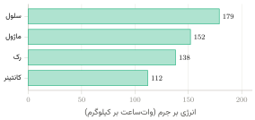
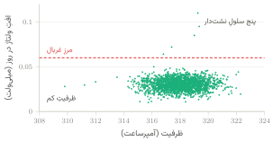
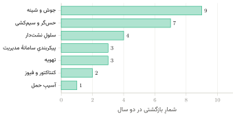
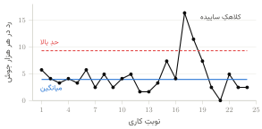
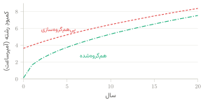
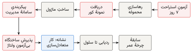
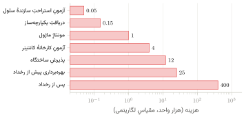
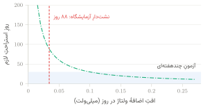
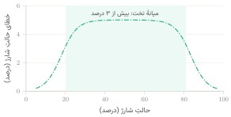

45 ساختِ سلول، بستهٔ باتری، سامانهٔ مدیریتِ باتری و کانتینرِ ذخیرهساز
45.1 نقشهٔ فصل
پس از این فصل، خواننده میتواند:
- معماریِ سلول و بستهٔ باتری را از الکترود تا کانتینر توضیح دهد و قیدهای طراحی را با عدد بسنجد: موازنهٔ الکترودها، انرژی بر جرم در هر سطح و پنجرهٔ ولتاژ در برابرِ سامانهٔ مدیریت و مبدّل.
- نقشهٔ ساختِ سلول را در سطحِ هدف و کنترل دنبال کند، بی هیچ دستورِ ساخت: پوشش، اتاقِ خشک، شکلدهی، پیرسازی، درجهبندی و ردیابی.
- دادهٔ شکلدهی و درجهبندیِ یک محموله را برای سلولهای دورافتاده بخوانَد و عیبهای داده را از عیبهای سلول جدا کند.
- کنترلهای مونتاژِ ماژول، رک و کانتینر را با شاهدشان بشناسد: همگروهسازی، جوش، گشتاور، عایق و پیکربندیِ سامانهٔ مدیریت.
- شبیهسازِ آموزشیِ حالتِ شارژ را با ناورداها و آزمونهای مرزی بسازد و بیازماید، بی آنکه به هیچ باتریِ واقعی وصل شود.
- ایمنی و چرخهٔ عمر را در سطحِ مفهوم و رابط ببیند: باتریای که خاموش نمیشود، حمل، جایگزینی و بازیافت.
- یک عیبِ ساختگیِ سلول را از دریافت تا سابقهٔ چرخهٔ عمر دنبال کند و بگوید کدام شاهد کجا جا ماند.
پیشنیازها: باتری و ذخیرهسازی (فصل 19) و سامانهٔ تولید و کیفیت (فصل 40).
- ظرفیتِ یک رشتهٔ سری را کدام سلول تعیین میکند؟
- چرا سلولِ لیتیومی پس از ساخت مدتی نگه داشته و ولتاژش دوباره اندازه گرفته میشود؟
- پنجرهٔ حالتِ شارژِ S1 چیست و چرا تمامِ ظرفیت به کار نمیرود؟
- یک باتری با کنتاکتورِ باز آیا بیبرق است؟
پاسخها: (۱) ضعیفترین سلول؛ (۲) تا سلولهایی که خودتخلیهٔ زیاد دارند، یعنی اتصالِ کوتاهِ درونیِ ریز، پیدا شوند؛ (۳) 10–90 %، برای عمر و حاشیهٔ ایمنی؛ (۴) نه، فقط تقسیم شده است. اگر دو پرسش یا بیشتر را نتوانستید، بخش 19.4.3، بخش 19.4.1، بخش 19.2.6 و بخش 19.3.2 را مرور کنید.
جایگاهِ این فصل در نیروگاهِ P. فصلِ ۱۹ باتریِ S1 را طراحی کرد: سلولهای LFP 314 Ah، ماژولهای ۵۲ سلولیِ سری، هشت ماژول در هر رک، دوازده رک در هر کانتینر و هشت کانتینر. یعنی 39,936 سلول و 40.13 MWh با چهار مبدّلِ 5 MW (D-023). این فصل همان باتری را به دو کارخانهٔ ساختگی میبرد: سازندهٔ سلول و یکپارچهساز (A-474). نخست معماری را عددی میکند. سپس کنترلها و دادههای ساخت را میخوانَد: پوشش، اتاقِ خشک، یک محمولهٔ ۲۰۰۰ سلولی، همگروهسازی، جوشها و پیکربندیِ سامانهٔ مدیریت. بعد ایمنی و چرخهٔ عمر را در سطحِ رابط میبیند. در آزمایشگاه، یک شبیهسازِ آموزشیِ حالتِ شارژ با ناورداهایش آزموده میشود. یک عیبِ ساختگی هم از آزمونِ استراحتِ سازندهٔ سلول تا سابقهٔ چرخهٔ عمر دنبال میشود. همه با تصمیمِ D-049 جمع میشوند.
سازندهها، محمولهها، دادهها و عیبها ساختگیاند. این فصل هیچ دستورِ ساختِ سلول نمیدهد: نه ترکیبِ دوغاب، نه دما یا زمانِ خشککردن، نه جریان یا ولتاژِ شکلدهی برای اجرا، نه گامهای کار با الکترولیت. ساختِ سلول در مقیاسِ کوچک خطرناک است و در اینجا هرگز پیشنهاد یا توصیف نمیشود. هر گام فقط با هدف، کنترل و شاهدش آمده است. کار روی باتریِ باردار، جداسازی و جایگزینیِ ماژول را افرادِ صلاحیتدار با رویهٔ مکتوبِ یکپارچهساز انجام میدهند (فصل 32). هیچ نسخهٔ واحدی برای اطفای حریق داده نمیشود (بخش 19.6). شبیهسازِ این فصل سامانهٔ مدیریتِ باتری نیست.
45.2 الف. معماریِ سلول و بستهٔ باتری
فصلِ ۱۹ الکتروشیمیِ سلول، مدلِ مدارِ معادل، نرخِ C، بازده، پنجرهٔ کار، حالتِ شارژ و سلامت و فرسایش را گفت. این بخش همان مفهومها را با چشمِ سازنده میبیند. هر مفهوم یک اندازهٔ طراحی را تعیین میکند، و هر اندازه در کارخانه کنترلی دارد که آن را نگه میدارد. دادهها ساختگیاند (A-474).
45.2.1 از مبانیِ الکتروشیمی تا کنترلِ ساخت
| مفهوم (فصلِ ۱۹) | اندازهای که تعیین میکند | کنترلِ ساخت |
|---|---|---|
| پتانسیلِ سلول و ولتاژِ مدارِ باز (بخش 19.2.2) | پنجرهٔ ولتاژ، شمارِ سلولِ سری | حدهای سامانهٔ مدیریت، آزمونِ ولتاژِ هر سلول |
| حرکتِ بار و ظرفیت از قانونِ فارادی (بخش 19.2.12) | بارگذاریِ الکترود، مساحت | وزنِ پوشش، ابعادِ برش |
| مقاومتِ درونی (بخش 19.2.3) | توان، گرما | مقاومتِ پالسِ هر سلول، مقاومتِ جوش |
| بازده (بخش 19.2.5) | تلف در چرخهٔ رفتوبرگشت | مقاومتها، مصرفِ کمکی |
| وابستگی به دما (بخش 19.2.15) | گرمایش و سرمایش | یکنواختیِ دما در رک، آزمونِ تهویه |
| فرسایش (بخش 19.2.8) | عمر، تضمین | شکلدهی، رطوبت، همگروهسازی |
| سازوکارهای خرابی (بخش 19.4.8) | ایمنی | ذراتِ بیگانه، آزمونِ استراحت، جوش و عایق |
ایده. سطرِ آخر مهمترین است. بیشترِ خرابیهای خطرناکِ سلول از چیزهایی میآیند که در کارخانه ساخته میشوند: ذرهٔ فلزی میانِ الکترودها، لبهٔ تیزِ برش، رطوبت. اینها در آزمونِ ظرفیت دیده نمیشوند. پس کنترلشان یا در خودِ فرایند است یا در آزمونهایی مانندِ آزمونِ استراحت که برای همین ساخته شدهاند (بخش 45.3.4).
45.2.2 اجزای سلول و تفاوتِ شیمیها و قالبها
| جزء | کار | آنچه سازنده کنترل میکند |
|---|---|---|
| الکترودِ مثبت | میزبانِ لیتیم در دشارژ | بارگذاری، چگالی، یکنواختی |
| الکترودِ منفی | میزبانِ لیتیم در شارژ | بارگذاری، حاشیهٔ ظرفیت نسبت به مثبت |
| جمعکنندهٔ جریان | بردنِ الکترون از ماده به سرِ سلول | ضخامت، تمیزی، چسبندگیِ پوشش |
| جداکننده | جدا نگهداشتنِ الکترودها، گذرِ یون | ضخامت، سوراخها، پایداری در گرما |
| الکترولیت | راهِ یون | مقدار، رطوبت، آلودگی |
| بدنه و سرپوش | نگهداشتن، فشار، تخلیهٔ گاز | آببندی، دریچهٔ ایمنی |
شیمیها و قالبها. فصلِ ۱۹ دو شیمیِ رایج را مقایسه کرد: LFP با ولتاژِ پایینتر، عمرِ بیشتر و پایداریِ گرماییِ بیشتر، و NMC با انرژیِ بیشتر بر جرم (بخش 19.2.2). سه قالبِ اصلی هم هست: منشوری، استوانهای و کیسهای (بخش 19.3.7). برای ساخت، قالب تعیین میکند الکترودها پیچیده شوند یا روی هم چیده شوند، بدنه چگونه بسته شود و سلولها چگونه در ماژول فشرده و جوش داده شوند. سلولِ S1 منشوری است. این فصل همهجا با آن کار میکند.
45.2.3 موازنهٔ الکترودها
ایده. در شارژ، لیتیم از الکترودِ مثبت به منفی میرود. اگر منفی جای کافی نداشته باشد، لیتیم روی سطحش تهنشین میشود. این تهنشینیِ لیتیم ظرفیت را میخورد و ممکن است رشتههایی بسازد که از جداکننده بگذرند. پس طراح ظرفیتِ منفی را کمی بیشتر از مثبت میگیرد. ظرفیتِ سطحیِ هر الکترود از بارگذاری \(w\)، سهمِ مادهٔ فعال \(a\) و ظرفیتِ ویژهٔ \(q\) میآید:
\[ c_\text{A} = \frac{w\,a\,q}{1000}, \qquad \text{N/P} = \frac{c_\text{A,neg}}{c_\text{A,pos}} > 1 \tag{45.1}\]
def areal_capacity(loading_mg_cm2: float, active: float,
spec_mah_g: float) -> float:
"""Areal capacity (mAh/cm2) of an electrode coating: loading x active
share x specific capacity of the active material."""
return loading_mg_cm2 * active * spec_mah_g / 1000.0electrode balance of the 314 Ah LFP cell (teaching design values)
positive 40.0 mg/cm2 x 0.95 x 155 mAh/g = 5.89 mAh/cm2
negative 19.0 mg/cm2 x 0.955 x 340 mAh/g = 6.17 mAh/cm2
facing area for 314 Ah after a first-cycle share of 92%: 5.79 m2
coating error N/P margin
as designed 1.047 +4.7%
positive +3 % 1.017 +1.7%
negative -3 % 1.016 +1.6%
both, at one spot 0.986 -1.4%
the negative must hold more than the positive can give, or
lithium plates on it while charging; a few per cent of
coating weight at one spot uses up the margin - which is
why the coating weight is a controlled characteristic
(lesson B), not a nominal valueمثال 45.1 (سه درصد در یک نقطه) پرسش. با عددهای طرح، نسبتِ منفی به مثبت چیست؟ اگر در یک نقطه پوششِ مثبت 3 % سنگینتر و منفی 3 % سبکتر باشد، چه میشود؟
پاسخ. \(c_\text{A,pos} = 40\times0.95\times155/1000 = 5.89\) و \(c_\text{A,neg} = 6.17\,\text{mAh/cm}^2\)، پس نسبت 1.047. در آن نقطه \(6.17\times0.97/(5.89\times1.03) = 0.986\)، یعنی کمتر از یک.
تفسیر. حاشیهٔ 4.7 % طرح با دو خطای 3 % در یک نقطه از میان میرود. ظرفیتِ کلِ سلول تقریباً همان میماند و آزمونِ ظرفیت چیزی نمیبیند. اما در همان نقطه لیتیم تهنشین میشود. پس وزنِ پوشش در سراسرِ ورق یک مشخصهٔ بحرانی است و نقشهٔ کنترل میخواهد (بخش 45.3.2). عددِ واقعیِ حاشیه از سازنده است.
45.2.4 انرژی و جرم از سلول تا کانتینر
ایده. هر سطحِ بالاتر سازه، خنککاری، سیمکشی و حفاظت میافزاید. پس انرژی بر جرمِ سامانه کمتر از سلول است. با شمارِ سلول \(n\) در هر سطح و ضریبِ سربارِ جرم \(f\):
\[ \frac{E}{m} = \frac{n\,Q\,V_\text{nom}}{n\,m_\text{cell}\,f} \tag{45.2}\]
energy and mass from cell to container (mass overheads teaching)
level cells kWh mass kg Wh/kg
cell 1 1.0 6 179
module 52 52.2 344 152
rack 416 418.0 3028 138
container 4992 5016.0 44728 112
system: 8 containers, 39,936 cells, 40.13 MWh (ch 19: 40.13)
each level adds structure, cooling, wiring and protection:
the cell's energy density is not the system's - a buyer
compares containers by usable MWh at the PCS, not cells
مثال 45.2 (انرژیِ سلول، انرژیِ کانتینر) پرسش. انرژیِ یک ماژول و یک کانتینر چیست؟ انرژی بر جرم از سلول تا کانتینر چقدر کم میشود؟
پاسخ. ماژول \(52\times314\times3.2 = 52.2\,\text{kWh}\) و کانتینر 5.02 MWh. انرژی بر جرم از 179 به 112 Wh/kg میرسد، یعنی 37 % کمتر.
تفسیر. خریدار کانتینرها را با مگاواتساعتِ قابلِ استفاده در مبدّل مقایسه میکند، نه با انرژیِ سلول. دو پیشنهاد با یک سلول ممکن است در کانتینر بسیار متفاوت باشند. فصلِ ۱۹ همین را برای ردپای زمین نشان داد.
45.2.5 پنجرهٔ ولتاژ در برابرِ سامانهٔ مدیریت و مبدّل
voltage windows (cells in series) against the BMS limits and the PCS
level cells cell limits V BMS limits V nominal V
module 52 130 - 190 135 - 187 166
rack 416 1040 - 1518 1082 - 1498 1331
PCS: full power above 1,150 V (ch 19, A-296), top 1,500 V (teaching)
the rack's BMS window 1082 - 1498 V: below 1150 V the PCS derates,
above 1500 V it may not start - the cell count is chosen against two
makers' limits at once; changing the BMS limits changes the
rack window, so the BMS setting is an interface itemمثال 45.3 (دو سازنده، یک پنجره) پرسش. پنجرهٔ ولتاژِ رک با حدهای سلول و با حدهای سامانهٔ مدیریت چیست؟ با مبدّل چه نسبتی دارد؟
پاسخ. با حدهای سلول \(416\times2.5 = 1040\) تا \(416\times3.65 = 1518\,\text{V}\). با حدهای سامانهٔ مدیریت 1082 تا 1498 V. مبدّل بالای 1150 V توانِ کامل میدهد (بخش 19.3.11).
تفسیر. پایینِ پنجره زیرِ 1150 V است، اما فصلِ ۱۹ نشان داد در پنجرهٔ حالتِ شارژِ 10–90 % ولتاژِ رک بالای آن میماند. بالای پنجره به سقفِ مبدّل نزدیک است. هر تغییرِ حدِ ولتاژ در سامانهٔ مدیریت، پنجرهٔ رک را جابهجا میکند. پس تنظیمِ سامانهٔ مدیریت یک قلمِ رابط میانِ دو سازنده است، نه تنظیمِ داخلیِ یکی.
45.2.6 طراحیِ بسته و کانتینر
| عنصر | انتخابِ طراحی | شاهدِ ساخت |
|---|---|---|
| آرایشِ سری و موازی | ۵۲ سری در ماژول، ۴۱۶ سری در رک، رکها موازی | نقشهٔ رابطها، آزمونِ ولتاژ |
| شینه و جوش | شینههای جوششده به سرِ سلولها | مقاومتِ هر جوش (بخش 45.3.6) |
| فیوز و کنتاکتور | در هر رک، حفاظتِ اتصالِ کوتاه | آزمونِ کارکرد، گواهی |
| جداسازی و پایشِ عایق | سامانهٔ شناور با پایشِ عایق | آزمونِ عایق (بخش 19.3.9) |
| حسگرها | ولتاژِ هر سلول، دمای نقطهها، جریانِ رک | کالیبراسیون، نقشهٔ حسگرها |
| سامانهٔ مدیریت | حدها، متعادلسازی، حالتِ شارژ | پیکربندی با اثرانگشت (بخش 45.3.7) |
| مدیریتِ گرما | مایع یا هوا، یکنواختیِ دما | آزمونِ جریان و دما |
| بدنه و تهویه | کانتینرِ بسته با تهویه و آشکارسازی | آزمونِ آببندی، سیگنالها |
| آشکارسازی و اطفا | راهبرد از ارزیابیِ خطر و مقامِ مسئول | رابطها، نه نسخه (بخش 19.6) |
| دسترسی و بالابری | درها، فاصلهها، نقطههای بالابری | نقشه، آزمونِ بار |
| حمل | حالتِ شارژِ کم، مهار، ضربهنگار | سابقهٔ حمل (بخش 45.4.3) |
ایده. هر سطرِ جدول 45.3 هم یک انتخابِ طراحی است و هم یک شاهد. فصلِ ۱۹ انتخابها را گفت. این فصل شاهدها را دنبال میکند. راهبردِ آشکارسازی و اطفا از ارزیابیِ خطر، آزمونهای محصول و مقامِ مسئول میآید. این فصل فقط رابطهایش را نشان میدهد.
45.2.7 رابطها از سلول تا نیروگاه
interfaces from cell to plant and the evidence at each
interface crosses evidence
cell - module current, heat, pressure welds, compression
module - BMS cell voltages, temperatures sensor map, calibration
module - rack DC bus, cooling, frame torque, insulation, flow
rack - container DC, auxiliaries, data isolation, HVAC, fire
container - PCS DC window, limits, commands window check, test record
container - plant SCADA, alarms, isolation point list, interlocks
container - site foundation, earthing, access survey, continuity
7 interfaces; three makers meet at them (cell maker,
integrator, PCS maker) - each row needs one owner of the
value and one of the evidence (ch 18, ch 19)ایده. سه سازنده در این رابطها به هم میرسند: سازندهٔ سلول، یکپارچهساز و سازندهٔ مبدّل. هر سطر یک مالک برای مقدار و یک مالک برای شاهد میخواهد. رابطی که مالکِ شاهد ندارد، همان جایی است که زنجیرهٔ شاهد در بخش 45.5.5 پاره میشود.
45.2.8 تورمِ سلول و نیروی تسمهها
ایده. سلولهای منشوری با پیرشدن کمی ضخیم میشوند. در ماژول، سلولها میانِ دو صفحهٔ انتهایی با تسمه بسته شدهاند. در مدلِ آموزشی، هر سلول فنری با سختیِ \(k_\text{c}\) است و ۵۲ فنر سریاند. قاب فنری با سختیِ \(k_\text{f}\) است. رشدِ آزادِ \(\delta\) میانِ فشردهشدنِ سلولها و کشیدهشدنِ قاب تقسیم میشود:
\[ x_\text{f} = \delta\,\frac{k_\text{c}/n}{k_\text{c}/n + k_\text{f}}, \qquad F = F_0 + k_\text{f}\,x_\text{f} \tag{45.3}\]
module of 52 prismatic cells (72 mm) held by straps (teaching stiffnesses)
cell growth free stack growth mm strap force kN
0% 0.0 10.0
1% 37.4 13.6
3% 112.3 20.8
5% 187.2 28.0
cells swell with age; a frame that is too stiff loads them
and itself, one that is too soft lets them separate from
the cooling plate - the frame is designed for end-of-life
growth, and the compression force at assembly is recordedمثال 45.4 (قابی برای پایانِ عمر) پرسش. اگر سلولها 3 % ضخیم شوند، رشدِ آزادِ دسته و نیروی تسمه چیست؟
پاسخ. \(0.03\times52\times72 = 112\,\text{mm}\) رشدِ آزاد، و نیروی تسمه از 10 به 20.8 kN میرسد.
تفسیر. قابِ بسیار سخت سلولها و خودش را بار میکند. قابِ بسیار نرم اجازه میدهد سلولها از صفحهٔ خنککاری جدا شوند. پس قاب برای رشدِ پایانِ عمر طراحی میشود و نیروی فشردن هنگامِ مونتاژ ثبت میشود (جدول 45.5). سختیها و رشدِ واقعی از آزمونهای سازندهٔ سلول میآیند.
45.2.9 پراکندگیِ دما در رک و پیرشدنِ ناهمسان
ایده. اگر یک سلول گرمتر از میانگینِ رک باشد، تندتر پیر میشود. در قاعدهٔ آموزشی، فرسایش با هر 10 K دو برابر میشود (بخش 19.2.8). رشتهٔ سری را ضعیفترین سلول تعیین میکند:
\[ h_\text{hot} = 1 - f_0\,2^{\Delta T/10}\,t \tag{45.4}\]
cells of one rack 10 years in service, fade 2% a year at the mean temperature
(doubling every 10 K, teaching)
hottest cell above mean K its health string loss vs mean
0 80.0% 0.0%
3 75.4% 4.6%
6 69.7% 10.3%
10 60.0% 20.0%
the hottest cell sets the string: a spread of 6 K costs the
whole rack 10% of its capacity by year 10 - the
air or liquid path is tested for evenness at the factory,
and the BMS temperature map shows it in serviceمثال 45.5 (شش کلوین، ده درصد) پرسش. پس از ده سال، اگر گرمترین سلول 6 K از میانگین گرمتر باشد، رک چقدر ظرفیت از دست میدهد؟
پاسخ. سلامتِ آن سلول \(1 - 0.02\times2^{0.6}\times10 = 69.7\,\%\) است، در برابرِ 80 % میانگین. رک 10 % از ظرفیتش را از دست میدهد.
تفسیر. یکنواختیِ دما یک اندازهٔ طراحی است که در کارخانه آزموده میشود: جریانِ هوا یا مایع در هر ماژول و نقشهٔ دمای کانتینر در آزمونِ پذیرش. در کار، نقشهٔ دمای سامانهٔ مدیریت همین را نشان میدهد. فصلِ ۱۹ دمای کانتینر را با تهویه گفت (بخش 19.3.4).
45.2.10 نقشهٔ حسگرهای دما
ایده. سامانهٔ مدیریت دمای هر سلول را نمیخوانَد. چند حسگر در طولِ ماژول میگذارد. اگر یک سلول گرم شود و گرمایش در هر فاصلهٔ سلولی \(g\) کلوین کم شود، دورترین سلول از حسگر با اضافهٔ دیدهنشدهٔ زیر گرمتر است:
\[ \Delta T_\text{unseen} = g\left\lceil \frac{n/s}{2} \right\rceil \tag{45.5}\]
که \(n\) شمارِ سلولها و \(s\) شمارِ حسگرهاست.
temperature sensors along a module of 52 cells; a hot cell's excess
fades 0.8 K per cell of distance (teaching)
sensors farthest cell from a sensor unseen excess K
4 7 5.6
8 4 3.2
13 2 1.6
26 1 0.8
a few sensors read the module, not each cell: the BMS limit
must sit below the cell limit by the unseen excess - the
sensor map is a design input to the temperature margins of
lesson B, and the map is checked at assemblyمثال 45.6 (حاشیهای برای آنچه دیده نمیشود) پرسش. با ۸ حسگر در ماژولِ ۵۲ سلولی و 0.8 K در هر سلول، اضافهٔ دیدهنشده چیست؟
پاسخ. فاصله \(52/8 = 6.5\) سلول است، پس دورترین سلول ۴ سلول از حسگر فاصله دارد و \(4\times0.8 = 3.2\,\text{K}\) دیده نمیشود.
تفسیر. حدِ دمای سامانهٔ مدیریت باید به اندازهٔ این اضافه زیرِ حدِ سلول باشد. پس نقشهٔ حسگرها ورودیِ حاشیههای مثال 45.14 است و در مونتاژ وارسی میشود. حسگری که در جای نقشه نیست، حاشیه را بیاعتبار میکند.
45.2.11 سیمِ حسِ قطعشده
ایده. سامانهٔ مدیریت ولتاژِ هر سلول را با یک سیمِ حس در هر مرز میانِ سلولها میخوانَد. اگر یک سیم قطع شود، دو کانالِ کنارِ آن نادرست میخوانند. جمعِ دو کانال ممکن است درست بماند، پس وارسیِ «جمعِ سلولها برابرِ ولتاژِ ماژول» آن را نمیبیند.
module of 52 cells at 3.3 V; the sense wire between cells 21 and 22 opens
channel 21 reads 0.05 V, channel 22 reads 6.55 V
sum of channels 171.60 V, module voltage measured directly 171.60 V
the sum still agrees - the plausibility that finds it is a
per-cell one: no cell can read near zero or near double while
its neighbours agree; the danger is the other way the fault
can show - a channel frozen at a normal value while its cell
overcharges - which is why the BMS tests its own sense lines
and the test is part of the factory evidenceمثال 45.7 (جمعی که درست است و سلولی که نیست) پرسش. با قطعِ سیمِ میانِ سلولهای ۲۱ و ۲۲، دو کانال چه میخوانند و آیا جمع خطا را نشان میدهد؟
پاسخ. کانالِ ۲۱ 0.05 V و کانالِ ۲۲ 6.55 V. جمع 171.60 V است، برابرِ ولتاژِ ماژول. پس جمع خطا را نشان نمیدهد.
تفسیر. وارسیِ معقولبودن باید در سطحِ هر سلول باشد: هیچ سلولی نزدیکِ صفر یا دو برابر نمیخوانَد وقتی همسایههایش همخواناند. خطرناکتر حالتِ دیگری است: کانالی که روی یک مقدارِ عادی گیر کند، در حالی که سلولش بیش از حد شارژ میشود. پس سامانهٔ مدیریت سیمهای حسِ خودش را میآزماید و این آزمون بخشی از شاهدِ کارخانه است. گیرکردنِ کانال یک حالتِ خرابیِ پنهان است: هیچ هشداری نمیدهد تا آزموده شود.
45.2.12 وزنِ ماژول و جابهجایی
one module: 52 cells x 5.6 kg x 1.18 = 344 kg
far beyond what people lift: lifting points, a lifting aid
rated for the module, and a proof test of the points are
part of the design and the factory evidence; the module is
live while it hangs (lesson C), so the aid is insulated
where it touches - a design question, not a site improvisationایده. ماژولِ 344 kg با دست جابهجا نمیشود. نقطههای بالابری، وسیلهٔ بالابرِ ویژهٔ ماژول و آزمونِ بارِ نقطهها بخشی از طرح و شاهدِ کارخانهاند. ماژولی که آویزان است باردار است (مثال 45.40). پس وسیلهٔ بالابر جایی که تماس دارد عایق است. این پرسشِ طراحی است، نه کارِ بداهه در ساختگاه. فصلِ ۳۱ بالابری را گفت.
45.2.13 حدهای بسته از سلول
حدهای ولتاژ، انرژی و جریانِ هر سطح از حدهای سلول و آرایشِ سری و موازی میآیند. همین تابع پنجرههای بخش 45.2.5 را ساخت:
def pack_limits(n_s: int, n_p: int, q_ah: float, v_min: float, v_nom: float,
v_max: float, c_max: float) -> dict:
"""Voltage window, nominal energy and current limit of a pack."""
return dict(v_min=n_s * v_min, v_nom=n_s * v_nom, v_max=n_s * v_max,
e_kwh=n_s * n_p * q_ah * v_nom / 1000.0,
i_max=n_p * q_ah * c_max)\[ V_\text{min,max} = n_\text{s}\,V_\text{cell,min,max}, \qquad E = n_\text{s}\,n_\text{p}\,Q\,V_\text{nom}, \qquad I_\text{max} = n_\text{p}\,Q\,c_\text{max} \tag{45.6}\]
مثال 45.8 (یک رک با دست) پرسش. برای رکِ ۴۱۶ سلولیِ سری، بیشینهٔ جریان با 0.5C و انرژیِ اسمی چیست؟
پاسخ. \(I_\text{max} = 1\times314\times0.5 = 157\,\text{A}\) و \(E = 416\times314\times3.2 = 418\,\text{kWh}\).
تفسیر. همین 157 A جریانِ همهٔ درسهای جوش و گرماست (مثال 45.13). هر حدِ رک از سلول میآید. پس اگر سازندهٔ سلول برگهٔ داده را عوض کند، همهٔ حدهای بالادست هم عوض میشوند. برگهٔ داده با نسخهاش یک قلمِ پیکربندیِ باتری است.
- جدول 45.1 را با یک مثال توضیح دهید: کدام مفهوم کدام کنترلِ ساخت را میخواهد؟
- چرا خطرناکترین عیبهای سلول در آزمونِ ظرفیت دیده نمیشوند؟
- کارِ جمعکنندهٔ جریان و جداکننده را بگویید.
- قالبِ سلول چه چیزهایی را در ساخت تعیین میکند؟
- معادلهٔ 45.1 را توضیح دهید. چرا نسبت باید بزرگتر از یک باشد؟
- چرا خطای پوشش در یک نقطه خطرناکتر از خطای میانگین است؟
- معادلهٔ 45.2 را توضیح دهید. انرژی بر جرم کجا از دست میرود؟
- چرا خریدار کانتینرها را با انرژیِ سلول مقایسه نمیکند؟
- پنجرهٔ ولتاژِ رک را با حدهای سلول و سامانهٔ مدیریت حساب کنید.
- چرا تنظیمِ سامانهٔ مدیریت قلمِ رابط است؟
- سه عنصر از جدول 45.3 را با شاهدشان نام ببرید.
- چرا راهبردِ اطفا در این فصل نسخه نمیگیرد؟
45.3 ب. تولید و کیفیت
این بخش ساختِ سلول و مونتاژِ ماژول، رک و کانتینر را در سطحِ هدف، کنترل و شاهد دنبال میکند. هیچ مقدارِ فرایندی داده نمیشود، جز عددهای آموزشیای که برای نشاندادنِ منطقِ کنترل لازماند. دادهها ساختگیاند (A-475 تا A-477).
45.3.1 نقشهٔ ساخت از ماده تا کانتینر
| گام | هدف | کنترل | شاهد |
|---|---|---|---|
| دریافتِ مواد | مادهٔ درست و تمیز | گواهیِ دسته، نمونه | گواهی، نتیجهٔ نمونه |
| پوششدهیِ الکترود | بارگذاریِ یکنواخت | وزنِ پوشش در عرض و طول | نمودارِ کنترل |
| خشککردن و فشردهسازی | ضخامت و چگالیِ درست | ضخامت، چگالی | سابقهٔ هر رول |
| برش | لبهٔ تمیز، بیپلیسه | بازرسیِ لبه | سابقهٔ برش |
| پیچیدن یا چیدن | همترازیِ الکترودها | بازرسیِ همترازی (تصویر) | تصویر یا نتیجه |
| اتصالِ زبانه | اتصالِ کممقاومت | آزمونِ کشش، مقاومت | سابقهٔ جوش |
| بستنِ بدنه | آببندی | آزمونِ نشت | نتیجهٔ نشت |
| پرکردنِ الکترولیت | مقدارِ درست، بیرطوبت | وزن، نقطهٔ شبنمِ اتاق | وزنِ هر سلول، ثبتِ شبنم |
| شکلدهی | لایهٔ سطحیِ پایدار | برنامهٔ سازنده | دادهٔ شکلدهیِ هر سلول |
| پیرسازی و استراحت | پیداکردنِ خودتخلیهٔ زیاد | مدتِ استراحت، افتِ ولتاژ | مقدارِ K هر سلول |
| درجهبندی | ظرفیت و مقاومتِ هر سلول | آزمون، ردهبندی | ردهٔ هر سلول |
| ردیابی | پیوندِ سلول با همهٔ دادهها | شناسهٔ یکتا | تبارنامه |
ایده. فصلِ ۱۹ همین توالی را با هدفِ هر گام نشان داد (بخش 19.4.1). اینجا ستونِ شاهد اضافه شده است، چون خریدار فقط شاهد را میبیند. خریدار وارد اتاقِ خشک نمیشود. اما میتواند ثبتِ نقطهٔ شبنم را بخواهد. فرایندِ شکلدهی را تعیین نمیکند. اما میتواند دادهٔ شکلدهی و مقدارِ K هر سلول را با محموله بخواهد. این بخش سه تا از این شاهدها را عددی میخوانَد: وزنِ پوشش، نقطهٔ شبنم و دادهٔ درجهبندی.
خطرهای فرایند. حلّالهای پوششدهی، گردِ ریز، الکترولیتِ آتشگیر که در تجزیه ترکیبهای سمی میسازد، سلولهای باردار در شکلدهی و پیرسازی، و الکتریسیتهٔ ساکن در هوای بسیار خشک. هر کدام کنترلِ مهندسی، تهویه، تجهیزِ حفاظتِ فردی و برنامهٔ اضطرار دارد (بخش 19.4.2، فصل 32). اینها کارِ کارخانهٔ سلول با مجوز و افرادِ آموزشدیدهاند.
45.3.2 وزنِ پوشش بهعنوانِ مشخصهٔ کنترلشده
ایده. مثال 45.1 نشان داد چند درصد خطای پوشش در یک نقطه حاشیهٔ موازنه را میخورد. پس وزنِ پوشش با شاخصِ توانِ فرایندِ فصلِ ۴۰ سنجیده میشود (بخش 40.4.7). در نقطهٔ \(+3\sigma\)، حاشیهٔ موازنه از معادلهٔ 45.1 میآید.
positive coating weight, target 40.0 mg/cm2 +-2% (teaching),
60 readings a line
line mean sd Cp Cpk worst spot N/P margin
A 40.08 0.201 1.33 1.20 +3.0%
B 40.41 0.354 0.75 0.36 +1.0%
line B coats heavy and wide: its Cpk is low and at its
+3 sigma spot the electrode balance has little margin left;
the coating weight is measured across and along the web
and charted - the numbers in the data sheet rest on itمثال 45.9 (خطی که سنگین و پهن میپوشاند) پرسش. شاخصِ توانِ دو خط چیست؟ در نقطهٔ \(+3\sigma\) هر خط، حاشیهٔ موازنه چه میشود؟
پاسخ. خطِ A: \(C_\text{pk} = 1.20\) و حاشیهٔ +3.0 %. خطِ B: \(C_\text{pk} = 0.36\) و حاشیهٔ +1.0 %.
تفسیر. خطِ B هم میانگینش بالاست و هم پراکندگیاش زیاد. اگر الکترودِ منفی هم در همان نقطه کمی سبک باشد، حاشیه از میان میرود. سلولهای خطِ B آزمونِ ظرفیت را میگذرانند. تفاوت در عمرشان آشکار میشود. پس خریدار نمودارِ کنترلِ وزنِ پوشش را برای محمولهاش میخواهد و شاخصِ توانِ هر خط را در ممیزی میپرسد (بخش 39.5.3).
45.3.3 آبِ هوا در اتاقِ خشک
ایده. آب با نمکِ الکترولیت واکنش میدهد و گاز و اسید میسازد. پس مونتاژِ سلول و پرکردنِ الکترولیت در اتاقِ خشک انجام میشود. معیارِ خشکی نقطهٔ شبنم است. آبِ موجود در هوا با فشارِ بخارِ اشباع در نقطهٔ شبنمِ \(T_\text{d}\) از تقریبِ ماگنوس به دست میآید:
\[ \rho_\text{w} = \frac{216.7\,p_\text{s}(T_\text{d})}{T_\text{d} + 273.15}, \qquad p_\text{s}(T) = 6.112\,e^{17.62\,T/(243.12+T)} \tag{45.7}\]
با \(\rho_\text{w}\) بر حسبِ گرم بر مترمکعب و \(p_\text{s}\) بر حسبِ هکتوپاسکال.
water in the air at a dew point (Magnus, teaching accuracy)
air dew point C water g/m3 share of hall
outside, humid day 20 17.243 183.77%
ordinary factory hall 10 9.383 100.00%
controlled room -10 2.364 25.19%
dry room (teaching) -40 0.177 1.88%
water reacts with the electrolyte salt and makes gas and
acid: electrode and cell assembly are done in air with about
2% of a hall's water - the dew point is
logged continuously, and a record above the limit puts the
hours' cells on hold (the limit is the cell maker's)مثال 45.10 (دو درصدِ آبِ یک سالن) پرسش. هوای سالنِ کارخانه با نقطهٔ شبنمِ 10 °C و هوای اتاقِ خشکِ آموزشی با -40 °C چقدر آب دارند؟
پاسخ. 9.38 و 0.177 g/m³. اتاقِ خشک حدودِ 2 % آبِ سالن را دارد.
تفسیر. نقطهٔ شبنم پیوسته ثبت میشود. اگر از حد بگذرد، سلولهای آن ساعتها نگه داشته میشوند تا وضعیتشان روشن شود. حدِ واقعی را سازندهٔ سلول تعیین میکند. خریدار ثبتِ پیوسته را میخواهد، نه فقط یک عدد در گزارشِ ممیزی. یک ساعتِ بیرون از حد که در هیچ سابقهای نیامده، عیبی است که فقط در عمرِ سلول دیده میشود.
45.3.4 دادهٔ شکلدهی و درجهبندیِ یک محموله
ایده. پس از شکلدهی، هر سلول مدتی استراحت میکند و افتِ ولتاژِ مدارِ بازش اندازه گرفته میشود. مقدارِ K افتِ ولتاژ در هر روز است:
\[ K = \frac{V_\text{start} - V_\text{end}}{t_\text{rest}} \tag{45.8}\]
سلولی با اتصالِ کوتاهِ درونیِ ریز، مثلاً از یک ذرهٔ فلزی، آرام خود را تخلیه میکند و \(K\) بزرگتری دارد. ظرفیت و مقاومتِ پالسش ممکن است عادی باشند. پس سلولهای دورافتاده با امتیازِ استانداردِ مقاوم فصلِ ۴۱ پیدا میشوند (معادلهٔ 41.19). این امتیاز از میانه و انحرافِ مطلقِ میانه ساخته میشود تا خودِ دورافتادهها مقیاس را خراب نکنند. پیش از تحلیل، رکوردهای ناممکن جدا میشوند.
def grading(k_limit: float = 3.5) -> dict:
lot = src.lot()
k, cap, dcir = lot["k"], lot["cap"], lot["dcir"]
bad_record = [i for i, x in enumerate(k) if x < 0]
good = [i for i in range(len(k)) if i not in bad_record]
zk = pvfab.robust_z([k[i] for i in good])
zc = pvfab.robust_z(list(cap))
zr = pvfab.robust_z(list(dcir))
f_k = [good[j] for j, z in enumerate(zk) if z > k_limit]
f_c = [i for i, z in enumerate(zc) if z < -k_limit]
f_r = [i for i, z in enumerate(zr) if z > k_limit]
hit_k = len(set(f_k) & set(lot["leak"]))
hit_c = len(set(f_c) & set(lot["low"]))
hit_r = len(set(f_r) & set(lot["high"]))
csv("ch45-lot.csv", "cap,k", [(round(float(c), 2), round(float(x), 4))
for c, x in zip(cap, k) if x >= 0])
lines = [f"formation and grading of lot L4506: {len(k)} cells (synthetic, "
"A-475)",
f" capacity median {np.median(cap):.1f} Ah, pulse resistance "
f"median {np.median(dcir) * 1000:.0f} uohm,",
f" K-value median {np.median(k[good]):.3f} mV/day (14-day rest)",
f" records rejected before analysis: {len(bad_record)}",
" (a negative voltage drop: a sign or entry error)",
f" robust z beyond {k_limit}: K-value high {len(f_k)}, "
f"capacity low {len(f_c)}, resistance high {len(f_r)}",
" flagged K: " + ", ".join(lot["ids"][i] for i in f_k),
f" planted leakers found: {hit_k} of {len(lot['leak'])}; "
f"low-capacity {hit_c} of {len(lot['low'])};",
f" high-resistance {hit_r} of {len(lot['high'])}",
f" the other {len(f_r) - hit_r} resistance flags are the tail "
"of a normal spread:",
" a flag is a question for the cell's record, not a verdict;",
" a slow leaker passes capacity and resistance and shows only",
" in its rest voltage - the K-value is the screen for internal",
" micro-shorts, and the rest period is part of the process"]
emit("b_grading", lines)
return dict(f_k=f_k, f_c=f_c, f_r=f_r, bad_record=bad_record,
caught=hit_k)formation and grading of lot L4506: 2000 cells (synthetic, A-475)
capacity median 318.0 Ah, pulse resistance median 250 uohm,
K-value median 0.030 mV/day (14-day rest)
records rejected before analysis: 1
(a negative voltage drop: a sign or entry error)
robust z beyond 3.5: K-value high 5, capacity low 3, resistance high 4
flagged K: C45-00211, C45-00640, C45-01187, C45-01530, C45-01902
planted leakers found: 5 of 5; low-capacity 3 of 3;
high-resistance 2 of 2
the other 2 resistance flags are the tail of a normal spread:
a flag is a question for the cell's record, not a verdict;
a slow leaker passes capacity and resistance and shows only
in its rest voltage - the K-value is the screen for internal
micro-shorts, and the rest period is part of the process
مثال 45.11 (سلولی که فقط در استراحت دیده میشود) پرسش. چند رکورد پیش از تحلیل کنار گذاشته میشود؟ چند سلول در هر نشانه پرچم میخورد و چند تا از آنها کاشته بودند؟
پاسخ. یک رکورد با افتِ ولتاژِ منفی، یعنی خطای علامت یا ورود. پرچمها: پنج در \(K\)، سه در ظرفیت و چهار در مقاومت. همهٔ پنج نشتدار، سه کمظرفیت و دو پرمقاومتِ کاشته پیدا شدند. دو پرچمِ دیگرِ مقاومت دنبالهٔ یک پراکندگیِ عادیاند.
تفسیر. نشتدارها در ظرفیت و مقاومت عادیاند و فقط در مقدارِ K دیده میشوند (شکل 45.2). پس مدتِ استراحت خودش بخشی از فرایند است (بخش 45.5.3). پرچم یک پرسش است، نه حکم. دو سلولِ پرمقاومتِ اضافه با سابقهشان بررسی میشوند. فصلِ ۱۹ همین غربال را با آمارِ محموله ساخت (بخش 19.4.12).
45.3.5 همگروهسازیِ سلولها در ماژول
ایده. رشتهٔ سری فقط ظرفیتِ ضعیفترین سلولش را میدهد (بخش 19.4.3). اگر سلولها به ترتیبِ رسیدن در ماژولها گذاشته شوند، هر ماژول یک سلولِ ضعیف دارد. اگر بر پایهٔ ظرفیت مرتب شوند، سلولهای همظرفیت کنار هم مینشینند.
1989 graded cells into modules of 52 in series;
a string delivers its weakest cell
method modules mean of string min Ah spread lost Ah
arrival order 38 315.02 3.01
sorted 38 317.89 0.11
sorting gains 2.87 Ah a module (0.91%); the BMS balances
charge, not capacity - a matched string uses more of its
cells; the bin of each cell goes into the module recordمثال 45.12 (ظرفیتی که با مرتبکردن پس گرفته میشود) پرسش. ظرفیتِ ماژولها با ترتیبِ رسیدن و با مرتبکردن چیست؟
پاسخ. با ترتیبِ رسیدن میانگینِ کمینه 315.02 Ah است و با مرتبکردن 317.89 Ah، یعنی 2.87 Ah یا 0.91 % بیشتر برای هر ماژول.
تفسیر. سامانهٔ مدیریت بار را متعادل میکند، نه ظرفیت را. ظرفیتِ ازدسترفته در ماژولِ ناهمگون با متعادلسازی برنمیگردد. ردهٔ هر سلول و شناسهاش در سابقهٔ ماژول میرود. این همان سابقهای است که در بخش 45.5.5 یک عیب را تا سلول ردیابی میکند.
45.3.6 جوشهای شینه
ایده. شینههای ماژول با جوشِ لیزری به سرِ سلولها بسته میشوند. جوشِ سرد، یعنی جوشی با پیوندِ ناقص، روزِ نخست رسانا است. اما مقاومتش بیشتر است و در کار گرم میشود. گرمای هر جوش \(P = I^2 R\) است.
laser welds of one module's busbars: 102 welds, current 157 A (0.5 C)
resistance median 20.1 uohm, limit 30 uohm (teaching)
welds over the limit: 2 (positions 34, 35)
heat: good weld 0.50 W, worst 1.50 W (3.0 x)
module drop over all welds: 331 mV
a cold weld conducts on day one and heats in service: the
resistance of every weld is measured and kept - a visual
check sees the bead, not the bondمثال 45.13 (مهره را میبیند، پیوند را نه) پرسش. چند جوش از حدِ آموزشیِ 30 μΩ میگذرند؟ گرمای بدترین جوش در 0.5C چند برابرِ جوشِ سالم است؟
پاسخ. دو جوش، شمارههای ۳۴ و ۳۵. بدترین 1.50 W در برابرِ 0.50 W، یعنی سه برابر.
تفسیر. بازرسیِ چشمی شکلِ مهرهٔ جوش را میبیند، نه پیوند را. مقاومتِ هر جوش اندازه گرفته و نگه داشته میشود. دو جوشِ سرد کنارِ هم نشانهٔ یک علتِ مشترکاند، مثلاً آلودگیِ سطح یا جابهجاییِ قید. پس پیش از تعمیر، علت پیدا میشود. فصلِ ۴۴ همین منطق را برای اتصالِ پیچیِ شینه گفت (بخش 44.3.7).
45.3.7 پیکربندیِ سامانهٔ مدیریتِ باتری
ایده. حدهای سامانهٔ مدیریت، یعنی بیشینه و کمینهٔ ولتاژ و دما در شارژ و دشارژ، باید با حاشیهای معین در داخلِ حدهای برگهٔ دادهٔ سلول باشند. هر حدِ «بالا» باید دستکم به اندازهٔ حاشیه زیرِ حدِ سلول باشد و هر حدِ «پایین» بالای آن:
\[ S_\text{hi} \le L_\text{hi} - m, \qquad S_\text{lo} \ge L_\text{lo} + m \tag{45.9}\]
def bms_check(settings: dict, cell: dict, margin: dict) -> list:
"""Compare each BMS limit with the cell's data and the required margin:
(name, setting, cell limit, ok). 'hi' limits must sit below the cell
limit by the margin, 'lo' limits above it."""
out = []
for name, (kind, value) in settings.items():
lim = cell[name]
m = margin.get(name, 0.0)
ok = value <= lim - m if kind == "hi" else value >= lim + m
out.append((name, value, lim, ok))
return outBMS limits as configured against the cell data and the required margins
limit setting cell margin ok
v_max 3.60 3.65 0.03 yes
v_min 2.60 2.50 0.05 yes
t_charge_max 58.00 55.00 3.00 NO
t_charge_min 2.00 0.00 2.00 yes
t_discharge_max 55.00 60.00 3.00 yes
configuration fingerprint bcfef7b4e052956e
1 limit wrong: t_charge_max - set above the cell's own
charging limit; the cell data sheet, the BMS settings and the
integrator's test record must name the same values, and the
fingerprint ties the delivered configuration to the recordمثال 45.14 (حدی بالاتر از حدِ سلول) پرسش. کدام حد نادرست است و چه باید کرد؟
پاسخ. بیشینهٔ دمای شارژ 58 °C تنظیم شده است، در حالی که سلول خودش 55 °C را مجاز میداند و حاشیهٔ لازم 3 K است. پس حد باید 52 °C یا کمتر باشد. پیکربندی درست میشود و اثرانگشتِ تازه ثبت میشود.
تفسیر. برگهٔ دادهٔ سلول، تنظیمهای سامانهٔ مدیریت و سابقهٔ آزمونِ یکپارچهساز باید یک عدد بگویند. اثرانگشتِ پیکربندی، همان روشِ فصلِ ۴۴ (بخش 44.4.5)، پیکربندیِ تحویلی را به سابقه گره میزند. چنین خطایی در هیچ آزمونِ کارخانه دیده نمیشود، چون کانتینر در کارخانه به 58 °C نمیرسد.
45.3.8 مونتاژِ ماژول، رک و کانتینر و شاهدِ آزمون
| گام | کنترل | شاهد |
|---|---|---|
| دریافتِ سلول | شناسه، ولتاژ، فایلِ محموله | فایلِ مقدارِ K و ردهٔ هر سلول |
| همگروهسازی | ردهها | فهرستِ سلولهای هر ماژول |
| فشردهسازی و قاب | نیروی فشار | سابقهٔ نیرو |
| جوشِ شینه | مقاومتِ هر جوش | سابقهٔ جوش |
| اتصالهای پیچی | گشتاور، علامت | سابقهٔ گشتاور |
| عایق | آزمونِ عایقِ ماژول و رک | نتیجهٔ آزمون |
| حسگرها و سیمکشی | نقشهٔ حسگر، پیوستگی | نتیجهٔ آزمون |
| سامانهٔ مدیریت | حدها، نسخه | اثرانگشت |
| مدارِ خنککاری | فشار، جریان | نتیجهٔ آزمون |
| کانتینر | آببندی، تهویه، سیگنالهای آشکارسازی | آزمونِ پذیرشِ کارخانه |
| آزمونِ سامانه | شارژ و دشارژ با توان، بازده | گزارشِ آزمون |
ایده. فصلِ ۱۹ آزمونِ پذیرشِ کارخانهٔ کانتینر را گفت (بخش 19.4.17). جدولِ بالا شاهدِ هر گام را پیش از آن آزمون میگذارد. آزمونِ سامانه نشان میدهد کانتینر کار میکند. سابقهٔ گامها نشان میدهد هر سلول، جوش و اتصال درست ساخته شده است، و اگر نشده بود کجاست.
45.3.9 صلاحیتِ تأمینکننده و شناساییِ سلولِ ورودی
ایده. یکپارچهساز سلول را نمیسازد. پس پیش از سفارش، سازندهٔ سلول را ممیزی میکند (بخش 39.5.3) و گواهیهای نوعیِ همان سلول را میخواهد (STD-096، STD-101). در دریافت، شناساییِ ورودی سه کار میکند. نخست شناسه و ولتاژِ هر سلول را میخوانَد. دوم فایلِ دادههای محموله را با سلولها تطبیق میدهد. سوم نمونهای را دوباره میسنجد تا درستیِ فایل را بیازماید. فصلِ ۱۹ نمونهگیریِ ورودی را گفت (بخش 19.4.4). بخش 45.5.2 نشان میدهد چرا این نمونه سلولها را غربال نمیکند، بلکه فایل را میآزماید.
45.3.10 لبهٔ پوشش و پهنای برش
ایده. پوشش در لبههای ورق اغلب ضخیمتر از میانه است. لبهٔ سنگین موازنهٔ الکترودها را میشکند (مثال 45.1). پس در برش، باریکهها فقط از جایی برداشته میشوند که بارگذاری در رواداری است. بقیه دور ریخته میشود.
positive coating across a 600 mm web: +6% at the edges, fading over 25 mm
(teaching profile); lanes kept where loading is within +-2%
usable width 566 mm; trimmed 34 mm (5.7% of the coated web)
N/P at the very edge (negative flat): 0.988 - below one
the heavy edge is trimmed away at slitting: material is
traded for balance, and the profile across the web is part
of the coating record, not only the meanمثال 45.15 (مادهٔ دورریخته برای موازنه) پرسش. با 6 % بارِ اضافه در لبه که در 25 mm محو میشود، چه پهنایی قابلِ استفاده است؟
پاسخ. 566 mm از 600، یعنی 34 mm یا 5.7 % دور ریخته میشود. در خودِ لبه نسبتِ منفی به مثبت 0.988 است.
تفسیر. کارخانه ماده را با موازنه معامله میکند. نیمرخِ پوشش در عرضِ ورق بخشی از سابقهٔ پوشش است، نه فقط میانگینش. نیمرخِ بدتر یعنی دورریزِ بیشتر یا، اگر برش جابهجا شود، سلولهایی با لبهٔ نامتوازن.
45.3.11 وزنِ پرکردنِ الکترولیت
electrolyte fill weight relative to target (teaching limits 0.985 - 1.015),
80 cells
mean 0.9959, sd 0.0061: Cp 0.82, Cpk 0.60
cells under the lower limit in the sample: 1; expected share 3.61%
an under-filled cell passes formation and loses capacity
faster; each cell is weighed before and after filling and
both weights stay in its record; Cpk 0.60: the line fills
light and wide - the low side matters more than the high,
so the mean is centred first, then the spread narrowedمثال 45.16 (خطی که سبک پر میکند) پرسش. شاخصِ توانِ وزنِ پرکردن چیست؟ چه سهمی از سلولها زیرِ حد انتظار میرود؟
پاسخ. \(C_\text{p} = 0.82\) و \(C_\text{pk} = 0.60\)، با میانگینِ 0.9959 و انحرافِ معیارِ 0.0061. حدودِ 3.6 % زیرِ حدِ پایین.
تفسیر. سلولِ کمپر شکلدهی را میگذراند و تندتر ظرفیت از دست میدهد. پس سمتِ پایین مهمتر از سمتِ بالاست. نخست میانگین به هدف برمیگردد، سپس پراکندگی کم میشود. وزنِ هر سلول پیش و پس از پرکردن در سابقهاش میماند. خریدار خلاصهٔ آن را با محموله میخواهد.
45.3.12 ردههای ظرفیتِ یک محموله
capacity bins of lot L4506 after the K and resistance screens
(1992 cells; teaching edges)
bin Ah range cells share
A >= 316 1853 93.0%
B 313 - 316 136 6.8%
reject 300 - 313 3 0.2%
bin A fills 35 modules of 52; bin B cells go to another order or a
lower-rated product, never mixed into an A module - mixing
bins undoes the matching (lesson B); the bin is printed
with the cell's IDمثال 45.17 (سلولهای ردهٔ B کجا میروند؟) پرسش. سهمِ هر رده چیست؟ ردهٔ A چند ماژول پر میکند؟
پاسخ. ردهٔ A 93.0 %، ردهٔ B 6.8 % و رد 0.2 %. ردهٔ A ۳۵ ماژولِ ۵۲ سلولی پر میکند.
تفسیر. سلولهای ردهٔ B به سفارشِ دیگری یا محصولِ با ردهٔ پایینتر میروند و هرگز با ماژولِ ردهٔ A قاطی نمیشوند. قاطیکردن همگروهسازی را بیاثر میکند (مثال 45.12). رده با شناسهٔ سلول چاپ میشود.
45.3.13 مقاومتِ پالس و دمای سلول
ایده. مقاومتِ پالس با گرمشدنِ سلول کم میشود. در ضریبِ آموزشیِ \(\alpha_R\)، مقاومت در دمای مرجع:
\[ R_{25} = \frac{R_T}{1 + \alpha_R\,(T - 25)} \tag{45.10}\]
pulse resistance measured on cells between 21 and 29 C, limit 265 uohm at 25 C
(teaching coefficient -1.5%/K); 2000 cells
method over limit wrongly passed wrongly failed
raw reading 155 5 149
corrected to 25 C 11 0 0
a cold cell reads high and a warm one low: grading compares
resistances at one temperature, so each reading carries
the cell's temperature and the correction; the better
control is to let cells settle before the testمثال 45.18 (سلولهایی که هنوز ننشستهاند) پرسش. اگر سلولها در دمای 21 تا 29 °C آزموده شوند و خوانش اصلاح نشود، چند سلول بهنادرست رد یا پذیرفته میشوند؟
پاسخ. بیاصلاح، 149 سلول بهنادرست رد و 5 سلول بهنادرست پذیرفته میشوند. با اصلاح به 25 °C هیچ.
تفسیر. سلولِ سرد بالا و سلولِ گرم پایین خوانده میشود. درجهبندی مقاومتها را در یک دما مقایسه میکند. پس هر خوانش دمای سلول و اصلاحش را با خود دارد. کنترلِ بهتر این است که سلولها پیش از آزمون به دمای اتاق برسند. فصلِ ۱۹ آزمونِ مقاومتِ پالس را گفت (بخش 19.4.13).
45.3.14 انرژیِ آزمونِ کارخانه
factory test of one container (5.02 MWh, 4.01 MWh in the window):
2 full cycles at round trip 86%: 1.12 MWh lost = 0.08 k u
at 2.5 MW of factory supply a cycle takes 3.2 h; the factory needs that
much grid or a second container to cycle against
(back-to-back, as for inverters in ch 44)
the test energy is small money; the grid connection and the
hours set how many containers a factory can test a weekمثال 45.19 (پول کم، ساعت زیاد) پرسش. دو چرخهٔ کامل در آزمونِ کانتینر چقدر انرژی تلف میکند؟ با 2.5 MW تغذیهٔ کارخانه، هر چرخه چقدر طول میکشد؟
پاسخ. \(2\times4.01\times0.14 = 1.12\,\text{MWh}\)، یعنی 0.08 k u. هر چرخه 3.2 ساعت.
تفسیر. پولِ انرژیِ آزمون ناچیز است. آنچه شمارِ کانتینرهای آزموده در هفته را تعیین میکند، اتصالِ شبکهٔ کارخانه و ساعتهاست. راهِ دیگر آزمونِ پشتبهپشتِ دو کانتینر است، همان کاری که فصلِ ۴۴ برای اینورترها کرد (بخش 44.4.17).
45.3.15 سلولهای منتظر در اتاقِ پیرسازی
ایده. طبقِ قانونِ لیتل، شمارِ سلولهای در حالِ استراحت برابرِ آهنگِ تولید ضرب در مدتِ استراحت است:
\[ N_\text{WIP} = \lambda\,t_\text{rest} \tag{45.11}\]
a cell factory making 12,000 cells a day (teaching): cells resting in aging
rest days cells on the racks MWh stored (314 Ah, 3.2 V)
14 168,000 168.8
7 84,000 84.4
3 36,000 36.2
fourteen days of rest hold a plant-sized battery of charged
cells in one building: halving the rest frees half the racks
and half the stored energy - the pressure behind lab D's
shortened test, and the reason the rest time is a contract
item with a record, not the factory's private choiceمثال 45.20 (یک نیروگاه در یک ساختمان) پرسش. با 12,000 سلول در روز و ۱۴ روز استراحت، چند سلول و چند مگاواتساعت در اتاقِ پیرسازیاند؟ با ۷ روز چه؟
پاسخ. 168,000 سلول و 168.8 MWh. با ۷ روز نصف: 84,000 و 84.4 MWh.
تفسیر. چهارده روز استراحت باتریای چهار برابرِ S1 را در یک ساختمان نگه میدارد. نیمهکردنِ استراحت نیمی از قفسهها و انرژیِ ذخیره را آزاد میکند. این همان فشاری است که پشتِ آزمونِ کوتاهشدهٔ بخش 45.5.3 بود. پس مدتِ استراحت بندِ قرارداد با سابقه است، نه انتخابِ خصوصیِ کارخانه. مهارِ آن اتاق هم از جدول 45.6 است.
45.3.16 وارسیِ فایلِ محموله پیش از تحلیل
ایده. فایلِ دادههای محموله ورودیِ همهٔ تحلیلهای بخش 45.3.4 است. اگر فایل خطا داشته باشد، تحلیل سلولِ سالم را پرچم میزند و سلولِ بد را رها میکند. پنج وارسیِ ساده پیش از هر تحلیل اجرا میشود: شناسهٔ تکراری، شناسهٔ گمشده، یکای نادرست، مقدارِ ناممکن و علامتِ نادرست. فصلِ ۴۱ همین را برای فایلِ آزمونِ فلش کرد (بخش 41.6.3).
lot file of L4506 as delivered: 1999 rows for 2000 cells (planted faults)
duplicate IDs: C45-01499
IDs missing: C45-00700, C45-01500
K values a thousand times too small (unit): C45-01201
capacities outside 250-400 Ah: C45-01801
negative K (sign or entry): C45-00999
five checks, each a line of code, run before any analysis;
a file that fails goes back to the cell maker - grading data
with silent faults would flag good cells and pass bad onesمثال 45.21 (پنج خطا در یک فایل) پرسش. فایل چه خطاهایی دارد و با آن چه باید کرد؟
پاسخ. یک شناسهٔ تکراری (C45-01499) که جای C45-01500 نشسته است، یک سلولِ گمشده (C45-00700)، یک مقدارِ K به ولت بهجای میلیولت، یک ظرفیت به کیلوآمپرساعت و یک مقدارِ K منفی.
تفسیر. شناسهٔ تکراری خودش یک سلولِ گمشده هم میسازد. پس دو خطا از یک اشتباهاند. فایلِ ردشده به سازندهٔ سلول برمیگردد. یکپارچهساز آن را درست نمیکند، چون نمیداند مقدارِ درست چیست. این وارسیها کارِ رایانه است و چند ثانیه طول میکشد. ارزششان در این است که بیصدا نیستند.
45.3.17 محمولهها: کنارِ هم یا درهم؟
lot of 2000 cells in a battery of 768 modules of 52 cells
modules holding the lot if it is kept together: 39
modules holding the lot if lots are mixed at random: 718
a recall of the lot opens 39 modules in the first
case and 718 in the second (93% of the battery);
mixing spreads a bad lot thinly - fewer weak cells in one
module - but makes every lot problem a battery-wide one; kept
together, with the lot written on the module, a recall stays
smallمثال 45.22 (فراخوانی که کوچک میماند) پرسش. اگر محمولهٔ ۲۰۰۰ سلولی فراخوانده شود، با نگهداشتنِ محمولهها کنارِ هم و با درهمریختن چند ماژول باز میشوند؟
پاسخ. کنارِ هم: ۳۹ ماژول. درهم: ۷۱۸ ماژول، یعنی 93 % باتری.
تفسیر. درهمریختن یک محمولهٔ بد را در همهجا رقیق میکند، یعنی سلولِ ضعیفِ کمتر در هر ماژول. اما هر مشکلِ محموله را مشکلِ کلِ باتری میکند. کنارِ هم و با شمارهٔ محموله روی ماژول، فراخوان کوچک میماند. این همان «دامنهٔ مهار» در فصلِ ۴۰ است (بخش 40.5.1).
45.3.18 مطالعهٔ سنجهٔ مقاومتِ جوش
four-wire micro-ohm meter on weld resistance: 10 welds x 3 operators x 2
repeatability sd 0.43 uohm, reproducibility sd 0.08 uohm
%GRR of the spread 22 %, distinct categories 6
against the 10 uohm between a good weld and the limit: 6 sd = 26%
the meter tells good welds apart only roughly but separates
a cold weld (40 uohm above) without doubt: what a gauge must
do depends on the decision it serves (ch 40)مثال 45.23 (سنجه برای کدام تصمیم؟) پرسش. درصدِ تکرارپذیری و بازتولیدپذیری و شمارِ ردههای متمایز چیست؟ آیا سنجه برای کارش کافی است؟
پاسخ. 22 % و ۶ ردهٔ متمایز. شش انحرافِ معیارِ سنجه 26 % از فاصلهٔ 10 μΩ میانِ جوشِ خوب و حد است.
تفسیر. سنجه جوشهای خوب را فقط تقریبی از هم جدا میکند. اما جوشِ سرد را که 40 μΩ بالاتر است، بیتردید جدا میکند. اینکه سنجه کافی است یا نه، به تصمیمی بستگی دارد که به آن تکیه میکند. فصلِ ۴۰ همین روش را گفت (بخش 40.4.5).
45.3.19 ممیزیِ سازندهٔ سلول
ایده. یافتههای این فصل به یک ممیزیِ امتیازدار تبدیل میشوند. امتیازِ وزندار بهتنهایی کافی نیست. هر قلمِ کلیدی کف دارد و زیرِ کف یعنی رد، هر چه میانگین باشد (بخش 39.2.4.4).
audit of the fictional cell maker, scored 0-5 from this chapter's findings
item score weight floor
coating control (Cpk) 2.0 2 2.5
dry room records 4.0 1 -
formation and rest records 2.5 2 3.0
grading data file 3.0 1 -
traceability 4.5 2 3.0
change control 3.5 1 -
hazard control 4.0 1 -
weighted score 3.25 of 5; below a floor:
coating control (Cpk), formation and rest records
a good average does not pass a maker who fails a floor: the
rest records and the coating line B are corrective actions
with dates before the next lot is accepted (ch 39)مثال 45.24 (میانگینِ خوب، کفِ شکسته) پرسش. امتیازِ وزندار چیست و کدام قلمها زیرِ کفاند؟
پاسخ. 3.25 از ۵. زیرِ کف: کنترلِ پوشش و سابقهٔ شکلدهی و استراحت.
تفسیر. میانگینِ قابلِ قبول سازندهای را که کفی را شکسته نمیپذیرد. سابقهٔ استراحت و خطِ پوششِ B اقدامِ اصلاحیِ تاریخدار میشوند، پیش از پذیرشِ محمولهٔ بعد. این همان یافتههای مثال 45.9 و مثال 45.60 است، این بار در زبانِ خرید.
45.3.20 انرژیِ شکلدهی در کارخانه
formation of 12,000 cells a day, about 1.5 cycles of charge each (teaching)
energy charged into the cells: 18.1 MWh a day, 6.6 GWh a year
discharged into resistors: all of it lost; into a
regenerative cycler that returns 80%: 5.3 GWh a year back
value at 70 u/MWh: 0.37 M u a year
a cell factory consumes energy on the scale of a small
plant; how it forms its cells shows in its footprint data
(ch 33, ch 39) - a buyer can askمثال 45.25 (کارخانهای به اندازهٔ یک نیروگاه) پرسش. انرژیِ شکلدهیِ 12,000 سلول در روز چیست؟ چرخهگرِ بازگرداننده چه میکند؟
پاسخ. 18.1 MWh در روز و 6.6 GWh در سال. چرخهگری که 80 % را بازمیگرداند، 5.3 GWh در سال پس میدهد، یعنی حدودِ 0.37 M u.
تفسیر. کارخانهٔ سلول انرژیای در اندازهٔ یک نیروگاهِ کوچک مصرف میکند. اینکه سلولها را چگونه شکل میدهد، در دادهٔ ردپای کربنش دیده میشود. خریدار میتواند آن را بپرسد (فصلِ ۳۳ و ۳۹). این عددها آموزشیاند و هیچکدام برنامهٔ شکلدهی نیستند.
45.3.21 بازگشتیها بر پایهٔ علت
ایده. پس از دو سال، ماژولها و رکهایی که از ناوگان برگشتهاند، بر پایهٔ علت شمرده میشوند. هر علت به کنترلی برمیگردد که میتوانست آن را بگیرد. نمودارِ پارتو فصلِ ۴۰ (بخش 40.5.3) نشان میدهد کجا کار کنیم.
module and rack returns of a fleet in two years by cause
(synthetic, 29 returns)
cause n share cumulative
weld or busbar joint 9 31% 31%
BMS sensor or wiring 7 24% 55%
cell leaker (self-discharge) 4 14% 69%
BMS configuration 3 10% 79%
HVAC fan or controller 3 10% 90%
contactor or fuse 2 7% 97%
transport damage 1 3% 100%
the two largest causes are 55% of returns, and both are
assembly controls of the integrator, not the cell: the cell
is not where most trouble starts - the joints and the
wiring around it are (as for inverters, ch 44)
مثال 45.26 (مشکل بیشتر در اطرافِ سلول است) پرسش. دو علتِ بزرگ چه سهمی دارند و کنترلشان دستِ کیست؟
پاسخ. جوش و اتصالِ شینه 31 % و حسگر و سیمکشیِ سامانهٔ مدیریت 24 %، روی هم 55 %. هر دو کنترلِ مونتاژِ یکپارچهسازند. سلولِ نشتدار 14 % است.
تفسیر. بیشترِ دردسر از سلول آغاز نمیشود. از اتصالها و سیمهای اطرافش آغاز میشود. این همان درسِ فصلِ ۴۴ برای اینورتر است: خرابیها بیشتر از جزءهای ارزان و پرشمار میآیند. پس اقدامِ اصلاحیِ نخست جوشسنجیِ همهٔ جوشها و وارسیِ نقشهٔ حسگر در مونتاژ است، نه تعویضِ سازندهٔ سلول.
45.3.22 قاعدههای سازگاریِ پیکربندی
ایده. مثال 45.14 هر حد را با برگهٔ دادهٔ سلول سنجید. اما حدها با هم هم باید سازگار باشند. هشدار باید پیش از قطع بیاید. متعادلسازی باید زیرِ هشدارِ بالا آغاز شود. پنجرهها باید مرتب باشند. این قاعدهها پیش از بارگذاریِ هر فایلِ پیکربندی اجرا میشوند.
RULES = [ # name, rule as a function of the configuration c
("alarm before trip, high voltage",
lambda c: c["v_alarm_hi"] < c["v_trip_hi"]),
("alarm before trip, low voltage",
lambda c: c["v_alarm_lo"] > c["v_trip_lo"]),
("balance below the high alarm",
lambda c: c["v_balance_start"] < c["v_alarm_hi"]),
("alarm before trip, temperature",
lambda c: c["t_alarm_charge_hi"] < c["t_trip_charge_hi"]),
("charge window ordered",
lambda c: c["t_trip_charge_lo"] < c["t_trip_charge_hi"]),
("alarm before trip, current",
lambda c: c["i_alarm_a"] < c["i_trip_a"]),
("SOC window ordered",
lambda c: 0 <= c["soc_lo"] < c["soc_hi"] <= 1),
]consistency rules on a delivered BMS configuration (planted faults)
rule holds
alarm before trip, high voltage NO
alarm before trip, low voltage yes
balance below the high alarm yes
alarm before trip, temperature yes
charge window ordered yes
alarm before trip, current NO
SOC window ordered yes
2 rules broken: an alarm set beyond its own trip never
warns - the trip comes first; rules like these run on every
configuration file before it is loaded, alongside the check
against the cell's limits (lesson B)مثال 45.27 (هشداری که هرگز به صدا درنمیآید) پرسش. کدام قاعدهها شکستهاند و چرا خطرناکاند؟
پاسخ. هشدارِ ولتاژِ بالا 3.62 V است و قطع 3.60 V. هشدارِ جریان 170 A است و قطع 160 A. در هر دو، قطع پیش از هشدار میآید.
تفسیر. هشداری که بعد از قطع تنظیم شده، هرگز هشدار نمیدهد. بهرهبردار بیهیچ نشانهٔ پیشین با قطع روبهرو میشود. این خطا در وارسی با برگهٔ دادهٔ سلول پیدا نمیشود، چون هر دو مقدار درونِ حدِ سلولاند. پس دو گونه وارسی لازم است: هر حد با سلول، و حدها با هم.
45.3.23 ارزشِ بازیافت بر پایهٔ شیمی
value of one container's cells at the recycler (teaching prices)
recovered 17.3 t worth 28.4 k u; processing 28.0 t costs 33.5 k u
net for LFP: -5.2 k u a container
the same mass with a nickel-cobalt cathode: +112.9 k u
an LFP battery is likely to cost money to recycle, not earn
it: the take-back fee and who pays it belong in the purchase
contract, with the route and its records (ch 39, ch 53)مثال 45.28 (بازیافتی که هزینه دارد) پرسش. با قیمتهای آموزشی، بازیافتِ سلولهای یک کانتینر سود دارد یا هزینه؟ اگر کاتد نیکل–کبالت بود چه؟
پاسخ. LFP: 17.3 t بازیافتی به ارزشِ 28.4 k u در برابرِ 33.5 k u هزینهٔ فرآوری، یعنی -5.2 k u. با کاتدِ نیکل–کبالت +112.9 k u.
تفسیر. بازیافتِ باتریِ LFP احتمالاً هزینه دارد. پس هزینهٔ بازپسگیری و پرداختکنندهاش از روزِ خرید در قرارداد میآید. اگر نیاید، در پایانِ عمر کسی پیدا نمیشود که آن را بپردازد. قیمتها آموزشی و بسیار ناپایدارند. ساختارِ مسئله اما پایدار است.
45.3.24 غربالِ کاربردِ دوم
768 modules after 20 years (synthetic): health mean 74%, resistance x 1.39
second-life screen: health >= 70% and resistance <= x 1.6
pass on health 683, on resistance 693, on both 633 (82%)
the modules that pass carry their whole history - lot,
temperatures, replacements: without the record a buyer of
used modules must test every one, and the price falls
(ch 19 second life, ch 53)مثال 45.29 (سابقه ارزش دارد) پرسش. از ۷۶۸ ماژولِ بیستساله، چند تا از غربالِ کاربردِ دوم میگذرند؟
پاسخ. ۶۸۳ از نظرِ سلامت، ۶۹۳ از نظرِ مقاومت و ۶۳۳ در هر دو، یعنی 82 %.
تفسیر. ماژولهایی که میگذرند تاریخچهٔ کاملشان را با خود میبرند: محموله، دماها و جایگزینیها. بیسابقه، خریدارِ ماژولِ کارکرده باید همه را آزمون کند و قیمت پایین میآید. پس سابقهٔ چرخهٔ عمر ارزشِ مالی هم دارد (بخش 19.4.11).
45.3.25 آببندیِ بدنهٔ سلول در بیست سال
ایده. بدنهٔ سلول باید در تمامِ عمر آب را بیرون نگه دارد. آزمونِ نشت پس از بستن آهنگِ نشتِ گازِ آزمون را میسنجد. حدِ آن از یک بودجهٔ آب میآید: آبی که در عمرِ سلول از راهِ نشت وارد میشود، با مقیاسِ آموزشیِ \(s\) میانِ آهنگِ نشت و آبِ سالانه:
\[ m_\text{w} = s\,L\,t \tag{45.12}\]
water entering one cell over 20 years by the leak rate of its case
(teaching scale: 1e-6 mbar l/s of helium ~ 1 mg of water a year;
budget 50 mg)
helium leak rate mbar l/s water in 20 years mg verdict
1e-08 0.2 within
1e-07 2.0 within
1e-06 20.0 within
1e-05 200.0 over
the case must hold water out for the cell's whole life: the
leak test after sealing measures a rate, and the limit comes
from a water budget like this one - the real budget and
scale are the cell maker'sمثال 45.30 (حدی که از بودجه میآید) پرسش. با بودجهٔ 50 mg در بیست سال، کدام آهنگِ نشت پذیرفتنی است؟
پاسخ. 1e-6 با 20 mg درونِ بودجه است. 1e-5 با 200 mg بیرون است.
تفسیر. حدِ آزمونِ نشت عددی دلبخواه نیست. از عمرِ سلول و آبی که الکترولیت تحمل میکند میآید. بودجهٔ واقعی و مقیاس از سازندهٔ سلول است. خریدار حدِ آزمون و نتیجهٔ هر سلول را در فایلِ محموله میخواهد.
45.3.26 درجهبندی نزدیکِ لبهٔ رده
ایده. چرخهگرِ درجهبندی ظرفیت را با عدمِ قطعیت میسنجد. سلولهای نزدیکِ لبهٔ رده ممکن است در ردهٔ نادرست بیفتند. باندِ محافظ مرزِ ردهٔ بالاتر را به اندازهٔ چند انحرافِ معیار بالا میبرد (فصلِ ۴۴، بخش 44.4.16).
bin edge 316 Ah, capacity measured with sd 0.3 Ah (1992 cells)
B cells graded A: 18; A cells graded B: 27
with a guard band of 2 sd (0.6 Ah): B cells graded A 0,
A cells lost to B 145
the cycler's accuracy decides how many cells near the edge
land in the wrong bin; a B cell in an A module limits that
module (lesson B) - the guard band moves the doubt to the
cheaper side, as for capacitors in ch 44مثال 45.31 (هجده سلولِ B در ردهٔ A) پرسش. با انحرافِ معیارِ 0.3 Ah، چند سلول در ردهٔ نادرست میافتند؟ باندِ محافظِ دو انحرافِ معیار چه میکند؟
پاسخ. ۱۸ سلولِ B در A و ۲۷ سلولِ A در B. با باندِ محافظ، هیچ سلولِ B در A نمیافتد. ۱۴۵ سلولِ A به B میروند.
تفسیر. یک سلولِ B در ماژولِ A ظرفیتِ آن ماژول را محدود میکند (مثال 45.12). باندِ محافظ تردید را به سمتِ ارزانتر میبرد: سلولِ A که در B بیفتد فقط کمی ارزانتر فروخته میشود. دقتِ چرخهگر تعیین میکند باند چقدر پهن باشد.
45.3.27 حجمِ سابقه
record of a battery of 39,936 cells (teaching sizes, kB a cell)
record GB
ID, lot, bin, capacity, resistance, K, fill weights 0.02
formation and grading curves 2.40
module build: cells, welds, torques, insulation 0.02
BMS history, 1-minute cell data for 20 years 139.78
total 142 GB - small next to what it protects; the
question is not space but keeping the record readable and
linked for twenty-five years: IDs that never change, formats
that can still be opened, and an owner (ch 38)ایده. سابقهٔ کاملِ باتری حدودِ 142 GB است. بیشترش دادهٔ دقیقهایِ سامانهٔ مدیریت در بیست سال است، و در برابرِ آنچه نگه میدارد اندک است. پرسش جا نیست، خوانا و پیوسته ماندن است. شناسههایی که هرگز عوض نمیشوند، قالبهایی که پس از بیستوپنج سال هنوز باز میشوند، و مالکی که آن را نگه میدارد. فصلِ ۳۸ همین را برای اسناد گفت.
45.3.28 تحلیلِ خرابیِ فرایندِ مونتاژِ ماژول
ایده. تحلیلِ خرابیِ فرایند هر گامِ مونتاژ را با حالتهای خرابیاش فهرست میکند و به هر کدام شدت، وقوع و کشف میدهد. فصلِ ۴۰ نشان داد چرا رتبهبندی نخست با شدت است و عددِ اولویتِ خطر فقط گرهها را باز میکند (بخش 40.4.1).
process FMEA of module assembly (teaching ratings),
ranked severity first (ch 40)
rank failure mode S O D RPN RPN rank
1 sense lead swapped 9 2 3 54 7
2 cell reversed 9 2 2 36 8
3 sheet missing at frame 9 1 3 27 9
4 cold weld 8 4 4 128 1
5 temperature sensor off its cell 7 3 6 126 2
6 spatter on cell 7 2 6 84 4
7 force too low 6 3 5 90 3
8 wrong bin in module 5 3 4 60 6
9 lot not written on module 4 3 7 84 5
ranked by RPN alone, 'cold weld' would lead;
severity first puts 'sense lead swapped' and the other
severity-9 modes on top - the controls go to what can hurt
most, then to what is frequentمثال 45.32 (جوشِ سرد یا سیمِ جابهجا؟) پرسش. با عددِ اولویتِ خطر کدام حالت اول است؟ با رتبهبندیِ شدتنخست کدام؟
پاسخ. با عددِ اولویت، جوشِ سرد با 128. با شدتنخست، سیمِ حسِ جابهجا با شدتِ ۹ و عددِ 54، سپس سلولِ وارونه و ورقِ عایقِ جاافتاده.
تفسیر. سیمِ حسِ جابهجا سامانهٔ مدیریت را کور میکند، پس یک سلول ممکن است بیدیدهشدن بیش از حد شارژ شود. این از جوشِ سرد خطرناکتر است، هرچند کمتر رخ میدهد. کنترلها نخست به آنچه بیشترین آسیب را دارد میروند: نقشهٔ سیمکشی در نخستین قطعه و آزمونِ سیمهای حس (بخش 45.2.11). سپس به آنچه پرتکرار است.
45.3.29 نمودارِ کنترلِ ردِ جوش
weld rejects by shift, 1224 welds a shift (synthetic); centre from shifts 1-16
p-bar 0.0039, upper limit 0.0093
shift: 1 2 3 4 5 6 7 8 9 10 11 12
rejects 7 5 4 5 4 7 3 6 3 5 6 2
shift: 13 14 15 16 17 18 19 20 21 22 23 24
rejects 2 4 9 5 20 14 9 3 0 6 3 3
shifts above the limit: 17, 18
the chart sees a worn electrode cap within a shift or two;
each weld's resistance (lesson B) says which welds, the
chart says when the process changed (ch 40)
مثال 45.33 (کلاهکِ الکترودِ ساییده) پرسش. حدِ بالای نمودار چیست و کدام نوبتها از آن میگذرند؟
پاسخ. میانگینِ 0.0039 و حدِ بالای 0.0093. نوبتهای ۱۷ و ۱۸ از حد میگذرند. نوبتِ ۱۹ با ۹ رد زیرِ حد میماند.
تفسیر. نمودار تغییرِ فرایند را در یک یا دو نوبت میبیند. مقاومتِ هر جوش میگوید کدام جوشها بدند. نمودار میگوید فرایند کی عوض شد. هر دو لازماند: اولی برای جداکردنِ ماژولها، دومی برای یافتنِ علت. فصلِ ۴۰ همین نمودار را برای اسکید ساخت (بخش 40.4.8.1).
45.3.30 نخستین قطعهٔ ماژول
first-article check of the first module off the line
characteristic required measured
cells, bin and lot recorded 52 of 52 52 of 52
cell polarity all correct all correct
compression force within the drawing within
weld resistance all <= 30 uohm 102 of 102
sense wiring map matches drawing 2 leads swapped <- NO
temperature sensors 8 at drawing places 8, one 2 cells off <- NO
insulation to frame test passed passed
label and lot present present
2 of 8 fail: both in the BMS wiring - the place
where returns also start (round u); the line does not run
until the drawing or the jig is corrected and a second
first article passes (ch 40)مثال 45.34 (دو رد در سیمکشی) پرسش. کدام مشخصهها در نخستین ماژول رد میشوند؟ خط چه میکند؟
پاسخ. نقشهٔ سیمکشیِ حس با دو سیمِ جابهجا، و یک حسگرِ دما که دو سلول دورتر از جای نقشه نشسته است.
تفسیر. هر دو رد در سیمکشیِ سامانهٔ مدیریتاند، همان جایی که بازگشتیها هم آغاز میشوند (مثال 45.26) و همان جایی که تحلیلِ خرابی بالاترین شدت را میگذارد (مثال 45.32). خط تا درستشدنِ نقشه یا قالبِ مونتاژ و گذشتنِ نخستین قطعهٔ دوم کار نمیکند (بخش 40.3.8.13).
45.3.31 آزمونهای پایانِ خطِ ماژول در برابرِ اجزایش
ایده. همان پرسشِ فصلِ ۴۴ برای اینورتر (بخش 44.4.7): آیا هر جزءِ ماژول دستکم با یک آزمون دیده میشود؟
def module_eol() -> dict:
covered = {p for _, ps in EOL for p in ps}
missing = [p for p in PARTS if p not in covered]
lines = [f"end-of-line tests of a module against its {len(PARTS)} parts",
" test reaches"]
for t, ps in EOL:
lines.append(f" {t:41s} {', '.join(ps)}")
lines += [f" parts no test reaches: {', '.join(missing)}",
" the frame's force is recorded at assembly but not tested at",
" the end, and nothing shows that the cells touch the cooling",
" plate - a thermal test at load (or a check of the gap pad's",
" compression) closes the gap; the same tree-against-tests",
" check as for inverters (ch 44)"]
emit("x_eol", lines)
return dict(missing=missing)end-of-line tests of a module against its 9 parts
test reaches
OCV of every cell cells, sense wires
pulse resistance of the module cells, welds, busbars
resistance of every weld welds
insulation to frame insulation sheet
sense-line self-test sense wires
sensor plausibility at room temperature temperature sensors
label scan against the record label and lot
parts no test reaches: compression frame, cooling contact
the frame's force is recorded at assembly but not tested at
the end, and nothing shows that the cells touch the cooling
plate - a thermal test at load (or a check of the gap pad's
compression) closes the gap; the same tree-against-tests
check as for inverters (ch 44)مثال 45.35 (تماسی که کسی نمیآزماید) پرسش. کدام اجزای ماژول با هیچ آزمونی دیده نمیشوند؟
پاسخ. قابِ فشار و تماسِ سلولها با صفحهٔ خنککاری.
تفسیر. نیروی قاب در مونتاژ ثبت میشود اما در پایان آزموده نمیشود. هیچ چیز هم نشان نمیدهد سلولها به صفحهٔ خنککاری چسبیدهاند. سلولی که از صفحه جدا شده، گرمتر کار میکند و تندتر پیر میشود (مثال 45.5). یک آزمونِ گرمایی زیرِ بار یا وارسیِ فشردگیِ لایهٔ رابط این شکاف را میبندد.
45.3.32 ساعتهای آزمونِ کانتینر
factory test of one container (teaching hours), 2 test bays,
16 h a day, 5 days
step hours
visual, documents, torques 4.0
insulation and earth continuity 3.0
BMS configuration and fingerprint 1.0
interface signals (round u) 4.0
HVAC and fire-system signals 3.0
charge to the top of the window 3.5
rest and OCV spread 12.0
discharge, capacity and efficiency 3.5
thermal map at load 2.0
records and release 2.0
total 38 h a container; 4.2 containers a week
the plant's 8 containers take 1.9 weeks of the bays
the twelve-hour rest is the longest step and the first a
hurried plan cuts; it settles the cells so the OCV spread
shows a wrong or badly unbalanced cell - it cannot show a
slow leaker, which needs weeks (lab D)مثال 45.36 (دوازده ساعتی که اول بریده میشود) پرسش. آزمونِ یک کانتینر چند ساعت است؟ دو جایگاه در هفته چند کانتینر میآزمایند؟
پاسخ. 38 ساعت، و 4.2 کانتینر در هفته. هشت کانتینرِ نیروگاه 1.9 هفته وقت میگیرند.
تفسیر. استراحتِ دوازدهساعته طولانیترین گام است و نخستین گامی که یک برنامهٔ شتابزده میبُرد. این استراحت سلولها را مینشاند تا پراکندگیِ ولتاژ یک سلولِ نادرست یا بسیار نامتوازن را نشان دهد. نشتدارِ آهسته را نشان نمیدهد، چون آن هفتهها لازم دارد (مثال 45.69). ارزشِ هر گام را آنچه میتواند ببیند تعیین میکند، نه مدتش.
45.3.33 کارخانهٔ دوم برای همان سلول
ایده. اگر سازندهٔ سلول تولید را به کارخانهٔ دیگری ببرد یا کارخانهای بیفزاید، محصول عوض شده است، حتی اگر نامِ سلول همان بماند. برای دیدنِ جابهجاییِ میانگینِ \(\Delta\) با انحرافِ معیارِ \(\sigma\)، با اطمینانِ 95 % و توانِ 80 %، شمارِ نمونه از هر کارخانه:
\[ n = \frac{2\left(z_\alpha + z_\beta\right)^2\sigma^2}{\Delta^2} \tag{45.13}\]
the cell maker adds a second factory: does it make the same cell?
capacity sd 1.3 Ah; to see a mean shift of 0.5 Ah
with 95 % confidence and 80 % power:
n = 2 (z_a + z_b)^2 sd^2 / shift^2 = 106 cells from each factory
capacity is the easy part; the K-value, resistance and the
lot data file get the same comparison, and the second
factory's audit (lesson B) comes first - a new factory is a
change to the product, with its own release (ch 40)مثال 45.37 (صد و شش سلول از هر کارخانه) پرسش. برای دیدنِ جابهجاییِ 0.5 Ah با انحرافِ معیارِ 1.3 Ah، چند سلول لازم است؟
پاسخ. \(2\times(1.96+0.84)^2\times1.3^2/0.5^2 = 106\) سلول از هر کارخانه.
تفسیر. ظرفیت بخشِ آسان است. مقدارِ K، مقاومت و فایلِ محموله همین مقایسه را میگیرند. ممیزیِ کارخانهٔ دوم پیش از همه میآید (مثال 45.24). کارخانهٔ تازه یک تغییرِ محصول است با انتشارِ خودش (بخش 40.5.7).
45.3.34 بیرونرفتنِ نقطهٔ شبنم و سابقه
dew-point record above the limit for 3 h (teaching);
500 cells an hour pass assembly
cells whose open steps fell in the excursion: 1,500
the record of time and place for each cell turns this into
a list: those cells are held and tested; without it, the
whole day's production - 12,000 cells - would be in doubtمثال 45.38 (فهرست، نه یک روزِ کامل) پرسش. اگر نقطهٔ شبنم سه ساعت بالای حد باشد، چند سلول نگه داشته میشوند؟ بیسابقهٔ زمان و جای هر سلول چند تا؟
پاسخ. 1,500 سلول. بیسابقه، کلِ تولیدِ روز، یعنی 12,000.
تفسیر. ثبتِ پیوستهٔ نقطهٔ شبنم (مثال 45.10) و زمانِ هر سلول در هر گام با هم یک بیرونرفتن را به یک فهرست تبدیل میکنند. هیچکدام بهتنهایی کافی نیست. ثبتِ شبنم میگوید کی، سابقهٔ سلول میگوید کدام.
45.3.35 نسخههای سامانهٔ مدیریت در ۹۶ رک
BMS configuration of the 96 racks read back at site acceptance;
released 8c2ecacbeae7b936
C2-R07: differs in firmware = 3.8.1
C6-R11: differs in limits = L-2026-05
2 of 96 racks differ; one older firmware, one
older limit table (the one before the charging-temperature
fix of lesson B) - the fingerprint finds both in a second,
as for the inverters (ch 44)مثال 45.39 (دو رک با نسخهٔ دیگر) پرسش. کدام رکها با مجموعهٔ آزادشده فرق دارند و در چه؟
پاسخ. C2-R07 با میانافزارِ 3.8.1 و C6-R11 با جدولِ حدِ L-2026-05، یعنی جدولی که پیش از اصلاحِ حدِ دمای شارژ بود (مثال 45.14).
تفسیر. رکی که جدولِ کهنه دارد، همان خطای دمای شارژ را دوباره دارد. اثرانگشت هر دو را در یک ثانیه پیدا میکند، همانطور که برای اینورترها کرد (مثال 44.23). خواندنِ پیکربندی در پذیرشِ ساختگاه برای هر ۹۶ رک انجام میشود، نه برای یک نمونه.
45.3.36 کدِ همگروهسازی و مقدارِ K
دو تابعِ کوچک پشتِ بخش 45.3.4 و بخش 45.3.5 هستند. نخستین مقدارِ K را از دو خوانشِ ولتاژ میسازد. دومی سلولها را به ترتیبِ رسیدن یا مرتبشده به رشتهها میدهد.
def k_value(v_start: float, v_end: float, days: float) -> float:
"""Self-discharge indicator: open-circuit voltage drop (mV) a day."""
return (v_start - v_end) * 1000.0 / daysdef match(caps, n_series: int, method: str = "sorted") -> list[list[float]]:
"""Split cells into strings of n_series: in arrival order ('random')
or sorted so that neighbours in capacity share a string ('sorted')."""
cells = sorted(caps) if method == "sorted" else list(caps)
k = len(cells) // n_series
return [cells[i * n_series:(i + 1) * n_series] for i in range(k)]ایده. کد ساده است، و همین سادگی اهمیت دارد. هر تصمیمِ ساخت، مثلاً کدام سلول در کدام ماژول، باید از یک قاعدهٔ نوشتهشده بیاید که بشود آن را آزمود و دوباره اجرا کرد. آزمونهای test_ch45_cellmfg همین دو تابع را با عددهای دستی میسنجند.
- جدول 45.4 را توضیح دهید. چرا خریدار به شاهد بسنده میکند؟
- سه خطرِ فرایندِ ساختِ سلول را نام ببرید.
- چرا وزنِ پوشش مشخصهٔ بحرانی است؟
- معادلهٔ 45.7 را توضیح دهید. چرا نقطهٔ شبنم، نه رطوبتِ نسبی، معیارِ اتاقِ خشک است؟
- معادلهٔ 45.8 را توضیح دهید. چرا سلولِ نشتدار در آزمونِ ظرفیت دیده نمیشود؟
- چرا امتیازِ استانداردِ مقاوم بهجای میانگین و انحرافِ معیار به کار میرود؟
- چرا رکوردِ با افتِ منفی پیش از تحلیل کنار گذاشته میشود؟
- همگروهسازی چه چیزی را پس میگیرد که متعادلسازی نمیتواند؟
- چرا جوشِ سرد در بازرسیِ چشمی دیده نمیشود؟
- معادلهٔ 45.9 را توضیح دهید. چرا خطای حدِ دما در آزمونِ کارخانه پیدا نمیشود؟
- سه شاهد از جدول 45.5 را نام ببرید.
- نمونهگیریِ ورودی چه چیزی را میآزماید؟
45.4 پ. مهندسیِ ایمنی و چرخهٔ عمر
فصلِ ۱۹ گریزِ گرمایی، گسترش، آشکارسازی، تحلیلِ رخداد، ضمانت، جایگزینی و پایانِ عمر را گفت (بخش 19.4.8، بخش 19.6). این بخش همان موضوعها را از نگاهِ ساخت و شاهد میبیند: کنترلِ خطر در کارخانه، مهار بهعنوانِ رابط، باتریای که فقط تقسیم میشود، حمل، جایگزینی و بازیافت. هیچ روالِ کار روی باتریِ باردار و هیچ نسخهٔ اطفا داده نمیشود (A-479، A-480).
45.4.1 خطرِ فرایند و مهار در کارخانه
| خطر | کجا | کنترلِ مهندسی | شاهد |
|---|---|---|---|
| بخارِ حلّال | پوششدهی و خشککردن | تهویه، بازیافتِ حلّال، پایشِ گاز | ثبتِ پایش |
| گردِ ریزِ مواد | دریافت و مخلوطکردن | محفظهٔ بسته، مکش | پایشِ هوا |
| الکترولیتِ آتشگیر | پرکردن | محفظه، اتاقِ خشک، ذخیرهٔ کم | ثبتِ موجودی |
| سلولِ باردار | شکلدهی، پیرسازی، انبار | فاصله، قفسههای جدا، پایشِ دما | ثبتِ دما و رخداد |
| الکتریسیتهٔ ساکن | اتاقِ خشک | زمینکردن، کف و لباسِ مناسب | وارسیِ دورهای |
| سلولِ معیوب | درجهبندی | قرنطینهٔ جدا | ثبتِ قرنطینه |
ایده. کارخانهٔ سلول هزاران سلولِ باردار را در یک جا نگه میدارد. پس مهار، یعنی اینکه رخدادِ یک سلول به سلولهای دیگر نرسد، در کارخانه همانقدر مهم است که در کانتینر. جزئیاتِ فاصلهها، دیوارها و سامانههای اطفا از ارزیابیِ خطر، آزمونهای محصول و مقامِ مسئول میآیند (STD-098، STD-099، STD-100). این فصل آنها را تعیین نمیکند.
45.4.2 باتری خاموش نمیشود، فقط تقسیم میشود
ایده. بازکردنِ کنتاکتورِ رک آن را از شینه جدا میکند، اما ماژولهای درونش همچنان باردارند. هر بخش ولتاژ و انرژیِ خودش را نگه میدارد:
\[ V_\text{part} = n\,V_\text{nom}, \qquad E_\text{part} = n\,Q\,V_\text{nom} \tag{45.14}\]
opening a contactor divides a battery; it does not discharge it
part cells volts kWh
rack, contactors open 416 1331 418.0
module 52 166 52.2
half module (service disconnect, teaching) 26 83 26.1
quarter module (teaching) 13 42 13.1
parts at or below a 60 V teaching threshold: quarter module (teaching)
every module stays live at well over a hundred volts with
tens of kilowatt-hours behind it: the design divides it
into parts that can be handled, the procedure that uses
them is the integrator's and is done by qualified peopleمثال 45.40 (صد و شصت و شش ولت در هر ماژول) پرسش. ولتاژ و انرژیِ یک ماژول چیست؟ کدام بخش زیرِ آستانهٔ آموزشیِ 60 V است؟
پاسخ. \(52\times3.2 = 166\,\text{V}\) و 52.2 kWh. فقط یکچهارمِ ماژول، با ۱۳ سلول و 42 V، زیرِ آستانه است.
تفسیر. هر ماژول با بیش از صد ولت و دهها کیلوواتساعت انرژی باردار میماند. طرح باتری را به بخشهایی تقسیم میکند که بشود جابهجایشان کرد، مثلاً با یک قطعکنندهٔ سرویس در میانهٔ ماژول. رویهای که از این تقسیم استفاده میکند از یکپارچهساز است و افرادِ صلاحیتدار آن را اجرا میکنند. این درس فقط میگوید چرا «کنتاکتورِ باز» به معنای «بیبرق» نیست.
45.4.3 حمل در حالتِ شارژِ کم
energy in one container (5.02 MWh at full charge) by state of charge
SOC MWh in the container
100% 5.02
50% 2.51
30% 1.50
cells and modules travel at a reduced state of charge as the
transport rules and the maker require (to verify for each
route); the cell type's transport test summary (STD-101) is
a receiving document, and the record shows the SOC at
dispatch and on arrivalمثال 45.41 (یکسومِ انرژی در راه) پرسش. کانتینری با 30 % حالتِ شارژ چقدر انرژی حمل میکند؟
پاسخ. \(5.02\times0.30 = 1.50\,\text{MWh}\).
تفسیر. حمل در حالتِ شارژِ کم انرژیِ در دسترس در یک رخداد را کم میکند. حدِ واقعی را قاعدههای حملِ هر مسیر و سازنده تعیین میکنند و برای هر مسیر باید وارسی شود. خلاصهٔ آزمونِ حملِ نوعِ سلول (STD-101) یک سندِ دریافت است. سابقهٔ حمل حالتِ شارژ را هنگامِ ارسال و رسیدن نشان میدهد. فصلِ ۱۹ حمل و انبار را از نگاهِ ساختگاه گفت (بخش 19.4.16).
45.4.4 جایگزینیِ ماژول در رکِ پیر
ایده. ماژولِ تازه در رکی که پنج سال کار کرده، ظرفیتِ بیشتری دارد. اما رشتهٔ سری فقط ضعیفترین بخش را میدهد. اختلافِ حالتِ شارژ هم با متعادلسازیِ آهسته برطرف میشود. زمانِ لازم با جریانِ متعادلسازیِ \(I_\text{bal}\):
\[ t_\text{bal} = \frac{\left|\text{SOC}_\text{rack} - \text{SOC}_\text{new}\right|\,Q}{I_\text{bal}} \tag{45.15}\]
one module of a five-year-old rack replaced (rack health 90%, teaching)
rack modules 283 Ah, new module 314 Ah: the string gives 283 Ah
the new module's extra capacity is not used until the rest
of the rack is replaced
new module at 50% SOC into a rack at 70%: 63 Ah to even out
with 100 mA passive balancing: 628 h (26 days)
a replacement module is brought to the rack's state of
charge before it goes in, and a spare of similar age, if
the stock holds one, fits better than a new one (ch 52)مثال 45.42 (ظرفیتی که به کار نمیآید) پرسش. ماژولِ نو در رکِ با سلامتِ 90 % چه ظرفیتی به رشته میدهد؟ اگر با 50 % حالتِ شارژ در رکِ 70 % گذاشته شود، متعادلسازی چقدر طول میکشد؟
پاسخ. رشته 283 Ah میدهد، نه 314. اختلاف \(0.2\times314 = 63\,\text{Ah}\) است و با 0.1 A، 628 ساعت یا ۲۶ روز طول میکشد.
تفسیر. دو نتیجه برای برنامهٔ یدکی دارد. نخست، ماژولِ جایگزین پیش از نصب به حالتِ شارژِ رک رسانده میشود. دوم، یدکیِ همسن، اگر انبار داشته باشد، بهتر از یدکیِ نو مینشیند. فصلِ ۵۲ یدکیها را با همین نگاه میچیند.
45.4.5 پایانِ عمر و حسابِ مواد
ایده. در پایانِ عمر، جرمِ بازیافتی هر ماده جرمِ آن ضرب در نرخِ بازیافتش است:
\[ m_\text{rec} = \sum_k m_k\,r_k \tag{45.16}\]
def recovered(masses_kg: dict, rates: dict) -> dict:
"""Mass recovered of each material at its recovery rate."""
return {k: m * rates.get(k, 0.0) for k, m in masses_kg.items()}materials of one container's 4,992 cells (teaching shares; A-479)
material in t recovered t
cathode (LFP) 8.0 6.8
graphite 4.7 2.4
copper foil 2.2 2.1
aluminium foil and case 6.0 5.5
electrolyte 3.7 0.0
separator 0.6 0.0
binders, tabs, other 2.6 0.5
total 28.0 t of cells, 17.3 t recovered (62% by mass)
recovery by mass flatters LFP: its cathode holds no costly
metal, so the value is in aluminium, copper and the lithium
compound; the take-back route and its record are set in
the purchase contract, not at the end (ch 39, ch 53)مثال 45.43 (بیستوهشت تن در هر کانتینر) پرسش. سلولهای یک کانتینر چند تناند و چند تن بازیافت میشود؟
پاسخ. 28.0 t سلول و 17.3 t بازیافت، یعنی 62 % از جرم.
تفسیر. بازیافت بر پایهٔ جرم برای LFP گمراهکننده است. کاتدش فلزِ گران ندارد، پس ارزش در آلومینیم، مس و ترکیبِ لیتیم است. مسیرِ بازپسگیری و سابقهاش در قراردادِ خرید تعیین میشود، نه در پایانِ عمر (فصل 39). فصلِ ۵۳ برچیدن را کامل میکند. فصلِ ۱۹ کاربردِ دوم را گفت (بخش 19.4.11).
45.4.6 ضمانت و سابقهٔ چرخهٔ عمر
ایده. ضمانتِ باتری بر پایهٔ سلامت در زمان یا انرژیِ گذرانده است (بخش 19.4.10). ادعای ضمانت با سابقه ثابت میشود: حالتِ شارژ و دما در سراسرِ عمر، آزمونهای ظرفیت با عدمِ قطعیتشان (بخش 19.4.14) و هر جایگزینی با علت و محموله. سابقهٔ چرخهٔ عمر پایانِ زنجیرهٔ شاهد است. اگر جایگزینیها با شناسهٔ سلول و محموله ثبت نشوند، الگوی خرابیِ یک محموله دیده نمیشود و ادعای ضمانت پشتوانه ندارد.
45.4.7 نخستین شارژِ کامل در ساختگاه
first full charge of the battery at site: 40.13 MWh nominal, arriving at 30%
to the top of the window (90 %): 25.9 MWh from the grid or the plant
at 10 MW: 2.6 h - then a full discharge to calibrate SOC
and capacity of every rack against the BMS
the first charge is planned with the grid operator and the
PV output (ch 50): it is also the first test of the DC
window, the PCS limits and the HVAC at full heatمثال 45.44 (بیستوشش مگاواتساعت برای آغاز) پرسش. باتری با 30 % حالتِ شارژ میرسد. تا بالای پنجره چقدر انرژی و با 10 MW چه زمانی لازم است؟
پاسخ. \(40.13\times0.60/0.93 = 25.9\,\text{MWh}\)، یعنی 2.6 ساعت.
تفسیر. نخستین شارژ با بهرهبردارِ شبکه و تولیدِ خورشیدی برنامهریزی میشود. سپس یک دشارژِ کامل حالتِ شارژ و ظرفیتِ هر رک را با سامانهٔ مدیریت تطبیق میدهد. همین نخستین آزمونِ پنجرهٔ DC، حدهای مبدّل و تهویه در گرمای کامل هم هست. فصلِ ۵۰ توالیِ راهاندازی را کامل میکند.
45.4.8 همگروهسازی با سن کماثر میشود
ایده. پراکندگیِ ظرفیتِ سلولها در کار رشد میکند. در قاعدهٔ آموزشی، با ریشهٔ زمان. ظرفیتِ رشته با کمینهٔ مورد انتظارِ \(n\) سلول کم میشود؛ رابطهٔ زیر تقریبی مجانبی و محافظهکار است (برای ۵۲ سلول مقدارِ دقیق حدودِ \(2.25\,\sigma\) است، نه \(2.81\,\sigma\)):
\[ \Delta Q \approx \sigma(t)\sqrt{2\ln n}, \qquad \sigma(t) = \sqrt{\sigma_0^2 + (g\sqrt{t})^2} \tag{45.17}\]
cell-to-cell capacity spread in a module of 52: sd 1.3 Ah at assembly, growing
0.6 Ah x sqrt(years) (teaching); string loss = sd x 2.81
year sorted: sd Ah loss Ah unsorted: sd Ah loss Ah
0 0.05 0.14 1.30 3.65
5 1.34 3.77 1.87 5.25
10 1.90 5.34 2.30 6.47
20 2.68 7.54 2.98 8.38
matching wins most at the start; the spread that grows in
service is shared by both - after twenty years the matched
module still keeps an advantage, but smaller; even ageing
(lesson A, temperature) protects it
مثال 45.45 (سودی که کم میشود اما میماند) پرسش. کمبودِ رشته در ماژولِ همگروهشده و بیهمگروهسازی در سالهای ۰ و ۲۰ چیست؟
پاسخ. سالِ صفر: 0.14 در برابرِ 3.65 Ah. سالِ ۲۰: 7.54 در برابرِ 8.38 Ah.
تفسیر. همگروهسازی بیشترین سود را در آغاز میدهد. پراکندگیِ تازه که در کار رشد میکند، در هر دو ماژول یکی است. پس پس از بیست سال سودِ ماژولِ همگروهشده کمتر است، اما هنوز هست. پیرشدنِ یکنواخت، یعنی دمای یکنواخت (مثال 45.5)، از این سود نگهداری میکند.
45.4.9 کانتینری که خودش را خالی میکند
ایده. کانتینری که در ساختگاه منتظرِ راهاندازی است، خودتخلیه دارد. اگر سامانهٔ مدیریتش از خودِ باتری تغذیه شود، جریانِ آن هم اضافه میشود. زمان تا رسیدن به حالتِ شارژِ کمینه:
\[ t_\text{drain} = \frac{(\text{SOC}_0 - \text{SOC}_\text{min})\,Q}{I_\text{self} + I_\text{BMS}} \tag{45.18}\]
a container waiting at site at 30% SOC: cells lose their own
self-discharge (3.9 mA) and feed the BMS from the battery itself
(teaching BMS currents from each string)
BMS draw mA days to fall to 5 % SOC
0 834
20 137
50 61
a battery left with its BMS powered from itself can be
emptied while it waits for commissioning; below the cell's
minimum it may be unusable - storage instructions say who
charges it, when, and from what (ch 19, ch 50)مثال 45.46 (دو ماه انتظار) پرسش. با 30 % حالتِ شارژ و سامانهٔ مدیریتی که 50 mA از هر رشته میکشد، کانتینر کی به 5 % میرسد؟
پاسخ. \(0.25\times314/((3.9+50)\times24/1000) = 61\) روز. بیسامانهٔ مدیریت، ۸۳۴ روز.
تفسیر. باتریای که سامانهٔ مدیریتش از خودش تغذیه میشود، ممکن است پیش از راهاندازی خالی شود. زیرِ کمینهٔ سلول ممکن است دیگر قابلِ استفاده نباشد. پس دستورِ نگهداری میگوید چه کسی، کی و از کجا آن را شارژ میکند. فصلِ ۵۰ این را در برنامهٔ راهاندازی میگذارد.
45.4.10 شمارندهٔ انرژیِ ضمانت
warranty limited to 180,000 MWh discharged; true throughput 9,000 MWh a year
a counter reading +1% high shows 181,800 MWh after 20 years
the limit is 'reached' in year 19.8 instead of 20.0
the counter that ends a warranty is a measuring instrument:
its accuracy, calibration and the meter it is checked against
are written into the contract, not discovered in a disputeمثال 45.47 (شمارندهای که ضمانت را تمام میکند) پرسش. اگر شمارندهٔ انرژی 1 % بیشتر بخوانَد، ضمانتِ 180,000 MWh کی تمام میشود؟
پاسخ. در سالِ 19.8 بهجای 20.0.
تفسیر. دو ماه کم به نظر میرسد. اما شمارندهای که ضمانت را تمام میکند یک ابزارِ اندازهگیری است. دقتش، کالیبراسیونش و سنجهای که با آن وارسی میشود در قرارداد نوشته میشوند، نه در اختلاف کشف میشوند. فصلِ ۱۹ ادعای ضمانت را با عدمِ قطعیتِ آزمون گفت (بخش 19.4.14).
45.4.11 اسنادِ حمل
transport documents of the 8 containers (8 each, teaching list)
C3: missing shock and tilt logs
C5: missing SOC at dispatch
C7: missing storage instructions
3 of 8 containers arrive with a gap; each
is held at receiving until the document comes - a missing
shock log means the container is inspected as if it had
been dropped, a missing SOC that it is measured firstمثال 45.48 (سندی که نیامد) پرسش. کدام کانتینرها با سندِ ناقص میرسند؟ با هر کدام چه میشود؟
پاسخ. C3 بیثبتِ ضربه و شیب، C5 بیحالتِ شارژِ ارسال و C7 بیدستورِ نگهداری.
تفسیر. هر کدام در دریافت نگه داشته میشود تا سند برسد. ثبتِ ضربه که نیست یعنی کانتینر چنان بازرسی میشود که گویی افتاده است. حالتِ شارژی که ثبت نشده، پیش از هر کاری اندازه گرفته میشود. دستورِ نگهداری که نیست، همان خطرِ مثال 45.46 را باز میکند. سند بخشی از محموله است، نه کاغذی جدا از آن.
45.4.12 یدکیِ ماژول از آهنگِ بازگشت
returns 29 in 2 years of a 3,000-module fleet (round u): 0.0048 a module-year
Plant P's 768 modules: 3.7 returns a year expected
in a 16-week resupply: 1.14; stock for 90%: 3 modules
the stock is held at the right SOC and age (lesson C) and
rotated: a spare is part of the battery's record from the
day it arrives (ch 52)مثال 45.49 (سه ماژول در انبار) پرسش. با ۲۹ بازگشتی در دو سال در ناوگانِ ۳۰۰۰ ماژولی، نیروگاه در سال چند بازگشتی دارد؟ با بازگرداندنِ ۱۶ هفتهای و پوششِ 90 %، چند یدکی لازم است؟
پاسخ. آهنگ \(29/(3000\times2) = 0.0048\) در سالِ ماژول است. برای ۷۶۸ ماژول 3.7 بازگشتی در سال. میانگین در ۱۶ هفته 1.14 و یدکی ۳ ماژول.
تفسیر. همان منطقِ پواسونِ فصلِ ۴۴ (بخش 44.2.8) این بار با سابقهٔ میدانیِ ناوگان. یدکیها در حالتِ شارژ و سنِ درست نگه داشته و چرخانده میشوند (مثال 45.42). هر یدکی از روزِ رسیدن بخشی از سابقهٔ باتری است.
45.4.13 ارزشِ سابقه در یک رخداد
a leaker found in container C5: hours to the cell (teaching)
with the record: trace 3 h, open 1 module (6 h): 9 h, one rack out
without it: open all 96 modules of the container, 2 crews: 288 h
energy not shifted meanwhile: rack 1.9 MWh against container 726 MWh
the record turns a search into a lookup; opening 96 healthy
modules also risks damaging them - the record is safety tooمثال 45.50 (جستوجو یا جستوجوی نام) پرسش. یافتنِ سلولِ نشتدار با سابقه و بیآن چند ساعت طول میکشد؟
پاسخ. با سابقه 9 ساعت و یک رک بیرون از کار. بیآن، باز کردنِ ۹۶ ماژولِ کانتینر با دو گروه، 288 ساعت.
تفسیر. سابقه یک جستوجو را به یک نگاه تبدیل میکند. بازکردنِ ۹۶ ماژولِ سالم خودش خطرِ آسیب دارد، چون هر ماژول باردار است (مثال 45.40). پس سابقه ایمنی هم هست، نه فقط صرفهجویی.
45.4.14 جرم و انرژی در پایانِ عمر
the battery at the end: 39,936 cells = 224 t, as modules 264 t
11 trucks of 24 t to the recycler (modules out of the containers)
energy still in them at 10% SOC: 4.0 MWh
discharging before removal lowers that energy, and the
removal order, isolation by division and transport class
come from the integrator's procedure and the rules (ch 53)مثال 45.51 (یازده کامیون) پرسش. باتری در پایانِ عمر چند تن است و چند کامیون میخواهد؟ در 10 % حالتِ شارژ چقدر انرژی دارد؟
پاسخ. 224 t سلول و 264 t ماژول، یعنی ۱۱ کامیونِ ۲۴ تنی. 4.0 MWh انرژی هنوز در آن است.
تفسیر. دشارژ پیش از برداشتن انرژیِ باقی را کم میکند. ترتیبِ برداشتن، جداسازی با تقسیم و ردهٔ حمل از رویهٔ یکپارچهساز و قاعدهها میآیند. فصلِ ۵۳ برچیدن را کامل میکند.
45.4.15 ماژولِ خیس پشتِ خوانشِ کمِ عایق
ایده. ماژولهای یک رک از نظرِ عایق نسبت به بدنه موازیاند. مقاومتِ رک \(1/\sum 1/R_i\) است. پس یک ماژولِ خیس خوانشِ کلِ رک را تعیین میکند.
\[ R_\text{rack} = \left(\sum_i \frac{1}{R_i}\right)^{-1} \tag{45.19}\]
insulation of a rack of 8 modules in parallel to the frame
(teaching: 40 Mohm a dry module)
all dry: 5.00 Mohm; with module 6 wet (0.6 Mohm): 0.54 Mohm
split the rack in halves: 10.00 and 0.57 Mohm - the wet one is in the second
one wet module sets the rack's reading; dividing the rack
(lesson C) and measuring the parts finds it in three steps
for eight modules - the search is part of the integrator's
procedure, done by qualified peopleمثال 45.52 (سه گام برای هشت ماژول) پرسش. با یک ماژولِ 0.6 MΩ میانِ هفت ماژولِ 40 MΩ، رک چه میخوانَد؟ دو نیمهٔ رک چه میخوانند؟
پاسخ. رک 0.54 MΩ در برابرِ 5.00 وقتی همه خشکاند. نیمهها 10.00 و 0.57 MΩ، پس ماژولِ خیس در نیمهٔ دوم است.
تفسیر. تقسیمِ رک (مثال 45.40) و اندازهگیریِ بخشها ماژولِ خیس را برای هشت ماژول در سه گام پیدا میکند. این جستوجو بخشی از رویهٔ یکپارچهساز است و افرادِ صلاحیتدار انجامش میدهند. جمعِ تجمعی (مثال 45.72) پیش از این، روند را نشان داده بود.
45.4.16 سایشِ کنتاکتور
rack contactors: 2 operations a day for 20 years = 14,600
mechanical life (teaching) 50,000: 29% used
openings under load (0.2% of them, faults and trips): 29 of 3,000
wear is in the rare openings under load, not the daily ones:
the BMS counts both, and a contactor that opened a fault
current gets an inspection - its count is in the rack recordمثال 45.53 (سایش در بازشدنهای نادر) پرسش. در بیست سال، کنتاکتورِ رک چند بار کار میکند؟ چند بار زیرِ بار باز میشود؟
پاسخ. 14,600 بار، یعنی 29 % عمرِ مکانیکیِ آموزشی. زیرِ بار ۲۹ بار از 3,000.
تفسیر. سایشِ کنتاکتور در بازشدنهای نادرِ زیرِ بار است، نه در کارِ روزانه. سامانهٔ مدیریت هر دو را میشمارد. کنتاکتوری که جریانِ خطا را باز کرده، بازرسی میشود و شمارش در سابقهٔ رک میماند.
45.4.17 محدودهٔ کارِ ایمن بهشکلِ لایهها
ایده. محدودهٔ کارِ ایمن مجموعهٔ ولتاژ، دما و جریانی است که سلول در آن ایمن کار میکند. سامانهٔ مدیریت آن را با لایهها نگه میدارد. کارِ عادی درونِ هشدارهاست، هشدار پیش از قطع است و قطع پیش از حدِ خودِ سلول. حاشیهٔ هر لایه وقت میخرد تا لایهٔ بعد به کار نیاید.
safe operating envelope of the S1 cell as layers (teaching values;
the maker's limits rule)
quantity unit cell trip alarm normal margin
cell voltage, high V 3.65 3.60 3.55 3.45 0.20
cell voltage, low V 2.50 2.60 2.70 3.00 0.50
cell temperature, charging high C 55.00 52.00 47.00 35.00 20.00
cell temperature, charging low C 0.00 2.00 5.00 15.00 15.00
charge current C-rate 0.50 0.50 0.48 0.45 0.05 !
! the trip equals the cell's limit
each layer keeps the next one from being reached: normal
operation stays inside the alarms, alarms come before trips,
trips come before the cell's own limits - the charge-current
trip sits on the cell's limit with no margin, a design-review
question like the charging temperature of lesson Bمثال 45.54 (قطعی که روی حدِ سلول نشسته) پرسش. کدام کمیت میانِ قطع و حدِ سلول حاشیه ندارد؟
پاسخ. جریانِ شارژ. قطع در 0.50C است، همان حدِ سلول.
تفسیر. قطع روی حدِ سلول یعنی سلول ممکن است، دستکم برای زمانِ پاسخِ سامانه، روی حدش کار کند. این پرسشی برای بازبینیِ طراحی است، مانندِ دمای شارژِ مثال 45.14. حدهای واقعی و حاشیهها را سازنده و یکپارچهساز تعیین میکنند. این جدول فقط ساختارِ آن را نشان میدهد.
45.4.18 گسترش از سلول به سلول، در سطحِ مفهوم
ایده. اگر یک سلول دچارِ گریزِ گرمایی شود، گرمایش به همسایهها میرسد. این درس فقط یک موازنهٔ انرژی است، بی هیچ دمای آغاز یا نسخهٔ اطفا. انرژیِ الکتریکیِ یک سلول را با گرمای لازم برای گرمکردنِ یک همسایه مقایسه میکند:
\[ n = \frac{s\,Q\,V_\text{nom}}{m\,c_p\,\Delta T} \tag{45.20}\]
one S1 cell stores 3,617 kJ (its electrical energy alone);
heating a 5.6 kg neighbour by 100 K takes about 560 kJ
(teaching heat capacity)
if half of one cell's energy reached its neighbours, it could
heat 3.2 of them that much
a cell holds several times the energy needed to heat its
neighbours a long way: propagation is stopped by design -
spacing, barriers, heat paths and venting chosen from tests
and the hazard assessment (ch 19, STD-099), not by hopingمثال 45.55 (انرژیِ یک سلول، گرمای سه همسایه) پرسش. انرژیِ الکتریکیِ یک سلول چند کیلوژول است؟ اگر نیمی از آن به همسایهها برسد، چند همسایه را 100 K گرم میکند؟
پاسخ. \(314\times3.2\times3.6 = 3617\,\text{kJ}\). گرمکردنِ یک سلولِ 5.6 kg به اندازهٔ 100 K حدودِ 560 kJ میخواهد. نیمی از انرژی 3.2 همسایه را گرم میکند.
تفسیر. یک سلول چند برابرِ انرژیِ لازم برای گرمکردنِ همسایههایش را در خود دارد، و تازه این فقط انرژیِ الکتریکی است. پس جلوی گسترش را طرح میگیرد: فاصله، مانع، مسیرِ گرما و تخلیهٔ گاز، که همه از آزمونهای محصول و ارزیابیِ خطر انتخاب میشوند (STD-099). فصلِ ۱۹ زنجیرهٔ گسترش و رابطهای آتش را گفت (بخش 19.4.8، بخش 19.6).
45.4.19 شاهدِ ایمنی بر پایهٔ هدف و برنامهٔ اضطرار
| گروهِ آزمونِ نوعی | چه چیزی را نشان میدهد | سندِ شاهد |
|---|---|---|
| آزمونهای سوءاستفادهٔ الکتریکی | رفتارِ سلول و بسته در خطای الکتریکی | گزارشِ آزمونِ سلول و بسته (STD-096) |
| آزمونهای گرمایی | رفتار در گرمای بیرون از کار | گزارشِ آزمونِ سلول |
| آزمونهای مکانیکی و حمل | دوام در ضربه، لرزش، فشار | خلاصهٔ آزمونِ حمل (STD-101) |
| آزمونِ گسترش | آیا رخدادِ یک سلول میماند یا پخش میشود | گزارشِ آزمونِ گسترش (STD-099) |
| ایمنیِ سامانه | حفاظتها، جداسازی، رابطها | ارزیابیِ سامانه (STD-098) |
ایده. هر گروه آزمون به پرسشی پاسخ میدهد که مونتاژ نمیتواند پاسخ دهد. پس شاهدِ آن باید برای همان سلول و همان بسته باشد. سلولِ دیگر یا طرحِ ماژولِ دیگر یعنی گزارشِ دیگر. استانداردها فقط با نام آمدهاند. روشها و معیارها از خودِ آنهاست.
برنامهٔ اضطرار. برنامهٔ اضطرارِ ساختگاه از رابطهای این فصل ساخته میشود: کدام سیگنال هشدار میدهد، کدام جداسازی خودکار است، چه چیزی در ثبتِ رک به گروهِ پاسخ گفته میشود و چه کسی تصمیم میگیرد. محتوای آن را ارزیابیِ خطر، مقامِ مسئول و گروهِ آتشنشانی تعیین میکنند (فصل 32، بخش 19.6.5). این فصل فقط شاهدهایی را میدهد که آن برنامه به آنها تکیه میکند.
45.4.20 شارژ در صبحِ زمستان
ایده. سامانهٔ مدیریت جریانِ شارژ را با دمای سلول محدود میکند، چون شارژِ سلولِ سرد تهنشینیِ لیتیم میسازد (بخش 45.2.3). پس دمایی که تهویه شب نگه میدارد، تعیین میکند باتری چقدر از خورشیدِ صبح را بگیرد. گرمای لازم برای نگهداشتنِ سلول در دمای \(T_\text{c}\) با ضریبِ اتلافِ \(UA\) کانتینرِ فصلِ ۱۹:
\[ P_\text{heat} = UA\,(T_\text{c} - T_\text{air}) \tag{45.21}\]
a winter night at -5 C before a sunny morning; container UA 1.5 kW/K (ch 19)
cells kept at charge C-rate allowed heat to hold kW heat over 10 h kWh
5 0.10 15.0 150
12 0.25 25.5 255
15 0.50 30.0 300
20 0.50 37.5 375
holding the cells at 15 C costs 300 kWh a container a night
(2.4 MWh for the plant) and lets the battery take the
morning's PV at full rate; at 5 C
it takes a fifth - the BMS limit by temperature and the
HVAC set point are designed together, and the limit table
is part of the configuration record (lesson B)مثال 45.56 (سیصد کیلوواتساعت برای صبحی پرتوان) پرسش. در شبی با -5 °C، نگهداشتنِ سلولها در 15 °C چقدر گرما میخواهد؟ در 5 °C باتری با چه نرخی شارژ میشود؟
پاسخ. \(1.5\times20 = 30\,\text{kW}\)، یعنی 300 kWh در ده ساعت برای هر کانتینر و 2.4 MWh برای نیروگاه. در 5 °C نرخِ شارژ 0.1C است، یکپنجمِ نرخِ کامل.
تفسیر. حدِ دمای سامانهٔ مدیریت و نقطهٔ تنظیمِ تهویه با هم طراحی میشوند. جدولِ حد بخشی از سابقهٔ پیکربندی است (مثال 45.14). اینکه گرمای شبانه میارزد یا نه، به ارزشِ انرژیِ صبح بستگی دارد. فصلِ ۲۰ آن را در برنامهریزی میگذارد.
45.4.21 سنِ سلولها هنگامِ نصب
months from formation to installation of the 39,936 cells (synthetic)
median 9.4, oldest 19.0; older than 12 months: 8,173 (20.5%)
cells past the maker's storage limit get a capacity and
voltage check before they go in, by the dates in their
record - a container that waited (lesson C) is checked
as a wholeمثال 45.57 (یکپنجم بیش از یک سال) پرسش. چه سهمی از سلولها هنگامِ نصب بیش از ۱۲ ماه از شکلدهی گذشتهاند؟
پاسخ. 8,173 سلول، یعنی 20.5 %. میانه 9.4 ماه و پیرترین 19.0 ماه.
تفسیر. سلولهایی که از حدِ نگهداریِ سازنده گذشتهاند، پیش از نصب وارسیِ ظرفیت و ولتاژ میگیرند. فهرستشان از تاریخهای سابقهٔ هر سلول میآید. کانتینری که منتظر مانده (مثال 45.46) یکجا وارسی میشود. بیتاریخ در سابقه، یا همه وارسی میشوند یا هیچکدام.
- جدول 45.6 را توضیح دهید. چرا مهار در کارخانه همانقدر مهم است که در کانتینر؟
- معادلهٔ 45.14 را توضیح دهید. چرا کنتاکتورِ باز به معنای بیبرق نیست؟
- قطعکنندهٔ سرویس در میانهٔ ماژول چه کاری میکند؟
- چرا حالتِ شارژِ حمل از قاعدهها و سازنده میآید؟
- معادلهٔ 45.15 را توضیح دهید. چرا ماژولِ جایگزین پیش از نصب شارژ یا دشارژ میشود؟
- چرا ظرفیتِ اضافهٔ ماژولِ نو به کار نمیآید؟
- معادلهٔ 45.16 را توضیح دهید. چرا بازیافت بر پایهٔ جرم برای LFP گمراهکننده است؟
- مسیرِ بازپسگیری کجا تعیین میشود؟
- ادعای ضمانت با کدام سابقهها ثابت میشود؟
- چرا جایگزینیها با شناسهٔ سلول و محموله ثبت میشوند؟
45.5 ت. آزمایشگاه: زنجیرهٔ شاهد
این آزمایشگاه دو کار میکند. نخست یک شبیهسازِ آموزشیِ حالتِ شارژ میسازد و آن را با ناورداها و آزمونهای مرزی میآزماید. دوم یک عیبِ ساختگیِ سلول را از کارخانهٔ سلول تا سابقهٔ چرخهٔ عمر دنبال میکند و نشان میدهد هر حلقهٔ زنجیرهٔ شاهد چه میتواند ببیند و چه نمیتواند. هیچ برنامهای به باتریِ واقعی وصل نمیشود و هیچکدام سامانهٔ مدیریتِ باتری نیست (A-478، A-481).
45.5.1 شبیهسازِ حالتِ شارژ با ناوردا
ایده. فصلِ ۱۹ حالتِ شارژ را با شمارشِ کولن و خطاهایش گفت (بخش 19.2.7). شبیهسازِ زیر یک باتری را با قاعدههای ساده نگه میدارد. جریانِ مثبت شارژ میکند و فقط سهمِ \(\eta_\text{c}\) از بارِ ورودی میماند. هر درخواستی که حالتِ شارژ را از پنجرهٔ \([\text{lo}, \text{hi}]\) بیرون ببرد، بریده میشود و بریدن ثبت میشود. دو ناوردا، یعنی دو چیزی که در هر گام باید درست بمانند، آن را آزمودنی میکنند:
\[ \text{lo} \le \text{SOC} \le \text{hi}, \qquad \eta_\text{c}\,Q_\text{in} - Q_\text{out} = \left(\text{SOC} - \text{SOC}_0\right) Q \tag{45.22}\]
@dataclass
class SocSim:
"""Educational state-of-charge simulator of one battery (not a BMS).
Current > 0 charges. The window [lo, hi] is never left: a request
that would leave it is cut and the cut is recorded."""
q_ah: float
soc: float = 0.5
lo: float = 0.10
hi: float = 0.90
eta_c: float = 0.995 # charge kept of charge put in
ah_in: float = 0.0
ah_out: float = 0.0
refused_ah: float = 0.0
log: list = field(default_factory=list)
def step(self, i_a: float, dt_s: float) -> float:
"""Apply a current for dt_s; return the current actually taken."""
if dt_s <= 0:
raise ValueError("time step must be positive")
ah = i_a * dt_s / 3600.0
if ah >= 0:
room = (self.hi - self.soc) * self.q_ah / self.eta_c
take = min(ah, max(room, 0.0))
self.soc += take * self.eta_c / self.q_ah
self.ah_in += take
else:
room = (self.soc - self.lo) * self.q_ah
take = -min(-ah, max(room, 0.0))
self.soc += take / self.q_ah
self.ah_out -= take
self.refused_ah += abs(ah - take)
if take != ah:
self.log.append(("cut", round(ah, 6), round(take, 6)))
return take * 3600.0 / dt_s
def balance_error(self, soc0: float) -> float:
"""Invariant: charge kept minus charge taken equals the SOC change."""
kept = self.ah_in * self.eta_c - self.ah_out
return kept - (self.soc - soc0) * self.q_ahdef day_profile(rack_kw: float = 20000.0 / 96) -> list[float]:
"""Rack current (A) for 24 hours in 15-minute steps: charge at midday,
discharge in the evening, a long charge that runs into the window."""
v = B["s_module"] * B["m_rack"] * C["v_nom"]
i = []
for k in range(96):
h = k / 4
if 10 <= h < 13:
i.append(+rack_kw * 1000 / v) # charge
elif 18 <= h < 20:
i.append(-rack_kw * 1000 / v) # discharge
else:
i.append(0.0)
return ione rack through a day, 15-minute steps, start at 30% SOC
(educational simulator): 3 h of charge asked at midday, 2 h of
discharge in the evening
rack current while charging/discharging: 157 A (0.50 C)
SOC: lowest 0.100, highest 0.900, end 0.100 (window 0.1-0.9)
charge in 189.3 Ah, out 251.2 Ah, refused 342.0 Ah
steps cut: 8 while charging, 2 while discharging
invariant, charge balance error: 4.26e-14 Ah
the simulator never leaves the window: the end of the charge
and of the discharge are cut, and each cut is logged - the
tests check the invariant and the edges on every version
آزمونها. مجموعهٔ آزمونِ خودکار (test_ch45_cellmfg) اینها را برای هر نسخه میآزماید:
۱. ناوردا: پس از هر گام، حالتِ شارژ در پنجره است. در پایان، خطای موازنهٔ بار تقریباً صفر است.
۲. مرز: در بالای پنجره، شارژ کاملاً رد میشود و در پایینِ پنجره دشارژ. در پایینِ پنجره شارژ پذیرفته میشود.
۳. بریدنِ جزئی: درخواستی که فقط بخشی از آن جا دارد، تا مرز پذیرفته و بقیهاش ثبت میشود.
۴. ورودیِ نادرست: گامِ زمانیِ صفر یا منفی خطا میدهد، نه نتیجهٔ بیمعنا.
مثال 45.58 (یک روز در پنجره) پرسش. از 30 % حالتِ شارژ، با سه ساعت درخواستِ شارژ و دو ساعت دشارژ در 0.5C، کمینه و بیشینهٔ حالتِ شارژ و خطای ناوردا چیست؟
پاسخ. کمینه 0.10 و بیشینه 0.90. هشت گامِ شارژ و دو گامِ دشارژ بریده شدند و 342 Ah درخواست رد شد. خطای موازنه از مرتبهٔ \(10^{-14}\) آمپرساعت است، یعنی خطای گردکردنِ رایانه.
تفسیر. شبیهساز هرگز از پنجره بیرون نمیرود و هر بریدن را ثبت میکند. ناوردا چیزی را میآزماید که هیچ نمونهٔ ورودی بهتنهایی نمیآزماید: اینکه کد هیچجا بار نمیسازد یا گم نمیکند. سامانهٔ مدیریتِ واقعی کارِ بسیار بیشتری میکند، مثلِ تخمینِ حالتِ شارژ، دما، متعادلسازی و حفاظت. اما همین دو ناوردا در هر نسخهٔ آن هم باید درست بمانند.
45.5.2 نمونهٔ دریافت چه چیزی را میبیند؟
ایده. یکپارچهساز در دریافت نمونهای از محموله را استراحت میدهد و مقدارِ K را میسنجد. اگر محمولهٔ \(N\) سلولی \(m\) سلولِ نشتدار داشته باشد، احتمالِ اینکه نمونهٔ \(n\) تایی دستکم یکی را بیابد، همان رابطهٔ فوقهندسیِ معادلهٔ 44.23 است.
lot of 2000 cells with 5 slow leakers; the integrator rests
a sample and measures K
sample chance to find at least one leaker
20 4.9%
50 11.9%
200 41.0%
500 76.3%
738 cells for 90%: a receiving sample cannot screen a lot
for rare defects - the cell maker's rest test of every cell
is the screen, and its data file comes with the lot; the
sample checks the file, not the cellsمثال 45.59 (پنجاه سلول از دو هزار) پرسش. نمونهٔ ۵۰ سلولی چه احتمالی دارد که یکی از پنج نشتدار را بیابد؟ برای 90 % چند سلول لازم است؟
پاسخ. 11.9 %. برای 90 %، 738 سلول، یعنی بیش از یکسومِ محموله.
تفسیر. نمونهٔ دریافت نمیتواند محموله را برای عیبهای کمیاب غربال کند. غربال، آزمونِ استراحتِ همهٔ سلولها در کارخانهٔ سلول است و فایلِ آن با محموله میآید. نمونه فایل را میآزماید: آیا مقدارهای K که سازنده گزارش کرده، با اندازهٔ خودِ یکپارچهساز میخوانند؟
45.5.3 آزمونِ استراحتِ کوتاهشده
ایده. مقدارِ K افتِ ولتاژ تقسیم بر روزهاست. هر خوانشِ ولتاژ خطایی با انحرافِ معیارِ \(\sigma_\text{v}\) دارد. پس نوفهٔ \(K\) با کوتاهشدنِ استراحت بزرگ میشود:
\[ \sigma_K = \frac{\sqrt{2}\,\sigma_\text{v}}{t_\text{rest}} \tag{45.23}\]
rest test: K = OCV drop / days; each reading sd 0.05 mV, limit 0.06 mV/day
rest days K noise sd leakers caught good cells flagged
mV/day (of 5)
14 0.0051 4.8 0.1
7 0.0101 4.5 10.7
3 0.0236 4.0 217.4
halving the rest halves the time a leaker has to show and
doubles the noise of the reading: leakers slip through and
good cells are flagged - the rest time is a process
parameter with its own record, not a scheduling convenienceمثال 45.60 (نیمی از زمان، دو برابرِ نوفه) پرسش. با ۱۴، ۷ و ۳ روز استراحت، چند نشتدار پیدا میشود و چند سلولِ سالم پرچم میخورد؟
پاسخ. ۱۴ روز: 4.8 از ۵ و 0.1 سلولِ سالم. ۷ روز: 4.5 و 10.7. ۳ روز: 4.0 و 217.
تفسیر. با نیمهکردنِ استراحت، نوفه دو برابر میشود. نشتدارِ ضعیف از غربال میگذرد و سلولهای سالم دور ریخته میشوند. پس مدتِ استراحت یک پارامترِ فرایند است و سابقهٔ خودش را دارد. سازندهای که برای رساندنِ محموله استراحت را کوتاه میکند، باید آن را در فایلِ محموله بگوید. زنجیرهٔ بخش 45.5.5 از همینجا آغاز میشود.
45.5.4 نشتدار در سامانهٔ مدیریت
ایده. سلولِ نشتدار جریانِ خودتخلیهٔ بیشتری دارد. در LFP منحنیِ ولتاژ در میانه تخت است. پس افتِ ولتاژِ کم یعنی تغییرِ زیادِ حالتِ شارژ. جریانِ خودتخلیه از مقدارِ K و شیبِ منحنی:
\[ I_\text{leak} = \frac{K}{dV/d\text{SOC}}\,\frac{Q}{24\,\text{h}} \tag{45.24}\]
a leaking cell in a module (K 0.064 against 0.03 mV/day, LFP at 50 % SOC)
self-discharge: normal 3.9 mA, leaker 8.4 mA, extra 4.4 mA
passive balancing (100 mA bleed on the other cells) must run 4% of the time
without balancing the leaker falls 30 mV behind in 882 days of rest
the BMS keeps the string even and so hides the leaker; what
shows it is the balancing duty of one module against its
peers - a signal the monitoring must export (ch 37)مثال 45.61 (سامانهٔ مدیریتی که عیب را پنهان میکند) پرسش. جریانِ اضافهٔ سلولِ نشتدار با \(K = 0.064\) چیست؟ متعادلسازی چه سهمی از زمان کار میکند؟
پاسخ. جریانِ عادی 3.9 mA و نشتدار 8.4 mA، یعنی 4.4 mA اضافه. متعادلسازیِ 100 mA باید 4 % از زمان کار کند. بیمتعادلسازی، سلول در ۸۸۲ روز 30 mV عقب میافتد.
تفسیر. سامانهٔ مدیریت رشته را یکسان نگه میدارد و همین نشتدار را پنهان میکند. هشدارِ اختلافِ ولتاژ تقریباً هرگز به صدا درنمیآید. آنچه آن را نشان میدهد سهمِ زمانِ متعادلسازیِ یک ماژول در برابرِ همتایانش است. پایش باید این سیگنال را بیرون بدهد. فصلِ ۳۷ همین مقایسه با همتایان را برای پایش ساخت.
45.5.5 یک عیب از کارخانه تا سابقه

داستان. در محمولهٔ L4507 ذرهای فلزی در ناحیهٔ پیچش، در چند سلول اتصالِ کوتاهِ درونیِ ریز ساخت. کارخانهٔ سلول برای رساندنِ محموله، استراحتِ آن را هفت روز گرفت، نه چهارده. سلولِ L4507-0412 با \(K = 0.064\) از غربال گذشت. این دقیقاً همان سلولی است که مثال 45.60 محتملترین گذرنده نشان داد. سلول در ماژولِ C5-R03-M2 نشست.
fictional defect: lot L4507, metal particle in the winding area;
followed through the records
step should record
recorded -> verdict
cell maker: rest test 14-day K of every cell
7-day K for L4507 -> deviation
cell maker: lot release K file with the lot
file sent -> ok
integrator: receiving sample checks the file
rest time not read; 50 cells, no find -> blind
integrator: module build cell IDs per module
recorded -> ok
integrator: BMS config limits = cell data
t_charge_max 58 C -> deviation
site acceptance OCV spread after rest
not in the test plan -> gap
operation, month 3 balancing duty by module
duty of 1 module high -> signal
incident learning trace to lot and cells
L4507-0412 in C5-R03-M2 -> ok
lifecycle record replacements, cause, lot
updated -> ok
deviation 2, ok 4, blind 1, gap 1, signal 1
two deviations (rest time, a BMS limit), a blind sample and
one gap (no OCV check at acceptance) let the defect reach the
site; the records let it be traced in hours once it showedمثال 45.62 (کجا زنجیره پاره شد؟) پرسش. کدام حلقهها انحراف، شکاف یا نمونهٔ کور بودند؟ عیب کی و چگونه دیده شد؟
پاسخ. دو انحراف: استراحتِ هفتروزه و حدِ دمای سامانهٔ مدیریت. یک نمونهٔ کور: دریافت فایل را بیخواندنِ مدتِ استراحت پذیرفت. یک شکاف: پذیرشِ ساختگاه آزمونِ پراکندگیِ ولتاژ پس از استراحت نداشت. در ماهِ سوم، سهمِ متعادلسازیِ یک ماژول بالا رفت. ردیابی در چند ساعت سلول را پیدا کرد.
تفسیر. هیچ حلقهای بهتنهایی شکست نخورد. چند حلقهٔ نیمهکاره با هم عیب را به ساختگاه رساندند. همان سابقهها، یعنی شناسهٔ سلول در ماژول و فایلِ محموله، آن را در چند ساعت پیدا کردند. بیآنها، یا همهٔ ماژولهای کانتینر باز میشدند یا عیب تا یک رخداد پنهان میماند. سه درس به D-049 میرود. مدتِ استراحت یک بندِ قرارداد با سابقه است. پذیرشِ ساختگاه آزمونِ پراکندگیِ ولتاژ پس از استراحت را میگیرد. سهمِ متعادلسازیِ هر ماژول به پایش میرود.
بازکردنِ ماژول، جایگزینیِ سلول و هر کار روی رکِ باردار کارِ یکپارچهساز با رویهٔ مکتوب و افرادِ صلاحیتدار است. سلولِ مشکوک به اتصالِ کوتاهِ درونی ممکن است گرم شود. نگهداری و حملش قاعدهٔ خودش را دارد. این آزمایشگاه فقط زنجیرهٔ شاهد را میسنجد، نه کار روی باتری را.
45.5.6 ولتاژِ LFP و حالتِ شارژ
ایده. حالتِ شارژ را میشود از ولتاژِ استراحت خواند، اما فقط جایی که منحنی شیب دارد. خطای ولتاژِ \(\Delta V\) به خطای حالتِ شارژ تبدیل میشود:
\[ \Delta\text{SOC} = \frac{\Delta V}{dV/d\text{SOC}} \tag{45.25}\]
SOC error from a cell-voltage error of 5 mV at rest
(LFP teaching curve, ch 19)
SOC slope V per unit SOC SOC error
10% 0.818 0.6%
30% 0.105 4.8%
50% 0.100 5.0%
70% 0.103 4.8%
95% 1.891 0.3%
in the flat middle a few millivolts mean several per cent
of SOC: an LFP battery counts charge and corrects its SOC
where the curve is steep (near full or empty) - the BMS
voltage accuracy and the correction rule are part of its
configuration recordمثال 45.63 (پنج میلیولت، پنج درصد) پرسش. با خطای 5 mV در خوانشِ ولتاژ، خطای حالتِ شارژ در 50 % و 95 % چیست؟
پاسخ. در 50 % شیب 0.100 V بر واحد است و خطا \(0.005/0.100 = 5.0\,\%\). در 95 % شیب 1.89 و خطا 0.3 %.
تفسیر. در میانهٔ تختِ منحنی، چند میلیولت یعنی چند درصد حالتِ شارژ. پس باتریِ LFP بار را میشمارد و حالتِ شارژ را جایی اصلاح میکند که منحنی شیب دارد، نزدیکِ پر یا خالی. دقتِ اندازهگیریِ ولتاژ و قاعدهٔ اصلاح بخشی از پیکربندیِ سامانهٔ مدیریتاند. فصلِ ۱۹ خطای شمارشِ بار را گفت (بخش 19.2.7).
45.5.7 جریانِ متعادلسازی برای پراکندگیِ خودتخلیه
ایده. متعادلسازی باید هر روز بارِ اضافهای را که تندترین سلولِ رشته از دست میدهد، جبران کند. اگر مقدارِ K در \(n\) سلول توزیعِ نرمال با انحرافِ معیارِ \(\sigma_K\) داشته باشد، بیشینهٔ مورد انتظار با این تقریبِ محافظهکار (برای ۴۱۶ سلول مقدارِ دقیق حدودِ \(2.98\,\sigma_K\) است، نه \(3.47\,\sigma_K\)):
\[ K_\text{max} \approx \bar K + \sigma_K\sqrt{2\ln n} \tag{45.26}\]
balancing for the self-discharge spread of 416 cells in a rack
(K mean 0.030, sd 0.006 mV/day)
fastest cell expected about K 0.051 mV/day: extra leak 2.7 mA
charge to move a day: 65 mAh; with 8 h of balancing time: 8 mA
a bleed of tens of milliamperes covers the normal spread with
room to spare - and it also covers a leaker like lab D's
(4.4 mA): that is why the BMS hides it, and why the duty
signal is needed to show itمثال 45.64 (جریانی که بس است، حتی برای نشتدار) پرسش. برای ۴۱۶ سلول با انحرافِ معیارِ 0.006 mV/day، تندترین سلول چه مقدارِ K دارد؟ چه جریانی در ۸ ساعت لازم است؟
پاسخ. \(0.030 + 0.006\sqrt{2\ln416} = 0.051\,\text{mV/day}\). جریانِ اضافه 2.7 mA، بارِ روزانه 65 mAh و جریانِ لازم در ۸ ساعت 8 mA.
تفسیر. متعادلسازِ چند ده میلیآمپری پراکندگیِ عادی را با حاشیه پوشش میدهد. همین متعادلساز نشتدارِ مثال 45.61 را هم پوشش میدهد. برای همین سامانهٔ مدیریت آن را پنهان میکند و سیگنالِ سهمِ زمان لازم است.
45.5.8 خطایی که فقط ناوردا میبیند
ایده. نسخهٔ 1.1 شبیهساز شاخهٔ شارژ را «مرتب» کرده و ناخواسته بازده را دو بار اعمال کرده است. اگر آزمون فقط نتیجهٔ پایانی را ببیند، یعنی حالتِ شارژ در پنجره بماند، این خطا را نمیبیند. ناوردای موازنهٔ بار آن را میبیند.
class SocSimV11(cf.SocSim):
"""Version 1.1 'tidied' the charge branch and applied the efficiency
twice (a planted bug)."""
def step(self, i_a: float, dt_s: float) -> float:
if i_a > 0:
ah = i_a * dt_s / 3600.0
room = (self.hi - self.soc) * self.q_ah / self.eta_c
take = min(ah, max(room, 0.0))
self.soc += take * self.eta_c * self.eta_c / self.q_ah # bug
self.ah_in += take
self.refused_ah += ah - take
return take * 3600.0 / dt_s
return super().step(i_a, dt_s)the same day run on two versions of the educational simulator
version end SOC balance error Ah in window
v1.0 0.1000 0.000 yes
v1.1 0.1000 0.947 yes
v1.1 stays in the window and looks fine; only the balance
invariant shows that it loses charge on every charging step
- a test on the outcome alone would have passed it; the
invariant is in the test list of every releaseمثال 45.65 (نسخهای که خوب به نظر میرسد) پرسش. دو نسخه در پایانِ روز چه حالتِ شارژی دارند؟ خطای موازنهٔ هر کدام چیست؟
پاسخ. هر دو 0.1000، چون روز با دشارژ تا پایینِ پنجره تمام میشود. خطای موازنهٔ 1.0 صفر است و 1.1 0.947 Ah.
تفسیر. نسخهٔ 1.1 در هر گامِ شارژ کمی بار گم میکند. پایانِ روز این را پنهان میکند، چون پنجره هر دو نسخه را به یک نقطه میبرد. آزمونی که فقط پیامد را بسنجد، این نسخه را میپذیرد. ناوردا در فهرستِ آزمونِ هر انتشار است. این همان کارِ فصلِ ۴۴ با خطای کاشته در ماشینِ حالت است (مثال 44.48).
45.5.9 هزینهٔ یافتن در هر مرحله
cost of dealing with one leaking cell, by where it is found (k u, teaching)
stage cost k u x first stage
cell maker, rest test 0.05 1
integrator, receiving 0.15 3
module assembly 1.00 20
factory test of the container 4.00 80
site acceptance 12.00 240
operation, before an incident 25.00 500
after an incident 400.00 8000
each stage that misses multiplies the cost; the cheapest
find is a cell maker's rest test that runs its full time -
paying for fourteen days of racks is cheap insurance
against the last row (lesson B, lab D)
مثال 45.66 (از پنجاه واحد تا چهارصد هزار) پرسش. یافتنِ یک سلولِ نشتدار در کارخانهٔ سلول و پس از یک رخداد چه نسبتی دارند؟
پاسخ. 0.05 در برابرِ 400 k u، یعنی ۸۰۰۰ برابر.
تفسیر. هر مرحلهای که عیب را نبیند، هزینه را چند برابر میکند. ارزانترین یافتن آزمونِ استراحتی است که تمام مدتش را اجرا میشود. پولِ چهارده روز قفسه بیمهٔ ارزانی در برابرِ ردیفِ آخر است (مثال 45.20). عددهای این جدول آموزشیاند. ترتیبِ بزرگیشان الگوی رایجِ هر زنجیرهٔ کیفیت است.
45.5.10 بازدهِ کولنی و عمر
ایده. اگر در هر چرخه سهمِ \(1-\text{CE}\) از ظرفیت از دست برود، شمارِ چرخه تا از دست رفتنِ 20 % در مدلِ خطیِ آموزشی:
\[ N_{80} = \frac{0.20}{1 - \text{CE}} \tag{45.27}\]
cycles to lose 20 % if each cycle loses (1 - CE) of capacity
(teaching, linear)
coulombic efficiency cycles to 80 %
0.99900 200
0.99950 400
0.99990 2,000
0.99995 4,000
0.99997 6,667
telling a 4,000-cycle cell from a 6,700-cycle one means
measuring CE to about 0.00002 (20 ppm): charge counting of
that precision is a laboratory test - early-life evidence
of cycle life comes from such tests, not from a few months
of cycling (ch 19)مثال 45.67 (بیست قسمت در میلیون) پرسش. بازدهِ کولنیِ سلولی با ۴۰۰۰ چرخه و سلولی با ۶۷۰۰ چرخه چیست؟ برای جدا کردنشان چه دقتی لازم است؟
پاسخ. 0.99995 و 0.99997. تفاوت 0.00002 است، یعنی بیست قسمت در میلیون.
تفسیر. شمارشِ بار با این دقت آزمونِ آزمایشگاهی است. شاهدِ زودهنگامِ عمرِ چرخه از چنین آزمونهایی میآید، نه از چند ماه چرخهزدن. خریدار گزارشِ این آزمون را برای همان سلول میخواهد. فصلِ ۱۹ پایههای شمارشِ چرخه را گفت (بخش 19.2.14).
45.5.11 پوششِ سیگنالهای رابط در آزمونِ کارخانه
interface signals of one container: 12; tested end to end at the factory: 9
not tested: off-gas detector alarm, fire panel fault, auxiliary supply lost
the untested ones are the signals between makers - the
detector's and the fire panel's (another supplier) and the
auxiliary supply (the plant): each gets a test at site with
both owners present, written into the site test plan
(ch 19 fire interfaces, ch 50)مثال 45.68 (سیگنالهایی که میانِ سازندهها میافتند) پرسش. کدام سیگنالها در کارخانه آزموده نشدهاند و چرا؟
پاسخ. هشدارِ آشکارسازِ گاز، خطای تابلوی آتش و ازدسترفتنِ تغذیهٔ کمکی. اولی دو تا از سازندهٔ دیگریاند و سومی از خودِ نیروگاه.
تفسیر. سیگنالهایی که آزموده نمیشوند، دقیقاً سیگنالهای میانِ سازندهها هستند. هر کدام در برنامهٔ آزمونِ ساختگاه یک آزمونِ سرتاسری با حضورِ هر دو مالک میگیرد. این همان «هر شاخه یک آزمون» فصلِ ۴۴ است (بخش 44.4.7)، برای رابطها. فصلِ ۱۹ رابطهای آتش را گفت (بخش 19.6.2).
45.5.12 آزمونِ استراحت در ساختگاه چه میبیند؟
ایده. مثال 45.62 پیشنهاد کرد پذیرشِ ساختگاه آزمونِ پراکندگیِ ولتاژ پس از استراحت را بگیرد. اختلافِ ولتاژِ نشتدار با ماژولش با زمان رشد میکند. با تفکیکِ خوانشِ \(r\) و سه برابرِ آن برای تشخیص:
\[ t_\text{detect} = \frac{3r}{K_\text{leak} - K_\text{normal}} \tag{45.28}\]
cell OCV against its module after a rest at site;
reading resolution 1.0 mV (3 x to call it)
leaker K mV/day days to 3 mV of difference
0.064 88
0.085 55
0.110 38
0.300 11
a site check of a few weeks finds strong leakers only; the
weak one of lab D (0.064) needs about three months - the
balancing-duty signal, not the rest check, is what finds it
in service; both go into D-049, each for what it can see
مثال 45.69 (آزمونی برای نشتدارهای قوی) پرسش. نشتدارِ ضعیفِ آزمایشگاه با \(K=0.064\) و یک نشتدارِ قوی با \(K=0.30\) چند روز استراحت لازم دارند؟
پاسخ. ضعیف: ۸۸ روز. قوی: ۱۱ روز.
تفسیر. آزمونِ چندهفتهایِ ساختگاه فقط نشتدارهای قوی را پیدا میکند. نشتدارِ ضعیفِ L4507-0412 حدودِ سه ماه لازم دارد. پس در کار، سیگنالِ سهمِ متعادلسازی آن را پیدا میکند، نه آزمونِ استراحت. هر دو در D-049 میآیند، هر کدام برای آنچه میتواند ببیند. پیشنهادِ مثال 45.62 درست است، اما بهتنهایی آن عیب را نمیگرفت.
45.5.13 آزمونِ ویژگی با ورودیِ تصادفی
ایده. آزمونِ دستنوشته چیزی را میآزماید که نویسندهاش به آن فکر کرده است. آزمونِ ویژگی ورودیهای تصادفی میسازد و پس از هر گام فقط ناورداها را میسنجد. برای هر گام پاسخِ مورد انتظار لازم نیست. ناوردا خودش داور است.
def property_test(cls=cf.SocSim, runs: int = 200, steps: int = 50,
seed: int = 4511) -> dict:
"""Random currents and time steps; after every step the SOC is in the
window, and at the end the charge balance holds."""
rng = np.random.default_rng(seed)
broken_window = broken_balance = 0
for _ in range(runs):
soc0 = float(rng.uniform(0.1, 0.9))
sim = cls(q_ah=C["q_ah"], soc=soc0)
for _ in range(steps):
i = float(rng.normal(0.0, 300.0))
dt = float(rng.uniform(1.0, 3600.0))
sim.step(i, dt)
if not sim.lo - 1e-9 <= sim.soc <= sim.hi + 1e-9:
broken_window += 1
if abs(sim.balance_error(soc0)) > 1e-6:
broken_balance += 1
return dict(runs=runs, steps=runs * steps, window=broken_window,
balance=broken_balance)property tests: 200 runs of 50 random steps each
(currents and time steps drawn at random)
version steps window broken balance broken (runs)
v1.0 10000 0 0
v1.1 10000 0 200
a hand-written case tests what its author thought of; random
inputs test what nobody thought of - ten thousand steps in a
second, and the invariants decide pass or fail without an
expected answer for each step; v1.1's bug fails 200 of
200 runsمثال 45.70 (ده هزار گام در یک ثانیه) پرسش. دو نسخه در ۲۰۰ اجرای ۵۰ گامی چند بار ناورداها را میشکنند؟
پاسخ. نسخهٔ 1.0 هیچبار. نسخهٔ 1.1 ناوردای پنجره را هیچبار و ناوردای موازنه را در هر ۲۰۰ اجرا.
تفسیر. ده هزار گام در یک ثانیه اجرا میشود و خطای 1.1 را در هر اجرا میگیرد. اما ناوردای پنجره آن را نمیگیرد. پس آزمونِ ویژگی به اندازهٔ ناورداهایش خوب است. یک ناوردای کم، یک خطای دیدهنشده است.
45.5.14 آزمونهای مرزیِ قاعدهٔ شارژ
def charge_allowed(t_cell: float, lo: float = 2.0, hi: float = 52.0) -> bool:
"""Educational rule: charging only between lo and hi (inclusive)."""
return lo <= t_cell <= hiboundary tests of the educational charging rule (2 to 52 C, edges included)
cell C expected got
1.99 False False
2.00 True True
2.01 True True
25.00 True True
51.99 True True
52.00 True True
52.01 False False
-20.00 False False
nan False False
9 cases, 0 failing; a missing reading (nan) is refused because
every comparison with nan is false - a happy accident here,
so it gets its own case: a rule that must refuse on a lost
sensor is tested on a lost sensor, not trusted toمثال 45.71 (خوانشِ گمشده) پرسش. قاعدهٔ «شارژ فقط میانِ 2 و 52 °C» در لبهها و با خوانشِ گمشده چه میکند؟
پاسخ. هر نُه حالت درستاند. لبهها پذیرفته میشوند، 1.99 و 52.01 رد. خوانشِ گمشده NaN هم رد میشود.
تفسیر. ردِ خوانشِ گمشده یک اتفاقِ خوش است: هر مقایسه با آن نادرست است. اگر کسی قاعده را به شکلِ «رد اگر بیرون از بازه باشد» بنویسد، همان خوانش پذیرفته میشود. پس قاعدهای که باید با حسگرِ گمشده رد کند، با حسگرِ گمشده آزموده میشود. آن را به شانس نمیسپاریم.
45.5.15 روندِ مقاومتِ عایق با جمعِ تجمعی
ایده. مقاومتِ عایقِ رک با رطوبت آرام کم میشود. هشدارِ ثابت فقط وقتی به صدا درمیآید که مقدار از حد بگذرد. جمعِ تجمعیِ فصلِ ۳۷ (بخش 37.3) انحرافهای کوچک ولی پیوسته از خطمبنا را جمع میکند و روند را زودتر میبیند.
daily insulation resistance of one rack, 120 days (synthetic);
moisture from day 71
fixed alarm below 300 kohm: day 104
CUSUM on the log reading (k 0.5, h 5): day 85
a slow fall stays above a fixed alarm for weeks; a CUSUM
sees the trend while the value is still healthy - time to
find a door seal or a cooling leak before the insulation
alarm trips the rack (ch 37)مثال 45.72 (نوزده روز زودتر) پرسش. هشدارِ ثابتِ 300 kΩ و جمعِ تجمعی هر کدام کی روند را میبینند؟
پاسخ. هشدارِ ثابت در روزِ ۱۰۴ و جمعِ تجمعی در روزِ ۸۵، یعنی ۱۹ روز زودتر.
تفسیر. افتِ آهسته هفتهها بالای هشدارِ ثابت میماند. جمعِ تجمعی روند را وقتی میبیند که مقدار هنوز سالم است. این فرصتی است برای یافتنِ آببندیِ در یا نشتِ مدارِ خنککاری، پیش از آنکه هشدارِ عایق رک را بیرون کند.
45.5.16 چرخهٔ کالیبراسیونِ ظرفیت
a full capacity cycle of the battery (32.1 MWh in the window)
to recalibrate SOC and health
energy lost a cycle at round trip 86%: 4.5 MWh (0.31 k u)
cycles a year MWh lost k u
1 4.5 0.3
4 18.0 1.3
12 53.9 3.8
a calibration cycle costs little; scheduling it where it
replaces a normal cycle costs less still - what it buys is a
health figure the warranty and the plant model can trust
(ch 19, ch 37)مثال 45.73 (چهار و نیم مگاواتساعت برای عددی که میشود به آن اعتماد کرد) پرسش. یک چرخهٔ کاملِ کالیبراسیون چقدر انرژی از دست میدهد؟ با چهار بار در سال چه؟
پاسخ. 4.5 MWh در هر چرخه، یعنی 0.31 k u. با چهار بار 18.0 MWh و 1.3 k u.
تفسیر. چرخهٔ کالیبراسیون ارزان است. اگر جای یک چرخهٔ معمولی را بگیرد، ارزانتر هم میشود. آنچه میخرد عددی برای سلامت است که ضمانت و مدلِ نیروگاه بتوانند به آن اعتماد کنند. حالتِ شارژِ LFP بیاین اصلاحها میلغزد (مثال 45.63).
45.5.17 دادهٔ سامانهٔ مدیریت و اسکادا
BMS points: 39,936 cell voltages and 9,984 temperatures, every 1 s
raw data 200 kB/s (17.3 GB a day) - kept in the container's own store
to SCADA: 12 summaries a module (min, max, mean, balancing duty, ...):
36.9 kB/s
the plant network carries the summaries and the alarms; the
raw data stays local and is fetched for an investigation -
the split is part of the point list (ch 35)مثال 45.74 (دویست کیلوبایت در ثانیه در کانتینر) پرسش. دادهٔ خامِ سامانهٔ مدیریت چند کیلوبایت در ثانیه است؟ خلاصهها برای اسکادا چند؟
پاسخ. خام 200 kB/s، یعنی 17.3 GB در روز. خلاصهها 36.9 kB/s.
تفسیر. شبکهٔ نیروگاه خلاصهها و هشدارها را میبرد. دادهٔ خام در انبارِ خودِ کانتینر میماند و برای بررسی خوانده میشود. سهمِ زمانِ متعادلسازیِ هر ماژول (مثال 45.61) در خلاصههاست، نه در دادهٔ خام. این جداسازی بخشی از فهرستِ نقطههای فصلِ ۳۵ است (بخش 35.3).
45.5.18 آزمونِ پیری ششماهه تا بیست سال
capacity loss of test cells over 6 months (synthetic, fade ~ sqrt(t));
two fits carried to 20 years
straight line: 0.0756 a year -> loss at 20 years 151%
sqrt(t) curve: 0.0460 a sqrt(year) -> loss at 20 years 21%
true model at 20 years: 20%
both fit six months well; carried to twenty years the line
predicts more loss than the cell has - the shape, not the
fit, decides, and a short test shows the shape only with a
model of the mechanism: the maker's ageing model and its
evidence are what the warranty rests on (ch 19)مثال 45.75 (خطی که بیش از همهٔ ظرفیت میبَرد) پرسش. خطِ راست و منحنیِ ریشهٔ زمان، هر دو برازششده به شش ماه، در بیست سال چه میگویند؟
پاسخ. خطِ راست 151 % کاهش و منحنیِ ریشهٔ زمان 21 %. مدلِ درست 20 % است.
تفسیر. هر دو شش ماه را خوب برازش میکنند. خطِ راست در بیست سال بیش از همهٔ ظرفیتِ سلول را کم میکند. پس شکلِ منحنی تعیینکننده است، نه کیفیتِ برازش. آزمونِ کوتاه شکل را فقط با مدلی از سازوکارِ فرسایش نشان میدهد. مدلِ پیریِ سازنده و شاهدش پایهای است که ضمانت روی آن ایستاده (بخش 19.2.8).
45.5.19 خطای حالتِ شارژ در سراسرِ منحنی
SOC error from a 5 mV reading error across the LFP teaching curve
error above 3 % between SOC 20% and 81%
largest 5.0%, smallest 0.16%
only the ends of the curve let the voltage correct the SOC
ایده. مثال 45.63 پنج نقطه را سنجید. نمودار کلِ منحنی را نشان میدهد. میانِ 20 و 81 % حالتِ شارژ، خطا بیش از 3 % است. پنجرهٔ کارِ S1، یعنی 10–90 %، بیشترش در همین ناحیه است. پس اصلاحِ حالتِ شارژ با ولتاژ فقط در دو لبهٔ پنجره ممکن است. برنامهٔ کار باید هر چند وقت یک بار باتری را به یکی از لبهها ببرد (مثال 45.73).
- معادلهٔ 45.22 را توضیح دهید. هر ناوردا چه خطایی را در کد میگیرد؟
- چرا شبیهساز درخواستِ بیرون از پنجره را میبُرد، بهجای اینکه خطا بدهد؟
- چهار گروهِ آزمونِ شبیهساز را نام ببرید.
- چرا نمونهٔ دریافت فایل را میآزماید، نه سلولها را؟
- معادلهٔ 45.23 را توضیح دهید. چرا کوتاهکردنِ استراحت هم نشتدار را رها میکند و هم سلولِ سالم را دور میریزد؟
- معادلهٔ 45.24 را توضیح دهید. چرا تختبودنِ منحنیِ LFP اهمیت دارد؟
- چرا سامانهٔ مدیریت سلولِ نشتدار را پنهان میکند؟ کدام سیگنال آن را نشان میدهد؟
- شکل 45.7 را بخوانید: کدام حلقهها سرخاند و چرا؟
- چرا هیچ حلقهای بهتنهایی شکست نخورد؟
- سه درسی را که به D-049 میرود نام ببرید.
45.6 نیروگاهِ P: سه مثالِ یکپارچه
برنامه:
python -m companion.ch45.integratedمثال 45.76 (مقدماتی: باتریِ S1 با دست) پرسش. انرژیِ اسمی و قابلِ استفاده، نرخِ C، انرژیِ تحویلی در یک چرخه و انرژیِ قابلِ استفاده در سالهای ۰، ۱۰ و ۲۰ را با فرسایشِ خطیِ آموزشی بیابید.
def by_hand(window=(0.10, 0.90), rt_ac: float = 0.86, fade: float = 0.02,
years=(0, 10, 20)) -> dict:
n = B["s_module"] * B["m_rack"] * B["r_container"] * B["containers"]
e_nom = n * C["q_ah"] * C["v_nom"] / 1e6 # MWh
usable = e_nom * (window[1] - window[0])
p_mw = B["pcs"] * B["pcs_mw"]
c_rate = p_mw / e_nom
e_out = usable * rt_ac ** 0.5 # discharge sidethe S1 battery by hand (ch 19 build, teaching values)
39,936 cells x 314 Ah x 3.2 V = 40.13 MWh nominal
window 10%-90%: 32.10 MWh usable at the cells
20 MW of PCS: C-rate 0.50 on the nominal energy
round trip 86% at AC: about 29.8 MWh delivered from a full window
fade 2% a year (linear, teaching):
year health usable MWh
0 100% 32.10
10 80% 25.68
20 60% 19.26
check: 40 MWh nominal at 20 MW is a two-hour battery, and
the window keeps a fifth of it unused; the linear fade is a
teaching line - ch 19 restores the usable energy by
augmentation in years 8 and 13 (D-023)بررسیِ معقولبودن. 40.13 MWh همان عددِ فصلِ ۱۹ است. نرخِ 0.50 یعنی باتریِ دوساعته. انرژیِ تحویلی با ریشهٔ بازدهِ رفتوبرگشت، یعنی سهمِ سمتِ دشارژ، حساب شده است.
تفسیر. پنجره یکپنجمِ انرژی را بیاستفاده نگه میدارد. فرسایشِ خطیِ 2 % در سال یک خطِ آموزشی است. فصلِ ۱۹ انرژیِ قابلِ استفاده را با افزودن در سالهای ۸ و ۱۳ نگه میدارد (D-023). کیفیتِ ساخت، یعنی همگروهسازی، جوشها و رطوبت، تعیین میکند فرسایشِ واقعی به این خط نزدیک بماند.
مثال 45.77 (میانی: شاهدِ کانتینرِ C5 پیش از حمل) پرسش. شاهدهای این فصل را برای کانتینرِ C5 جمع کنید. کانتینر حمل میشود؟ با چه شرطی؟
evidence for container C5 before it ships, summarised
cell lot L4506: 5 leakers removed at a 14-day rest (file read);
lot L4507's file accepted without reading its rest time -
the trail of lab D starts here
module welds: 2 cold welds in one module - rework and re-measure
BMS configuration: t_charge_max above the cell limit -
correct it, record the new fingerprint
SOC simulator v1 (training model): invariant error 4e-14 Ah
missing: OCV spread after a rest at site acceptance - added
decision: C5 ships after the weld rework and the BMS fix;
the site test plan gains the OCV check; the cell maker's rest
time becomes a contract item with its recordتفسیر. کانتینر پس از تعمیرِ جوشها و درستکردنِ حدِ دما حمل میشود. دو چیز هم برای همهٔ کانتینرها عوض میشود: آزمونِ پراکندگیِ ولتاژ به پذیرشِ ساختگاه افزوده میشود و مدتِ استراحتِ سازندهٔ سلول بندِ قرارداد میشود. سطرِ دوم مهمترین است. فایلِ محمولهٔ L4507 پذیرفته شد، بی آنکه مدتِ استراحتش خوانده شود. این همان نمونهٔ کورِ مثال 45.62 است. گزارشِ «همه قبول» این را نشان نمیداد.
مثال 45.78 (یکپارچه: مبنای ساخت و شاهدِ باتری) پرسش. مبنای ساخت و شاهدِ باتریِ نیروگاه را با موردهای باز بنویسید.
D-049 battery manufacturing and evidence basis
1 coating weight, dry-room dew point, formation and rest
records of the cell maker delivered with each lot
2 every cell graded (capacity, resistance, K-value) and
matched; bins and IDs recorded per module
3 every weld's resistance measured and kept; torque and
insulation of each module and rack recorded
4 BMS limits checked against the cell data with margins;
the configuration fingerprinted at factory and site
5 OCV spread after a rest at site acceptance; balancing
duty by module exported to monitoring
6 transport SOC, isolation by division, replacement modules
brought to the rack's SOC; take-back route in the contract
7 later findings: lot files checked before use; lots kept
together; BMS rules for alarm-before-trip; a site rest check
sees strong leakers only (weeks), the duty signal the weak;
standby drain of a waiting container; contactor and
insulation trends in the rack record; a second cell factory
is a product change
open: the cell maker's qualification and lot data for the
exact cell, the integrator's BMS records (U-126)تفسیر. این تصمیمِ D-049 است. یافتههایی که به فصلهای دیگر برمیگردند:
- وزنِ پوشش مشخصهٔ بحرانی است: خطِ B با \(C_\text{pk} = 0.36\) حاشیهٔ موازنه را به 1 % میرساند. پرسشی برای ممیزیِ سازنده است (فصلِ ۳۹، مثال 45.9).
- حدِ دمای شارژِ سامانهٔ مدیریت بالای حدِ سلول بود. پیکربندی با اثرانگشت بسته میشود (فصلهای ۴۴ و ۵۰، مثال 45.14).
- نمونهٔ دریافت فایل را میآزماید. غربال در کارخانهٔ سلول است و مدتِ استراحت بندِ قرارداد (مثال 45.59، مثال 45.60).
- سهمِ متعادلسازیِ هر ماژول به پایش میرود. سامانهٔ مدیریت نشتدار را پنهان میکند (فصلِ ۳۷، مثال 45.61).
- ماژولِ جایگزین پیش از نصب به حالتِ شارژِ رک میرسد (فصلِ ۵۲، مثال 45.42).
- مسیرِ بازپسگیری در قراردادِ خرید است (فصلهای ۳۹ و ۵۳، مثال 45.43).
- یافتههای بعدی (بندِ ۷): فایلِ محموله پیش از استفاده وارسی میشود (مثال 45.21). محمولهها کنارِ هم میمانند (مثال 45.22). قاعدهٔ «هشدار پیش از قطع» در پیکربندی اجرا میشود (مثال 45.27). آزمونِ استراحتِ ساختگاه فقط نشتدارهای قوی را میبیند و سیگنالِ متعادلسازی ضعیفها را (مثال 45.69). کانتینرِ منتظر از تخلیهٔ خودش محافظت میشود (مثال 45.46). کارخانهٔ دومِ سلول تغییرِ محصول است (مثال 45.37).
- دادهٔ صلاحیتِ سازندهٔ سلول برای همین سلول و سابقههای سامانهٔ مدیریتِ یکپارچهساز هنوز روشن نیستند (U-126).
45.7 عددهای کلیدیِ باتریِ نیروگاهِ P
| کمیت | مقدار | مثال |
|---|---|---|
| نسبتِ منفی به مثبت، طرح و بدترین نقطه | 1.047 / 0.986 | مثال 45.1 |
| انرژی بر جرم، سلول و کانتینر | 179 / 112 Wh/kg | مثال 45.2 |
| پنجرهٔ ولتاژِ رک با سامانهٔ مدیریت | 1082–1498 V | مثال 45.3 |
| شاخصِ توانِ پوشش، خطِ A و B | 1.20 / 0.36 | مثال 45.9 |
| آبِ اتاقِ خشک نسبت به سالن | 1.9 % | مثال 45.10 |
| پرچمها: K، ظرفیت، مقاومت | ۵، ۳، ۴ | مثال 45.11 |
| ظرفیتِ پسگرفته با همگروهسازی | 2.87 Ah | مثال 45.12 |
| جوشِ سرد و گرمای آن | ۲؛ 1.50 W | مثال 45.13 |
| ولتاژ و انرژیِ یک ماژول | 166 V؛ 52.2 kWh | مثال 45.40 |
| روزهای متعادلسازیِ ماژولِ جایگزین | ۲۶ | مثال 45.42 |
| بازیافتِ یک کانتینر | 17.3 / 28.0 t | مثال 45.43 |
| خطای ناوردای شبیهساز | \(10^{-14}\) آمپرساعت | مثال 45.58 |
| کشف با نمونهٔ ۵۰ سلولی | 11.9 % | مثال 45.59 |
| نشتدارِ یافته در ۱۴ و ۷ روز | 4.8 / 4.5 از ۵ | مثال 45.60 |
| سهمِ متعادلسازیِ نشتدار | 4 % | مثال 45.61 |
| روزِ آزمونِ استراحتِ ساختگاه برای نشتدارِ ضعیف | ۸۸ | مثال 45.69 |
| نیروی تسمه با 3 % تورم | 20.8 kN | مثال 45.4 |
| کمبودِ رک با 6 K پراکندگیِ دما در سالِ ۱۰ | 10 % | مثال 45.5 |
| خطای حالتِ شارژ از 5 mV در میانه | 5 % | مثال 45.63 |
| ماژولهای فراخوان، محموله کنارِ هم و درهم | ۳۹ و ۷۱۸ | مثال 45.22 |
| قاعدههای شکستهٔ پیکربندی | ۲ از ۷ | مثال 45.27 |
| خالصِ بازیافتِ یک کانتینرِ LFP | -5.2 k u | مثال 45.28 |
| روزهای خالیشدنِ کانتینرِ منتظر با 50 mA | ۶۱ | مثال 45.46 |
| ساعتِ یافتنِ نشتدار با سابقه و بیآن | 9 / 288 | مثال 45.50 |
45.8 گردشِ کارِ ساخت و شاهدِ باتری
- معماری را از سلول تا کانتینر عددی کنید: موازنهٔ الکترودها، انرژی بر جرم، پنجرهٔ ولتاژ در برابرِ سامانهٔ مدیریت و مبدّل (بخش 45.2).
- برای هر گامِ ساختِ سلول، هدف، کنترل و شاهد را بنویسید، بیمقدارِ فرایند (بخش 45.3.1).
- شاهدهای کلیدی را با محموله بخواهید و بخوانید: وزنِ پوشش، نقطهٔ شبنم، دادهٔ شکلدهی و مقدارِ K (بخش 45.3).
- همگروهسازی، جوش، گشتاور، عایق و پیکربندیِ سامانهٔ مدیریت را با سابقه بسنجید (بخش 45.3.8).
- خطر و مهار را رابط ببینید، نه نسخه. باتری را تقسیمشده ببینید، نه خاموش (بخش 45.4).
- شبیهسازها را با ناوردا و مرز بیازمایید. فهرستِ آزمون را با هر نسخه منتشر کنید (بخش 45.5.1).
- زنجیرهٔ شاهد را از کارخانهٔ سلول تا سابقهٔ چرخهٔ عمر دنبال کنید و حلقههای نیمهکاره را ببندید (بخش 45.5.5).
45.9 آزمایشگاههای پایتونِ این فصل
| آزمایشگاه | برنامه | آنچه میسازد |
|---|---|---|
| داده | sources | سلول، طرح، محموله، جوشها، سامانهٔ مدیریت، عیب، مواد |
| معماری | examples_a | موازنه، سطحها، پنجرهها، رابطها |
| تولید و کیفیت | examples_b | پوشش، اتاقِ خشک، درجهبندی، همگروهسازی، جوش، سامانهٔ مدیریت |
| ایمنی و چرخهٔ عمر | examples_c | تقسیم، حمل، جایگزینی، پایانِ عمر |
| زنجیرهٔ شاهد | lab_d | شبیهساز با ناوردا، نمونهٔ دریافت، آزمونِ استراحت، متعادلسازی، زنجیره |
| دورِ دوم | examples_s | لبهٔ پوشش، پرکردن، ردهها، مقاومت و دما، تورم، پراکندگیِ دما، ولتاژِ LFP، متعادلسازی، آزمونِ کانتینر، پیرسازی |
| دورِ سوم | examples_t | فایلِ محموله، محمولهها، سنجه، حسگرها، ممیزی، نخستین شارژ، فرسایشِ همگروهسازی، شکلدهی |
| دورِ چهارم | examples_u | بازگشتیها، ارزشِ بازیافت، کاربردِ دوم، خطای نسخه، قاعدههای پیکربندی، هزینهٔ یافتن، بازدهِ کولنی، سیگنالها |
| دورِ پنجم | examples_v | آببندی، لبهٔ رده، سیمِ حس، سابقه، آزمونِ ساختگاه، تخلیهٔ انتظار، وزنِ ماژول، شمارنده |
| دورِ ششم | examples_w | آزمونِ ویژگی، مرزِ قاعدهٔ شارژ، تحلیلِ خرابی، نمودارِ جوش، نخستین قطعه |
| دورِ هفتم | examples_x | آزمونهای پایانِ خطِ ماژول، ساعتِ آزمونِ کانتینر، اسنادِ حمل، یدکیِ ماژول |
| دورِ هشتم | examples_y | ارزشِ سابقه، کالیبراسیون، جرمِ پایانی، روندِ عایق، کارخانهٔ دوم، بیرونرفتنِ شبنم |
| دورِ نهم | examples_z | نسخهها، ماژولِ خیس، کنتاکتور، داده، برونیابیِ پیری |
| نیروگاهِ P | integrated | با دست، شاهدِ کانتینر، مبنای D-049 |
| مثالها و پاسخها | worked | سطرهای E01 و P01 به بعد |
ماژولِ تازهٔ cellmfg پایهٔ این برنامههاست: موازنهٔ الکترود، مقدارِ K، همگروهسازی، حدهای بسته، وارسیِ سامانهٔ مدیریت، شبیهسازِ حالتِ شارژ، آبِ هوا و حسابِ بازیافت. همه با آزمونهایی در برابرِ حسابِ دستی، ناورداها و مرزها سنجیده شدهاند. منحنیِ ولتاژ و شیبِ آن را از storage فصلِ ۱۹ میگیرد، امتیازِ مقاوم را از pvfab فصلِ ۴۱ و شاخصِ توان را از quality فصلِ ۴۰.
45.10 ساخت در این فصل
این فصل خودش فصلِ ساخت است. سامانهٔ ساختِ فصلِ ۴۰ اینجا روی سلول، ماژول و کانتینر به کار رفت: کنترلِ هر گام، شاهد، تبارنامه، نمونهگیری و مشخصههای بحرانی. دو چیز در باتری ویژه است. نخست، فرایندِ ساختِ سلول خطرناک است و این کتاب آن را فقط در سطحِ هدف و کنترل میآورد. دوم، باتری هرگز بیبرق نمیشود، پس هر گامِ مونتاژ و سرویس با بخشهای باردار سر و کار دارد. فصلِ ۴۶ تابلوها و کلیدخانهای را میسازد که کانتینرها به آن میپیوندند. فصلهای ۴۹ و ۵۰ آزمونهای ساختگاه و پذیرش را انجام میدهند.
45.11 جعبهٔ استاندارد و انطباق
- ایمنیِ سلول و باتریِ لیتیومی: IEC 62619:2022 (STD-096) و برای ذخیرهسازِ انرژی IEC 63056:2020 (STD-097). ایمنیِ سامانههای ذخیرهسازِ متصل به شبکه: IEC 62933-5-2:2025 (STD-098).
- روشِ آزمونِ گسترشِ گریزِ گرمایی: UL 9540A (STD-099، ویرایش با یادداشتِ وارسی در دفتر). نصبِ سامانههای ذخیرهسازِ ثابت: NFPA 855:2026 (STD-100). آزمونهای حمل: UN Manual of Tests and Criteria, 38.3 (STD-101).
- سامانهٔ مدیریتِ کیفیت و ممیزی: ISO 9001:2026 (STD-167).
- همه با ویرایش و تاریخِ وارسی در دفترِ استانداردها ثبتاند. از هیچکدام بند، حد یا روشِ آزمون نقل نشده است. بارگذاریها، نقطهٔ شبنم، مدتِ استراحت، حدِ مقاومتِ جوش، حاشیههای سامانهٔ مدیریت و نرخهای بازیافت آموزشیاند. حدِ واقعی را سازنده، قرارداد و مقامِ مسئول میدهند. (وارسیشده 2026-11-17.)
45.12 تحویلدادنیِ نیروگاهِ P
| سند | محتوا | معیارِ پذیرش |
|---|---|---|
| PLP-ELE-SPC-0012 | مشخصهٔ ساخت و شاهدِ باتری | هر گام با کنترل و شاهد، بیمقدارِ فرایند |
| PLP-ELE-REP-0015 | گزارشِ شاهدِ کانتینرها پیش از حمل | هر کانتینر با یافته، اقدام و بستن |
| PLP-CTL-REG-0009 | ثبتِ پیکربندیِ سامانهٔ مدیریتِ باتری | حدها با برگهٔ داده، اثرانگشت |
| PLP-ELE-PRO-0006 | آزمونِ پراکندگیِ ولتاژ پس از استراحت در پذیرشِ ساختگاه | معیار، مدت و سابقه |
| PLP-PRJ-REG-0028 | تبارنامه و زنجیرهٔ شاهدِ باتری | سلول تا ماژول، محموله، جایگزینی |
این فصل اینها را به پروندهٔ نیروگاهِ P میافزاید:
- تصمیمِ D-049: مبنای ساخت و شاهدِ باتری (مثال 45.78).
- فرضهای A-474 تا A-481: سلول و طرحِ الکترود و سربارهای جرم (A-474)، دادهٔ محموله و پرچمها (A-475)، جوشها (A-476)، پیکربندیِ سامانهٔ مدیریت و حاشیهها (A-477)، عیبِ ساختگی و زنجیره (A-478)، خطرها و مواد (A-479)، حمل و جایگزینی (A-480)، شبیهساز و آزمونهای آزمایشگاه (A-481).
- ناشناختهٔ U-126: دادهٔ صلاحیت و محمولههای سازندهٔ سلول برای همین سلول و سابقههای سامانهٔ مدیریتِ یکپارچهساز.
- پیوند به فصلهای دیگر: فصلِ ۱۹ طرح را داد. فصلِ ۳۹ ممیزی و قرارداد را میگیرد. فصلِ ۳۷ سهمِ متعادلسازی را پایش میکند. فصلهای ۴۹ و ۵۰ آزمونِ پراکندگیِ ولتاژ و اثرانگشت را در ساختگاه انجام میدهند. فصلِ ۵۲ یدکیها را میچیند و فصلِ ۵۳ بازپسگیری را.
45.13 جمعبندی
- معماری: هر مفهومِ الکتروشیمیِ فصلِ ۱۹ یک اندازهٔ طراحی و یک کنترلِ ساخت دارد؛ الکترودِ منفی کمی بزرگتر از مثبت است و چند درصد خطای پوشش در یک نقطه این حاشیه را میخورد؛ انرژی بر جرم از سلول تا کانتینر حدودِ ۴۰ درصد کم میشود؛ پنجرهٔ ولتاژِ رک میانِ حدهای سلول، سامانهٔ مدیریت و مبدّل بسته میشود (بخش 45.2).
- تولید و کیفیت: هر گامِ ساختِ سلول هدف، کنترل و شاهد دارد و خریدار شاهد را میخوانَد؛ وزنِ پوشش مشخصهٔ بحرانی است؛ اتاقِ خشک با نقطهٔ شبنم سنجیده میشود؛ نشتدار فقط در مقدارِ K دیده میشود؛ همگروهسازی ظرفیت را پس میگیرد؛ هر جوش اندازه گرفته میشود؛ حدهای سامانهٔ مدیریت با برگهٔ داده و حاشیه وارسی میشوند (بخش 45.3).
- ایمنی و چرخهٔ عمر: خطرِ فرایند کنترلِ مهندسی و مهار میخواهد؛ باتری تقسیم میشود، خاموش نمیشود؛ حمل در حالتِ شارژِ کم است؛ ماژولِ جایگزین به حالتِ شارژِ رک میرسد؛ مسیرِ بازپسگیری در قرارداد است (بخش 45.4).
- زنجیرهٔ شاهد: شبیهساز با ناوردا و مرز آزموده میشود؛ نمونهٔ دریافت فایل را میآزماید، نه محموله را؛ استراحتِ کوتاه نشتدار را رها میکند؛ سامانهٔ مدیریت نشتدار را پنهان میکند و سهمِ متعادلسازی آن را نشان میدهد؛ چند حلقهٔ نیمهکاره با هم عیب را به ساختگاه میرسانند و سابقهها آن را پیدا میکنند (بخش 45.5).
45.13.1 واژگانِ فصلِ ۴۵
| فارسی | انگلیسی | یادداشت |
|---|---|---|
| الکترودِ مثبت | positive electrode | |
| الکترودِ منفی | negative electrode | |
| جمعکنندهٔ جریان | current collector | |
| جداکننده | separator | |
| ظرفیتِ سطحی | areal capacity | |
| بارگذاریِ پوشش | coating weight | |
| نسبتِ ظرفیتِ منفی به مثبت | N/P ratio | |
| تهنشینیِ لیتیم | lithium plating | |
| اتاقِ خشک | dry room | |
| نقطهٔ شبنم | dew point | |
| شکلدهی | formation | |
| پیرسازی | aging | |
| آزمونِ استراحت | rest test | |
| مقدارِ K | K-value | |
| خودتخلیه | self-discharge | |
| درجهبندی | grading | |
| همگروهسازیِ سلولها | cell matching | |
| جوشِ لیزری | laser weld | |
| متعادلسازی | cell balancing | |
| سهمِ زمانِ متعادلسازی | balancing duty | |
| حالتِ شارژ | state of charge | SOC |
| ناوردا | invariant | |
| زنجیرهٔ شاهد | evidence chain | |
| بازپسگیری | take-back | |
| بازیافت | recycling | |
| کاربردِ دوم | second life |
45.14 ارزیابیِ پلکانی
معیارِ تسلطِ این فصل: خواننده میتواند معماریِ سلول و بستهٔ باتری را با عدد بسنجد؛ نقشهٔ ساختِ سلول را با هدف، کنترل و شاهد بنویسد، بی هیچ دستورِ ساخت؛ دادهٔ محموله را برای دورافتادهها بخوانَد؛ مونتاژ و پیکربندیِ سامانهٔ مدیریت را با سابقه بسنجد؛ شبیهسازی را با ناوردا و مرز بیازماید؛ و یک عیب را در زنجیرهٔ شاهد دنبال کند. همهٔ اینها بیکار روی باتریِ باردار. پاسخها در بخش 45.15 آمدهاند.
45.14.1 پلهٔ ۱: مبانی
تمرین 45.1 جدول 45.1 را با مثالِ مقاومتِ درونی توضیح دهید.
تمرین 45.2 کارِ هر جزءِ جدول 45.2 را بگویید.
تمرین 45.3 قالبهای سلول را نام ببرید و بگویید هر کدام در ساخت چه تفاوتی دارند.
تمرین 45.4 معادلهٔ 45.1 را توضیح دهید.
تمرین 45.5 تهنشینیِ لیتیم چیست؟
تمرین 45.6 معادلهٔ 45.2 را توضیح دهید.
تمرین 45.7 پنجرهٔ ولتاژِ رک را تعریف کنید.
تمرین 45.8 یازده عنصرِ جدول 45.3 را نام ببرید.
تمرین 45.9 رابطهای سلول تا نیروگاه را نام ببرید.
تمرین 45.10 جدول 45.4 را توضیح دهید.
تمرین 45.11 پنج خطرِ فرایندِ ساختِ سلول را نام ببرید.
تمرین 45.12 معادلهٔ 45.7 را توضیح دهید.
تمرین 45.13 معادلهٔ 45.8 را توضیح دهید.
تمرین 45.14 امتیازِ استانداردِ مقاوم را تعریف کنید.
تمرین 45.15 همگروهسازی چیست؟
تمرین 45.16 جوشِ سرد چیست؟
تمرین 45.17 معادلهٔ 45.9 را توضیح دهید.
تمرین 45.18 جدول 45.5 را توضیح دهید.
تمرین 45.19 شناساییِ ورودی سه کارش را نام ببرید.
تمرین 45.20 جدول 45.6 را توضیح دهید.
تمرین 45.21 معادلهٔ 45.14 را توضیح دهید.
تمرین 45.22 معادلهٔ 45.15 را توضیح دهید.
تمرین 45.23 معادلهٔ 45.16 را توضیح دهید.
تمرین 45.24 ادعای ضمانت با کدام سابقهها ثابت میشود؟
تمرین 45.25 معادلهٔ 45.22 را توضیح دهید.
تمرین 45.26 چهار گروهِ آزمونِ شبیهساز را نام ببرید.
تمرین 45.27 معادلهٔ 45.23 را توضیح دهید.
تمرین 45.28 معادلهٔ 45.24 را توضیح دهید.
تمرین 45.29 شکل 45.7 را بخوانید.
تمرین 45.30 معادلهٔ 45.3 را توضیح دهید.
تمرین 45.31 معادلهٔ 45.4 را توضیح دهید.
تمرین 45.32 معادلهٔ 45.5 را توضیح دهید.
تمرین 45.33 معادلهٔ 45.10 را توضیح دهید.
تمرین 45.34 معادلهٔ 45.11 را توضیح دهید.
تمرین 45.35 پنج وارسیِ فایلِ محموله را نام ببرید.
تمرین 45.36 معادلهٔ 45.25 را توضیح دهید.
تمرین 45.37 معادلهٔ 45.26 را توضیح دهید.
تمرین 45.38 معادلهٔ 45.17 را توضیح دهید.
تمرین 45.39 قاعدههای سازگاریِ پیکربندی را نام ببرید.
تمرین 45.40 معادلهٔ 45.27 را توضیح دهید.
تمرین 45.41 معادلهٔ 45.12 را توضیح دهید.
تمرین 45.42 باندِ محافظ در درجهبندی چیست؟
تمرین 45.43 معادلهٔ 45.18 را توضیح دهید.
تمرین 45.44 معادلهٔ 45.28 را توضیح دهید.
تمرین 45.45 آزمونِ ویژگی چیست و چه فرقی با آزمونِ دستنوشته دارد؟
تمرین 45.46 شکل 45.4 را بخوانید.
تمرین 45.47 شکل 45.3 را بخوانید.
تمرین 45.48 شکل 45.9 را بخوانید.
تمرین 45.49 شکل 45.5 را بخوانید.
تمرین 45.50 ده گامِ آزمونِ کارخانهٔ کانتینر را نام ببرید.
تمرین 45.51 هشت سندِ حملِ هر کانتینر را نام ببرید.
تمرین 45.52 معادلهٔ 45.13 را توضیح دهید.
تمرین 45.53 معادلهٔ 45.19 را توضیح دهید.
تمرین 45.54 جمعِ تجمعی را برای روندِ عایق توضیح دهید.
تمرین 45.55 معادلهٔ 45.6 را توضیح دهید.
تمرین 45.56 محدودهٔ کارِ ایمن را با لایههایش تعریف کنید.
تمرین 45.57 معادلهٔ 45.20 را توضیح دهید.
تمرین 45.58 پنج گروهِ آزمونِ نوعیِ جدول 45.7 را با هدفشان نام ببرید.
تمرین 45.59 معادلهٔ 45.21 را توضیح دهید.
تمرین 45.60 شکل 45.10 را بخوانید.
45.14.2 پلهٔ ۲: تحلیل
تمرین 45.61 چرا خطرناکترین عیبهای سلول در آزمونِ ظرفیت دیده نمیشوند؟
تمرین 45.62 چرا خطای پوشش در یک نقطه از خطای میانگین مهمتر است؟
تمرین 45.63 چرا خریدار کانتینرها را با انرژیِ سلول مقایسه نمیکند؟
تمرین 45.64 چرا تنظیمِ سامانهٔ مدیریت قلمِ رابط است؟
تمرین 45.65 چرا راهبردِ اطفا در این فصل نسخه نمیگیرد؟
تمرین 45.66 چرا خریدار به شاهد بسنده میکند و وارد فرایند نمیشود؟
تمرین 45.67 چرا خطی با شاخصِ توانِ کم سلولهایی میسازد که آزمونِ ظرفیت را میگذرانند؟
تمرین 45.68 چرا ثبتِ پیوستهٔ نقطهٔ شبنم بهتر از یک عددِ ممیزی است؟
تمرین 45.69 چرا نشتدار در ظرفیت و مقاومت عادی است؟
تمرین 45.70 چرا رکوردِ ناممکن پیش از تحلیل کنار گذاشته میشود؟
تمرین 45.71 چرا پرچم پرسش است، نه حکم؟
تمرین 45.72 چرا متعادلسازی ظرفیتِ ازدسترفتهٔ ماژولِ ناهمگون را پس نمیدهد؟
تمرین 45.73 چرا دو جوشِ سردِ کنارِ هم نشانهٔ علتِ مشترکاند؟
تمرین 45.74 چرا خطای حدِ دمای شارژ در آزمونِ کارخانه دیده نمیشود؟
تمرین 45.75 چرا مهار در کارخانهٔ سلول هم لازم است؟
تمرین 45.76 چرا کنتاکتورِ باز به معنای بیبرق نیست؟
تمرین 45.77 چرا حالتِ شارژِ حمل برای هر مسیر وارسی میشود؟
تمرین 45.78 چرا یدکیِ همسن بهتر از یدکیِ نو مینشیند؟
تمرین 45.79 چرا بازیافت بر پایهٔ جرم برای LFP گمراهکننده است؟
تمرین 45.80 چرا ناوردا چیزی را میآزماید که نمونههای ورودی نمیآزمایند؟
تمرین 45.81 چرا شبیهساز درخواستِ بیرون از پنجره را میبُرد؟
تمرین 45.82 چرا نمونهٔ دریافت محموله را غربال نمیکند؟
تمرین 45.83 چرا استراحتِ کوتاه سلولِ سالم را هم دور میریزد؟
تمرین 45.84 چرا تختبودنِ منحنیِ LFP نشت را بزرگتر نشان میدهد؟
تمرین 45.85 چرا سامانهٔ مدیریت نشتدار را پنهان میکند؟
تمرین 45.86 چرا هیچ حلقهای بهتنهایی شکست نخورد؟
تمرین 45.87 چرا سابقهها عیب را در چند ساعت پیدا کردند؟
تمرین 45.88 چرا قابِ ماژول برای رشدِ پایانِ عمر طراحی میشود؟
تمرین 45.89 چرا یکنواختیِ دما اندازهٔ طراحی است؟
تمرین 45.90 چرا نقشهٔ حسگرها ورودیِ حاشیهٔ دماست؟
تمرین 45.91 چرا لبهٔ پوشش در برش دور ریخته میشود؟
تمرین 45.92 چرا سمتِ پایینِ وزنِ پرکردن مهمتر است؟
تمرین 45.93 چرا ردهها در ماژول قاطی نمیشوند؟
تمرین 45.94 چرا مقاومتها در یک دما مقایسه میشوند؟
تمرین 45.95 چرا شمارِ کانتینرهای آزموده را ساعتها تعیین میکنند، نه پول؟
تمرین 45.96 چرا مدتِ استراحت فشارِ اقتصادی دارد؟
تمرین 45.97 چرا یکپارچهساز فایلِ نادرست را خودش درست نمیکند؟
تمرین 45.98 چرا محمولهها کنارِ هم نگه داشته میشوند؟
تمرین 45.99 چرا کافیبودنِ سنجه به تصمیم بستگی دارد؟
تمرین 45.100 چرا میانگینِ خوب کفِ شکسته را نمیپوشاند؟
تمرین 45.101 چرا ولتاژِ LFP در میانه حالتِ شارژ را نمیگوید؟
تمرین 45.102 چرا متعادلسازِ کوچک نشتدار را هم میپوشاند؟
تمرین 45.103 چرا سودِ همگروهسازی با سن کم میشود؟
تمرین 45.104 چرا بیشترِ بازگشتیها از اطرافِ سلول میآیند؟
تمرین 45.105 چرا هشداری که بعد از قطع تنظیم شده خطرناک است؟
تمرین 45.106 چرا دو گونه وارسیِ پیکربندی لازم است؟
تمرین 45.107 چرا هزینهٔ بازپسگیریِ LFP در قرارداد میآید؟
تمرین 45.108 چرا سابقهٔ چرخهٔ عمر ارزشِ مالی دارد؟
تمرین 45.109 چرا آزمونِ پیامد خطای نسخهٔ 1.1 را نمیبیند؟
تمرین 45.110 چرا هزینهٔ یافتن در هر مرحله چند برابر میشود؟
تمرین 45.111 چرا شاهدِ عمرِ چرخه از آزمونِ آزمایشگاهی میآید؟
تمرین 45.112 چرا سیگنالهای میانِ سازندهها در کارخانه آزموده نمیشوند؟
تمرین 45.113 چرا وارسیِ جمعِ ولتاژها سیمِ حسِ قطعشده را نمیبیند؟
تمرین 45.114 چرا حدِ آزمونِ نشت دلبخواه نیست؟
تمرین 45.115 چرا باندِ محافظ تردید را به سمتِ ارزان میبرد؟
تمرین 45.116 چرا مسئلهٔ سابقه جا نیست؟
تمرین 45.117 چرا کانتینرِ منتظر ممکن است خالی شود؟
تمرین 45.118 چرا شمارندهٔ انرژیِ ضمانت ابزارِ اندازهگیری است؟
تمرین 45.119 چرا آزمونِ استراحتِ ساختگاه نشتدارِ ضعیف را نمیبیند؟
تمرین 45.120 چرا رتبهبندیِ شدتنخست سیمِ حسِ جابهجا را بالای جوشِ سرد میگذارد؟
تمرین 45.121 چرا نمودارِ کنترل و مقاومتِ هر جوش هر دو لازماند؟
تمرین 45.122 چرا خط پس از ردِ نخستین قطعه کار نمیکند؟
تمرین 45.123 چرا آزمونِ ویژگی به اندازهٔ ناورداهایش خوب است؟
تمرین 45.124 چرا خوانشِ گمشده حالتِ آزمونِ خودش را میگیرد؟
تمرین 45.125 چرا تماسِ سلول با صفحهٔ خنککاری آزمون میخواهد؟
تمرین 45.126 چرا استراحتِ دوازدهساعته نشتدارِ آهسته را نشان نمیدهد؟
تمرین 45.127 چرا کانتینرِ بیثبتِ ضربه چنان بازرسی میشود که گویی افتاده است؟
تمرین 45.128 چرا یدکی بخشی از سابقهٔ باتری است؟
تمرین 45.129 چرا کارخانهٔ دوم تغییرِ محصول است؟
تمرین 45.130 چرا ثبتِ شبنم و سابقهٔ سلول هر دو لازماند؟
تمرین 45.131 چرا سابقه ایمنی هم هست؟
تمرین 45.132 چرا جمعِ تجمعی روند را زودتر از هشدارِ ثابت میبیند؟
تمرین 45.133 چرا چرخهٔ کالیبراسیون ارزش دارد؟
تمرین 45.134 چرا پیکربندیِ همهٔ رکها خوانده میشود، نه یک نمونه؟
تمرین 45.135 چرا یک ماژولِ خیس خوانشِ رک را تعیین میکند؟
تمرین 45.136 چرا سایشِ کنتاکتور در بازشدنهای نادر است؟
تمرین 45.137 چرا دادهٔ خام در کانتینر میماند؟
تمرین 45.138 چرا شکلِ منحنی از کیفیتِ برازش مهمتر است؟
تمرین 45.139 چرا برگهٔ دادهٔ سلول قلمِ پیکربندیِ باتری است؟
تمرین 45.140 چرا هر تصمیمِ ساخت از یک قاعدهٔ نوشتهشده میآید؟
تمرین 45.141 چرا قطع روی حدِ سلول پرسشِ بازبینی است؟
تمرین 45.142 چرا جلوی گسترش را طرح میگیرد، نه امید؟
تمرین 45.143 چرا شاهدِ ایمنی برای همان سلول و همان بسته لازم است؟
تمرین 45.144 برنامهٔ اضطرار به کدام شاهدهای این فصل تکیه میکند؟
تمرین 45.145 چرا حدِ دمای شارژ و نقطهٔ تنظیمِ تهویه با هم طراحی میشوند؟
تمرین 45.146 چرا تاریخِ شکلدهیِ هر سلول در سابقه میآید؟
تمرین 45.147 چرا برنامهٔ کار باتری را گاهی به لبهٔ پنجره میبرد؟
تمرین 45.148 شکل 45.8 را بخوانید. چرا مقیاسِ لگاریتمی؟
45.14.3 پلهٔ ۳: کاربرد
تمرین 45.149 ظرفیتِ سطحیِ الکترودِ مثبت و منفی؟
تمرین 45.150 نسبتِ منفی به مثبتِ طرح و بدترین نقطه؟
تمرین 45.151 مساحتِ روبهروی الکترودها برای یک سلول؟
تمرین 45.152 انرژیِ ماژول و کانتینر؟
تمرین 45.153 انرژی بر جرمِ سلول و کانتینر؟
تمرین 45.154 شمارِ سلول و انرژیِ سامانه؟
تمرین 45.155 پنجرهٔ رک با حدهای سلول و سامانهٔ مدیریت؟
تمرین 45.156 شاخصِ توانِ دو خطِ پوشش؟
تمرین 45.157 آبِ هوای سالن و اتاقِ خشک؟
تمرین 45.158 پرچمها در K، ظرفیت و مقاومت؟
تمرین 45.159 ظرفیتِ پسگرفته با همگروهسازی؟
تمرین 45.160 جوشهای سرد و گرمای بدترین؟
تمرین 45.161 حدِ نادرستِ سامانهٔ مدیریت و مقدارِ درست؟
تمرین 45.162 ولتاژ و انرژیِ ماژول؟
تمرین 45.163 انرژیِ کانتینر در 30 % حالتِ شارژ؟
تمرین 45.164 ظرفیتِ رشته با ماژولِ نو و روزهای متعادلسازی؟
تمرین 45.165 جرم و بازیافتِ سلولهای یک کانتینر؟
تمرین 45.166 بازهٔ حالتِ شارژ و گامهای بریده در یک روز؟
تمرین 45.167 احتمالِ کشف با ۵۰ سلول و سلول برای 90 %؟
تمرین 45.168 نشتدارِ یافته در ۱۴ و ۷ روز؟
تمرین 45.169 سلولهای سالمِ پرچمخورده در ۳ روز؟
تمرین 45.170 جریانِ اضافهٔ نشتدار و سهمِ متعادلسازی؟
تمرین 45.171 انحرافها و شکافهای زنجیره؟
تمرین 45.172 انرژیِ اسمی و قابلِ استفاده و نرخِ C؟
تمرین 45.173 انرژیِ قابلِ استفاده در سالِ ۱۰؟
تمرین 45.174 مقدارِ K با افتِ 0.7 mV در ۱۴ روز؟
تمرین 45.175 گرمای جوشِ 60 μΩ در 157 A؟
تمرین 45.176 نیروی تسمه با 3 % رشد؟
تمرین 45.177 کمبودِ رک با 6 K پراکندگی در سالِ ۱۰؟
تمرین 45.178 اضافهٔ دیدهنشده با ۸ حسگر؟
تمرین 45.179 پهنای قابلِ استفاده و دورریز؟
تمرین 45.180 شاخصِ توانِ وزنِ پرکردن؟
تمرین 45.181 سهمِ ردهٔ A و ماژولهایش؟
تمرین 45.182 ردِ نادرست بیاصلاحِ دما؟
تمرین 45.183 انرژیِ تلفشده در دو چرخهٔ آزمون؟
تمرین 45.184 سلولها و انرژی در اتاقِ پیرسازی با ۱۴ روز؟
تمرین 45.185 ماژولهای فراخوان، کنارِ هم و درهم؟
تمرین 45.186 درصدِ سنجه و ردههای متمایز؟
تمرین 45.187 امتیازِ ممیزی؟
تمرین 45.188 خطای حالتِ شارژ با 5 mV در 50 %؟
تمرین 45.189 جریانِ متعادلسازی برای ۴۱۶ سلول؟
تمرین 45.190 انرژیِ نخستین شارژ و زمانش؟
تمرین 45.191 کمبودِ رشته در سالِ ۲۰، همگروه و بیآن؟
تمرین 45.192 انرژیِ شکلدهی در سال و برگشتی؟
تمرین 45.193 سهمِ دو علتِ بزرگِ بازگشتی؟
تمرین 45.194 قاعدههای شکستهٔ پیکربندی؟
تمرین 45.195 خالصِ بازیافتِ یک کانتینرِ LFP؟
تمرین 45.196 ماژولهای گذرنده از غربالِ کاربردِ دوم؟
تمرین 45.197 خطای موازنهٔ نسخهٔ 1.1؟
تمرین 45.198 نسبتِ هزینهٔ یافتن پس از رخداد به کارخانهٔ سلول؟
تمرین 45.199 چرخه تا 80 % با بازدهِ کولنیِ 0.99995؟
تمرین 45.200 سیگنالهای آزمودهنشده در کارخانه؟
تمرین 45.201 آب در بیست سال با نشتِ 1e-6؟
تمرین 45.202 سلولهای B در A بیباندِ محافظ؟
تمرین 45.203 حجمِ سابقهٔ باتری؟
تمرین 45.204 روز تا 5 % با 50 mA سامانهٔ مدیریت؟
تمرین 45.205 روزِ تشخیصِ نشتدارِ 0.064؟
تمرین 45.206 جرمِ یک ماژول؟
تمرین 45.207 شکستهای ناوردا در نسخهٔ 1.1؟
تمرین 45.208 حالتِ نخست با عددِ اولویت و با شدتنخست؟
تمرین 45.209 حدِ بالای نمودار و نوبتهای بیرون از حد؟
تمرین 45.210 مشخصههای ردشده در نخستین قطعه؟
تمرین 45.211 اجزای بیآزمونِ ماژول؟
تمرین 45.212 ساعتِ آزمونِ کانتینر و کانتینر در هفته؟
تمرین 45.213 کانتینرهای با سندِ ناقص؟
تمرین 45.214 یدکیِ ماژول برای 90 %؟
تمرین 45.215 نمونهٔ لازم برای مقایسهٔ دو کارخانه؟
تمرین 45.216 سلولهای نگهداشته در سه ساعت بیرونرفتن؟
تمرین 45.217 ساعتِ یافتن با سابقه و بیآن؟
تمرین 45.218 جرمِ ماژولها و شمارِ کامیون در پایانِ عمر؟
تمرین 45.219 روزِ هشدارِ ثابت و جمعِ تجمعی؟
تمرین 45.220 انرژیِ یک چرخهٔ کالیبراسیون؟
تمرین 45.221 رکهای بیرون از نسخهٔ آزادشده؟
تمرین 45.222 مقاومتِ رک با یک ماژولِ خیس؟
تمرین 45.223 کارِ کنتاکتور در بیست سال و سهمِ عمرِ مکانیکی؟
تمرین 45.224 دادهٔ خام و خلاصهها؟
تمرین 45.225 پیشبینیِ خطِ راست و ریشهٔ زمان در بیست سال؟
تمرین 45.226 بیشینهٔ جریان و انرژیِ یک رک؟
تمرین 45.227 حاشیهٔ کارِ عادی تا حدِ ولتاژِ بالای سلول؟
تمرین 45.228 انرژیِ یک سلول و همسایههای گرمشده با نیمی از آن؟
تمرین 45.229 گرمای شبانهٔ یک کانتینر برای 15 °C؟
تمرین 45.230 سلولهای بیش از ۱۲ ماه هنگامِ نصب؟
تمرین 45.231 بازهٔ حالتِ شارژ با خطای بیش از 3 %؟
تمرین 45.232 اگر یکپارچهساز بهجای نمونه همهٔ سلولها را استراحت دهد، هزینه و سودش را با شکل 45.8 بسنجید.
45.14.4 پلهٔ ۴: طراحی و راستیآزمایی
تمرین 45.233 بندهای قراردادِ خریدِ سلول را برای شاهدهای این فصل بنویسید.
تمرین 45.234 برنامهٔ ممیزیِ خطِ پوششِ سازندهٔ سلول را بنویسید.
تمرین 45.235 قاعدهٔ تحلیلِ فایلِ محموله را بنویسید: پیشپردازش، پرچم، پیگیری.
تمرین 45.236 وارسیِ پیکربندیِ سامانهٔ مدیریت را برای آزمونِ پذیرش بنویسید.
تمرین 45.237 آزمونِ پراکندگیِ ولتاژ پس از استراحت را برای پذیرشِ ساختگاه بنویسید، بیروالِ برقدار.
تمرین 45.238 سیگنالهای پایشِ سلامتِ ماژول را برای اسکادا فهرست کنید.
تمرین 45.239 قاعدهٔ یدکیِ ماژول را با سن و حالتِ شارژ بنویسید.
تمرین 45.240 شبیهساز را با تخمینِ حالتِ شارژ از جریانِ دارای سوگیری گسترش دهید و ناوردای تازه بنویسید.
تمرین 45.241 برای قابِ ماژول، سختیای بیابید که نیروی پایانِ عمر را زیرِ حدی معین نگه دارد.
تمرین 45.242 برنامهٔ وارسیِ فایلِ محموله را بهشکلِ کد بنویسید.
تمرین 45.243 نقشهٔ حسگر و حدِ دمای سامانهٔ مدیریت را با هم طراحی کنید.
تمرین 45.244 برنامهٔ نخستین شارژ و کالیبراسیونِ باتری را با تولیدِ خورشیدی بنویسید.
تمرین 45.245 قاعدههای سازگاریِ پیکربندی را برای حدهای دما در سه سطحِ هشدار، کاهشِ توان و قطع بنویسید.
تمرین 45.246 یک خطای کاشتهٔ دیگر در شبیهساز بسازید که ناوردای پنجره آن را بگیرد و ناوردای موازنه نه.
تمرین 45.247 برنامهٔ نگهداریِ کانتینرهای منتظرِ راهاندازی را بنویسید.
تمرین 45.248 تحلیلِ خرابیِ فرایند را برای مونتاژِ رک بنویسید و با شدتنخست رتبه دهید.
تمرین 45.249 برای شبیهساز یک ناوردای سوم بنویسید و نشان دهید چه خطایی را میگیرد.
تمرین 45.250 برنامهٔ مقایسهٔ کارخانهٔ دومِ سلول را با همهٔ مشخصهها بنویسید.
تمرین 45.251 روالِ تصمیمِ «رک بیرون یا در کار» را با روندِ عایق بنویسید، بیروالِ برقدار.
45.14.5 پلهٔ ۵: تسلط
تمرین 45.252 زنجیرهٔ شاهد را برای یک عیبِ جوشِ ساختگی از کارخانه تا ساختگاه بسازید.
تمرین 45.253 آزمایشگاهِ ت را برای سلولِ NMC با دادههای ساختگیِ خودتان تکرار کنید.
تمرین 45.254 نشان دهید چگونه گزارشِ «همه قبول» یک انحرافِ مدتِ استراحت را پنهان میکند.
تمرین 45.255 بگویید کدام ابزارِ این فصل در فصلِ ۴۶ برای تابلوها به کار میآید.
45.15 پاسخنامه و راهحلها
پاسخهای عددی را برنامهٔ worked میسازد (سطرهای E01 و P01 به بعد در بخش 45.15.1). برای مسئلههای طراحی و تسلط، معیارهای پاسخ آمدهاند.
حل. تمرین 45.1. بخش 45.2.1.
حل. تمرین 45.2. بخش 45.2.2.
حل. تمرین 45.3. بخش 45.2.2.
حل. تمرین 45.4. بخش 45.2.3.
حل. تمرین 45.5. بخش 45.2.3.
حل. تمرین 45.6. بخش 45.2.4.
حل. تمرین 45.7. بخش 45.2.5.
حل. تمرین 45.8. بخش 45.2.6.
حل. تمرین 45.9. بخش 45.2.7.
حل. تمرین 45.10. بخش 45.3.1.
حل. تمرین 45.11. بخش 45.3.1.
حل. تمرین 45.12. بخش 45.3.3.
حل. تمرین 45.13. بخش 45.3.4.
حل. تمرین 45.14. بخش 45.3.4، معادلهٔ 41.19.
حل. تمرین 45.15. بخش 45.3.5.
حل. تمرین 45.16. بخش 45.3.6.
حل. تمرین 45.17. بخش 45.3.7.
حل. تمرین 45.18. بخش 45.3.8.
حل. تمرین 45.19. بخش 45.3.9.
حل. تمرین 45.20. بخش 45.4.1.
حل. تمرین 45.21. بخش 45.4.2.
حل. تمرین 45.22. بخش 45.4.4.
حل. تمرین 45.23. بخش 45.4.5.
حل. تمرین 45.24. بخش 45.4.6.
حل. تمرین 45.25. بخش 45.5.1.
حل. تمرین 45.26. بخش 45.5.1.
حل. تمرین 45.27. بخش 45.5.3.
حل. تمرین 45.28. بخش 45.5.4.
حل. تمرین 45.29. بخش 45.5.5.
حل. تمرین 45.30. بخش 45.2.8.
حل. تمرین 45.31. بخش 45.2.9.
حل. تمرین 45.32. بخش 45.2.10.
حل. تمرین 45.33. بخش 45.3.13.
حل. تمرین 45.34. بخش 45.3.15.
حل. تمرین 45.35. بخش 45.3.16.
حل. تمرین 45.36. بخش 45.5.6.
حل. تمرین 45.37. بخش 45.5.7.
حل. تمرین 45.38. بخش 45.4.8.
حل. تمرین 45.39. بخش 45.3.22.
حل. تمرین 45.40. بخش 45.5.10.
حل. تمرین 45.41. بخش 45.3.25.
حل. تمرین 45.42. بخش 45.3.26.
حل. تمرین 45.43. بخش 45.4.9.
حل. تمرین 45.44. بخش 45.5.12.
حل. تمرین 45.45. بخش 45.5.13.
حل. تمرین 45.46. بخش 45.3.29.
حل. تمرین 45.47. بخش 45.3.21.
حل. تمرین 45.48. بخش 45.5.12.
حل. تمرین 45.49. بخش 45.4.8.
حل. تمرین 45.50. بخش 45.3.32.
حل. تمرین 45.51. بخش 45.4.11.
حل. تمرین 45.52. بخش 45.3.33.
حل. تمرین 45.53. بخش 45.4.15.
حل. تمرین 45.54. بخش 45.5.15، بخش 37.3.
حل. تمرین 45.55. بخش 45.2.13.
حل. تمرین 45.56. بخش 45.4.17.
حل. تمرین 45.57. بخش 45.4.18.
حل. تمرین 45.58. بخش 45.4.19.
حل. تمرین 45.59. بخش 45.4.20.
حل. تمرین 45.60. بخش 45.5.19.
حل. تمرین 45.61. بخش 45.2.1.
حل. تمرین 45.62. مثال 45.1.
حل. تمرین 45.63. مثال 45.2.
حل. تمرین 45.64. مثال 45.3.
حل. تمرین 45.65. بخش 45.2.6.
حل. تمرین 45.66. بخش 45.3.1.
حل. تمرین 45.67. مثال 45.9.
حل. تمرین 45.68. مثال 45.10.
حل. تمرین 45.69. مثال 45.11.
حل. تمرین 45.70. مثال 45.11.
حل. تمرین 45.71. مثال 45.11.
حل. تمرین 45.72. مثال 45.12.
حل. تمرین 45.73. مثال 45.13.
حل. تمرین 45.74. مثال 45.14.
حل. تمرین 45.75. بخش 45.4.1.
حل. تمرین 45.76. مثال 45.40.
حل. تمرین 45.77. مثال 45.41.
حل. تمرین 45.78. مثال 45.42.
حل. تمرین 45.79. مثال 45.43.
حل. تمرین 45.80. مثال 45.58.
حل. تمرین 45.81. بخش 45.5.1.
حل. تمرین 45.82. مثال 45.59.
حل. تمرین 45.83. مثال 45.60.
حل. تمرین 45.84. بخش 45.5.4.
حل. تمرین 45.85. مثال 45.61.
حل. تمرین 45.86. مثال 45.62.
حل. تمرین 45.87. مثال 45.62.
حل. تمرین 45.88. مثال 45.4.
حل. تمرین 45.89. مثال 45.5.
حل. تمرین 45.90. مثال 45.6.
حل. تمرین 45.91. مثال 45.15.
حل. تمرین 45.92. مثال 45.16.
حل. تمرین 45.93. مثال 45.17.
حل. تمرین 45.94. مثال 45.18.
حل. تمرین 45.95. مثال 45.19.
حل. تمرین 45.96. مثال 45.20.
حل. تمرین 45.97. مثال 45.21.
حل. تمرین 45.98. مثال 45.22.
حل. تمرین 45.99. مثال 45.23.
حل. تمرین 45.100. مثال 45.24.
حل. تمرین 45.101. مثال 45.63.
حل. تمرین 45.102. مثال 45.64.
حل. تمرین 45.103. مثال 45.45.
حل. تمرین 45.104. مثال 45.26.
حل. تمرین 45.105. مثال 45.27.
حل. تمرین 45.106. مثال 45.27.
حل. تمرین 45.107. مثال 45.28.
حل. تمرین 45.108. مثال 45.29.
حل. تمرین 45.109. مثال 45.65.
حل. تمرین 45.110. مثال 45.66.
حل. تمرین 45.111. مثال 45.67.
حل. تمرین 45.112. مثال 45.68.
حل. تمرین 45.113. مثال 45.7.
حل. تمرین 45.114. مثال 45.30.
حل. تمرین 45.115. مثال 45.31.
حل. تمرین 45.116. بخش 45.3.27.
حل. تمرین 45.117. مثال 45.46.
حل. تمرین 45.118. مثال 45.47.
حل. تمرین 45.119. مثال 45.69.
حل. تمرین 45.120. مثال 45.32.
حل. تمرین 45.121. مثال 45.33.
حل. تمرین 45.122. مثال 45.34.
حل. تمرین 45.123. مثال 45.70.
حل. تمرین 45.124. مثال 45.71.
حل. تمرین 45.125. مثال 45.35.
حل. تمرین 45.126. مثال 45.36.
حل. تمرین 45.127. مثال 45.48.
حل. تمرین 45.128. مثال 45.49.
حل. تمرین 45.129. مثال 45.37.
حل. تمرین 45.130. مثال 45.38.
حل. تمرین 45.131. مثال 45.50.
حل. تمرین 45.132. مثال 45.72.
حل. تمرین 45.133. مثال 45.73.
حل. تمرین 45.134. مثال 45.39.
حل. تمرین 45.135. مثال 45.52.
حل. تمرین 45.136. مثال 45.53.
حل. تمرین 45.137. مثال 45.74.
حل. تمرین 45.138. مثال 45.75.
حل. تمرین 45.139. مثال 45.8.
حل. تمرین 45.140. بخش 45.3.36.
حل. تمرین 45.141. مثال 45.54.
حل. تمرین 45.142. مثال 45.55.
حل. تمرین 45.143. بخش 45.4.19.
حل. تمرین 45.144. بخش 45.4.19.
حل. تمرین 45.145. مثال 45.56.
حل. تمرین 45.146. مثال 45.57.
حل. تمرین 45.147. بخش 45.5.19.
حل. تمرین 45.148. بخش 45.5.9.
حل. تمرین 45.149. 5.89 / 6.17 mAh/cm² (مثال 45.1).
حل. تمرین 45.150. 1.047 / 0.986 (P01).
حل. تمرین 45.151. 5.79 m² (P02).
حل. تمرین 45.152. 52.2 kWh؛ 5.02 MWh (مثال 45.2).
حل. تمرین 45.153. 179 / 112 Wh/kg (مثال 45.2).
حل. تمرین 45.154. 39,936؛ 40.13 MWh (P03).
حل. تمرین 45.155. 1040–1518 / 1082–1498 V (P04).
حل. تمرین 45.156. 1.20 / 0.36 (P06).
حل. تمرین 45.157. 9.38 / 0.177 g/m³ (مثال 45.10).
حل. تمرین 45.158. ۵، ۳، ۴ (P08).
حل. تمرین 45.159. 2.87 Ah (P09).
حل. تمرین 45.160. ۲؛ 1.50 W (P10).
حل. تمرین 45.161. بیشینهٔ دمای شارژ؛ 52 °C یا کمتر (مثال 45.14).
حل. تمرین 45.162. 166 V؛ 52.2 kWh (P12).
حل. تمرین 45.163. 1.50 MWh (P13).
حل. تمرین 45.164. 283 Ah؛ ۲۶ روز (P14).
حل. تمرین 45.165. 28.0 / 17.3 t (P15).
حل. تمرین 45.166. 0.10–0.90؛ ۸ و ۲ (P16).
حل. تمرین 45.167. 11.9 %؛ ۷۳۸ (P17).
حل. تمرین 45.168. 4.8 / 4.5 (P18).
حل. تمرین 45.169. حدودِ ۲۱۷ (مثال 45.60).
حل. تمرین 45.170. 4.4 mA؛ 4 % (P19).
حل. تمرین 45.171. ۲ و ۱ (P20).
حل. تمرین 45.172. 40.13 / 32.10 MWh؛ 0.50 (P21).
حل. تمرین 45.173. 25.68 MWh (P22).
حل. تمرین 45.174. 0.050 mV/day (E03).
حل. تمرین 45.175. 1.48 W (E07).
حل. تمرین 45.176. 20.8 kN (مثال 45.4).
حل. تمرین 45.177. 10 % (مثال 45.5).
حل. تمرین 45.178. 3.2 K (مثال 45.6).
حل. تمرین 45.179. 566 mm؛ 5.7 % (مثال 45.15).
حل. تمرین 45.180. 0.82 / 0.60 (مثال 45.16).
حل. تمرین 45.181. 93.0 %؛ ۳۵ (مثال 45.17).
حل. تمرین 45.182. ۱۴۹ (مثال 45.18).
حل. تمرین 45.183. 1.12 MWh (مثال 45.19).
حل. تمرین 45.184. 168,000؛ 168.8 MWh (مثال 45.20).
حل. تمرین 45.185. ۳۹ و ۷۱۸ (مثال 45.22).
حل. تمرین 45.186. 22 %؛ ۶ (مثال 45.23).
حل. تمرین 45.187. 3.25 از ۵، دو کفِ شکسته (مثال 45.24).
حل. تمرین 45.188. 5.0 % (مثال 45.63).
حل. تمرین 45.189. 8 mA (مثال 45.64).
حل. تمرین 45.190. 25.9 MWh؛ 2.6 h (مثال 45.44).
حل. تمرین 45.191. 7.54 / 8.38 Ah (مثال 45.45).
حل. تمرین 45.192. 6.6 / 5.3 GWh (مثال 45.25).
حل. تمرین 45.193. 55 % (مثال 45.26).
حل. تمرین 45.194. ۲ (مثال 45.27).
حل. تمرین 45.195. -5.2 k u (مثال 45.28).
حل. تمرین 45.196. ۶۳۳، 82 % (مثال 45.29).
حل. تمرین 45.197. 0.947 Ah (مثال 45.65).
حل. تمرین 45.198. ۸۰۰۰ (مثال 45.66).
حل. تمرین 45.199. 4,000 (مثال 45.67).
حل. تمرین 45.200. ۳ از ۱۲ (مثال 45.68).
حل. تمرین 45.201. 20 mg (مثال 45.30).
حل. تمرین 45.202. ۱۸ (مثال 45.31).
حل. تمرین 45.203. حدودِ 142 GB (بخش 45.3.27).
حل. تمرین 45.204. ۶۱ (مثال 45.46).
حل. تمرین 45.205. ۸۸ (مثال 45.69).
حل. تمرین 45.206. 344 kg (بخش 45.2.12).
حل. تمرین 45.207. موازنه در ۲۰۰ از ۲۰۰ اجرا (مثال 45.70).
حل. تمرین 45.208. جوشِ سرد؛ سیمِ حسِ جابهجا (مثال 45.32).
حل. تمرین 45.209. 0.0093؛ ۱۷ و ۱۸ (مثال 45.33).
حل. تمرین 45.210. ۲ از ۸ (مثال 45.34).
حل. تمرین 45.211. قاب و تماسِ خنککاری (مثال 45.35).
حل. تمرین 45.212. 38 h؛ 4.2 (مثال 45.36).
حل. تمرین 45.213. ۳ از ۸ (مثال 45.48).
حل. تمرین 45.214. ۳ (مثال 45.49).
حل. تمرین 45.215. ۱۰۶ سلول از هر کدام (مثال 45.37).
حل. تمرین 45.216. 1,500 (مثال 45.38).
حل. تمرین 45.217. 9 / 288 h (مثال 45.50).
حل. تمرین 45.218. 264 t؛ ۱۱ (مثال 45.51).
حل. تمرین 45.219. ۱۰۴ و ۸۵ (مثال 45.72).
حل. تمرین 45.220. 4.5 MWh (مثال 45.73).
حل. تمرین 45.221. ۲ از ۹۶ (مثال 45.39).
حل. تمرین 45.222. 0.54 MΩ (مثال 45.52).
حل. تمرین 45.223. 14,600؛ 29 % (مثال 45.53).
حل. تمرین 45.224. 200 / 36.9 kB/s (مثال 45.74).
حل. تمرین 45.225. 151 / 21 % (مثال 45.75).
حل. تمرین 45.226. 157 A؛ 418 kWh (مثال 45.8).
حل. تمرین 45.227. 0.20 V (مثال 45.54).
حل. تمرین 45.228. 3,617 kJ؛ 3.2 (مثال 45.55).
حل. تمرین 45.229. 300 kWh (مثال 45.56).
حل. تمرین 45.230. 20.5 % (مثال 45.57).
حل. تمرین 45.231. 20–81 % (بخش 45.5.19).
حل. تمرین 45.232. مثال 45.66، مثال 45.20.
حل. تمرین 45.233. معیار: جدول 45.4، فصل 39.
حل. تمرین 45.234. معیار: مثال 45.9، بخش 39.5.3.
حل. تمرین 45.235. معیار: مثال 45.11.
حل. تمرین 45.236. معیار: مثال 45.14، بخش 44.4.5.
حل. تمرین 45.237. معیار: مثال 45.62.
حل. تمرین 45.238. معیار: مثال 45.61، فصل 37.
حل. تمرین 45.239. معیار: مثال 45.42، فصل 52.
حل. تمرین 45.240. معیار: بخش 45.5.1، بخش 19.2.7.
حل. تمرین 45.241. معیار: مثال 45.4.
حل. تمرین 45.242. معیار: مثال 45.21.
حل. تمرین 45.243. معیار: مثال 45.6، مثال 45.14.
حل. تمرین 45.244. معیار: مثال 45.44، فصل 50.
حل. تمرین 45.245. معیار: مثال 45.27.
حل. تمرین 45.246. معیار: مثال 45.65.
حل. تمرین 45.247. معیار: مثال 45.46، فصل 50.
حل. تمرین 45.248. معیار: مثال 45.32، بخش 40.4.1.
حل. تمرین 45.249. معیار: مثال 45.70.
حل. تمرین 45.250. معیار: مثال 45.37، مثال 45.24.
حل. تمرین 45.251. معیار: مثال 45.72، مثال 45.52.
حل. تمرین 45.252. معیار: بخش 45.5.5، مثال 45.13.
حل. تمرین 45.253. معیار: بخش 45.5، بخش 19.2.2.
حل. تمرین 45.254. معیار: مثال 45.77.
حل. تمرین 45.255. معیار: بخش 45.10.
45.15.1 خروجیِ برنامهها
پاسخهای عددی:
P01 N/P as designed and at the worst spot: 1.047, 0.986
P02 facing area of one cell: 5.79 m2
P03 system cells and MWh: 39,936, 40.13
P04 rack BMS window: 1082-1498 V
P05 interfaces cell to plant: 7
P06 Cpk of coating lines A and B: 1.20, 0.36
P07 dry-room water share of a hall: 1.9%
P08 flags K / capacity / resistance: 5, 3, 4
P09 module capacity gain by sorting: 2.87 Ah
P10 cold welds and worst heat: 2, 1.50 W
P11 BMS limits wrong: t_charge_max
P12 module volts and kWh: 166 V, 52.2 kWh
P13 container MWh at 30 % SOC: 1.50
P14 string Ah after a new module; days to balance: 283, 26
P15 container cells recovered: 17.3 of 28.0 t
P16 SOC range and cut steps (charge/discharge): 0.10-0.90, 8/2
P17 chance a 50-cell sample finds a leaker; cells for 90 %: 11.9%, 738
P18 leakers caught at 14 / 7 days: 4.8, 4.5
P19 extra leak current and balancing duty: 4.4 mA, 4%
P20 trail deviations and gaps: 2, 1
P21 S1 nominal and usable MWh, C-rate: 40.13, 32.10, 0.50
P22 usable MWh in year 10 (linear fade): 25.68مثالهای کوچک:
E01 areal capacity 40 mg/cm2 x 0.95 x 155 mAh/g: 5.89 mAh/cm2
E02 N/P of 6.17 over 5.89: 1.048
E03 K-value of 3.3150 -> 3.3143 V in 14 days: 0.050 mV/day
E04 string of 316, 317, 314.5 Ah: 314.5 Ah
E05 rack of 416 cells, 2.5-3.65 V: 1040-1518 V
E06 module energy 52 x 314 Ah x 3.2 V: 52.2 kWh
E07 weld heat at 157 A, 60 uohm: 1.48 W
E08 water at a -40 C dew point: 0.177 g/m3
E09 sample of 50 from 2000 with 5 bad, at least one: 11.9%
E10 balancing 63 Ah at 0.1 A: 630 h45.16 منابع
- سلول و باتری: IEC 62619:2022 و IEC 63056:2020.
- سامانه، آزمون و نصب: IEC 62933-5-2:2025، UL 9540A، NFPA 855:2026 و UN 38.3.
- همه با تاریخِ وارسی در دفترِ استانداردها؛ برگههای داده و یادداشتهای کاربردِ سازندگانِ سلول و یکپارچهسازان.
- کتابهای درسیِ الکتروشیمیِ باتری، ساختِ سلول در سطحِ مفهوم و ایمنیِ ذخیرهسازی؛ فصلهای ۱۹، ۳۲، ۳۷، ۳۹، ۴۰، ۴۱ و ۴۴ همین کتاب.